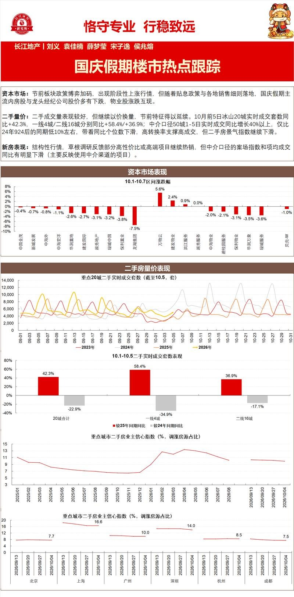
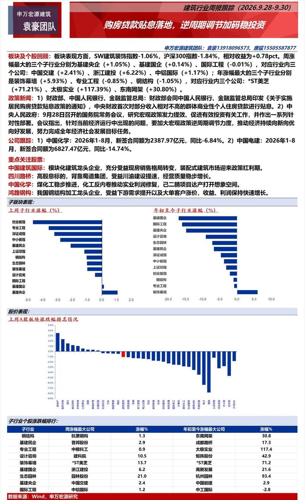
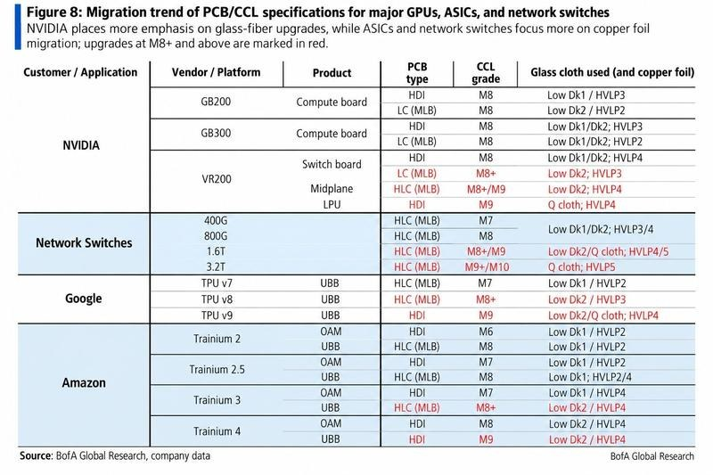
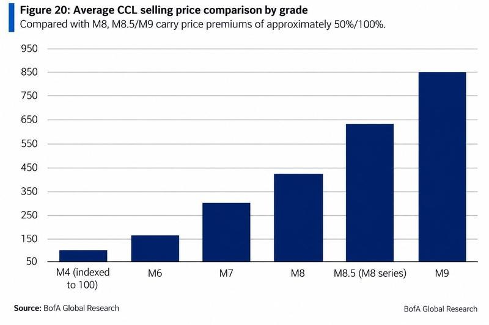
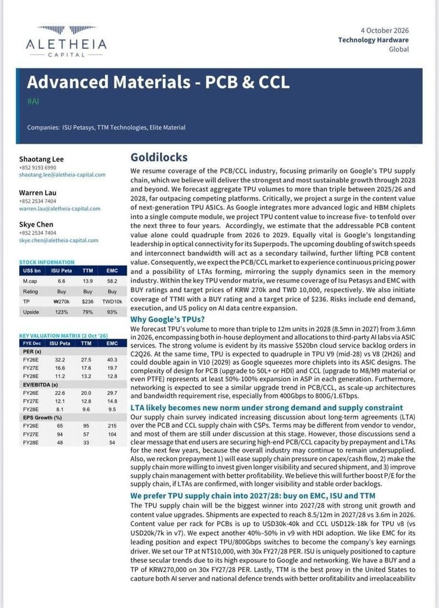
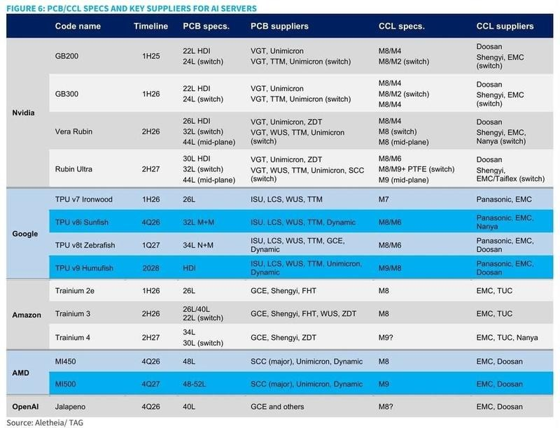
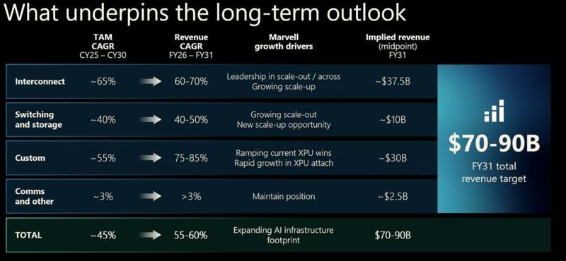
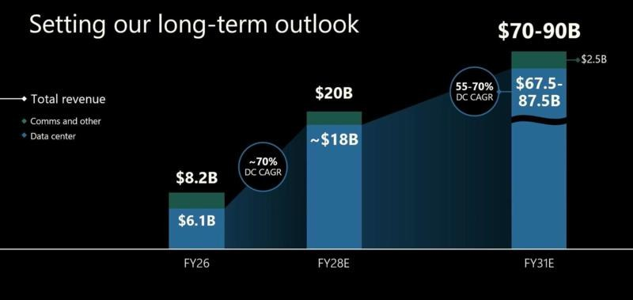

调研纪要 · 2026-10-07 新闻日报
星球 ID: 28855458518111 | 共 151 条帖子 | 精华 45 条
| 查看研究积累
强制同步到研究积累
全部 电子 计算机 其他 非银金融 宏观策略 机械设备 传媒 社会服务 电力设备 医药生物 基础化工 食品饮料 公用事业 房地产 交通运输 通信 石油石化 建筑材料 煤炭 美容护理 环保 汽车 建筑装饰 商贸零售 纺织服饰
书签
【国联民生计算机】小吕说AI纪要
【国联民生计算机】小吕说AI纪要
share.note.youdao.com ↗
本周会议重点讨论国庆假期以来四个值得关注方向，详情参见纪要：
1. 【豆包商业化】大幕将起与多点数智的机遇
2. 【模算协同】重大更新：昇腾950公开显示支持部署10T级别参数国产模型
3. 【个人Agent】Muse对AI Agent板块影响解读
4. 【国产大模型开始新一轮升级潮】智谱、MiniMax或迎来新一轮模型创新潮
国庆假期楼市热点跟踪
国庆假期楼市热点跟踪
购房贷款贴息落地，逆周期调节加码稳投资


2 图
AMD急需HBM芯片，三星瞄准代工订单......苏姿丰:"更广泛的合作"
AMD急需HBM芯片，三星瞄准代工订单......苏姿丰:"更广泛的合作"
据韩国媒体报道，三星和 AMD 今天会面，寻求共同点：三星希望 AMD 向三星晶圆代工厂下订单，以换取三星提供 HBM 和其他内存，而 AMD 急需内存。
一位韩国媒体援引半导体行业资深人士的话说：“AMD 认为将代工工作委托给三星电子风险太大。”他还补充道：“为了确保 HBM 的稳定供应，AMD 必须接受三星的提议，但双方对此看法不同，正是这种分歧促成了此次会谈。”
据悉三星下一代HBM4E通过英伟达等客户质量测试
据悉三星下一代HBM4E通过英伟达等客户质量测试
10月7日｜据韩国经济日报，经确认，三星电子下一代高带宽内存“12层 HBM4E”产品已通过英伟达及主要超大规模数据中心运营商的质量验证。该测试是按照客户要求的标准对产品进行验证的流程。不过，目前确认的仅是产品通过质量验证，尚无法确认各客户的供应数量、合同规模以及开始量产供应的时间。业内人士分析认为，随着行业向新一代产品转型，在与SK海力士和美光竞争的高性能AI存储器市场，三星有望提前扩大供应机会。
【国海医药】诺奖生理学医学奖，一图看懂，关联标的tips
【国海医药】诺奖生理学医学奖，一图看懂，关联标的tips
省流：
光遗传学首个临床应用在视网膜色素变性（RP），中国患者~50万；
无治疗用药（个别罕见突变除外），Nanoscope首个基于光遗传学的视神经重建疗法（AAV递送），早期数据可使失明患者部分恢复视力，当前进度BLA；
相关资产：
【海特生物】【特宝生物】参股相关管线公司；
【康弘药业】国内领先的眼内AAV递送平台
节后A股大概率回补反弹
节后A股大概率回补反弹
------------
1、长假风平浪静
长假期间，除了红海有新的摩擦以外，海外总体平稳，市场在节前担心的尾部风险都没有出现。
2、并不意味着节前调整是错的
长假避险是A股特色，一方面和A股博弈属性较强有直接关系，另一方面追求多大程度的确认性本质上取决于资金性质。
3、在尾部风险解除的情况下，节前跌的越多，节后涨的越多
近10年来（剔除2024），A股主要指数节前5日和节后5日的负相关性极高，万得全A达到-0.75，上证指数达到-0.81，即节前跌的越多，节后涨的也就越多。
我们理解，这种现象归根结底还是和A股的博弈属性有关：节前避险资金撤出，风险解除后，撤出资金需要在节后完成回补，进而推动A股在节后反弹。
今年节前5个交易日，全A下跌4.6%、上证下跌2.8%、沪深300下跌4.1%、创业板下跌7.8%。
4、需要担心日韩港股今天大跌的拖累吗？
我们认为影响有限。毕竟除了港股，日股、韩股在长假期间总体仍然是上涨的，美股则更加明显，即便是简单地对冲计算后，A股大概率也会反弹。
【外因尚可，内因待察】国投证券金工杨勇20261007
【外因尚可，内因待察】国投证券金工杨勇20261007
[烟花]国庆长假期间，美股表现稳健。截至10月6日收盘，标普500四连阳，假期累计上涨2.19%并创出新高；费城半导体指数假期累计上涨4.66%，持续领涨；日经指数上涨5.89%，MSCI新兴市场指数上涨2.22%；VIX指数假期累计回落8.14%至15.01。
[烟花]最关键的变化出现在贴现率端：10年期美债收益率于10月6日单日回落0.75%至5.27%，自10月2日盘中创下2002年以来新高后首现拐头迹象。由此或可合理判断：外因尚可，且边际改善。
[烟花]从国庆前后A股走势的历史表现看，节前若出现下跌，节后上涨概率较大。2006—2025年期间，上证指数节前10日下跌的12个年份中，节后5日上涨概率为83%（10/12），均值+3.19%；节后10日上涨概率亦为83%。今年节前5日跌2.78%，综合考虑外围因素对A股自身走势相对有利，本次或有望延续历史经验，节后上涨概率较大。
[烟花]从A股当前自身趋势状态看，趋势偏弱，量能萎缩。虽然当前企稳是大概率事件，但其力度和持续性仍待观察。在期待市场跟随外因企稳反弹的过程中，短期或对科技成长相对有利；如若后续科技成长板块开始放量上涨，且海外科技板块仍能保持上行格局，后续或可再高看一线。
[烟花]具体板块上，行业四轮驱动模型提示短期优先关注电力设备、电子、机械设备、汽车、通信等板块的机会。
风险提示：历史经验及模型在宏观环境变化时可能存在失效风险。
❗【天风电新】SOFC深度（4）：扩产&降本超预期，非AI需求仍被低估-1007
❗【天风电新】SOFC深度（4）：扩产&降本超预期，非AI需求仍被低估-1007
————————————
🌟BE扩产超预期，看好SOFC出货量上修
1）美国AIDC正面临社区更严格审查。SOFC清洁低碳的优势，能够缓解当地居民对于环境污染和审批的担心，正日益受到客户青睐。Oracle、Nebuis均有标志性项目采用SOFC替代燃机。
2）BE推出Power Connect方案，把需要在项目现场完成的接线、测试和电气集成等工作，前置在工厂完成。通过标准化设计，项目现场安装时间再缩短40%以上。
3）SOFC发出直流电，省去了电源和机架之间的多层输送和转换设备，可以缩短项目交付周期。根据BE测算，1GW AI数据中心采用SOFC+800V DC方案，非算力CAPEX降低36亿美元，降幅27%；五年非算力TCO降低55亿美元、降幅9%。
26年9月，Bloom Energy在其Fremont工厂新增了15.8万平方英尺的生产场地，#按面积估算产能有望上修至10GW。预计SOFC出货量也将相应上修。
🌟非AI领域的需求仍被低估，SOFC天花板远高于市场预期。
1）AI需求爆发之前，SOFC应用主要集中在家庭热电联供、离网工商业分布式、备用电等市场。由于成本较高，下游应用并未完全打开。过去十多年时间里，BE一直保持两位数成本下降。#以先导基电为代表的等国内供应商的导入将帮助BE加速降本。
2）假设BE每年仍保持两位数降本，若毛利率不变，则预计#28年前后SOFC系统价格可降至2200$/kW以内，实现燃机（涨价后）平价；#30年前后SOFC系统价格可降至1600$/kW，实现燃机（涨价前）平价。
3）若SOFC实现与燃机平价，有望在公用事业等非AI领域实现替代。2025年全球燃机新签订单100GW，26Q1新签订单29GW、26Q2新签订单38GW。若其中有一半被SOFC替代，则意味着#SOFC装机有可能到50~80GW，远超市场预期。
🌟投资建议：看好SOFC主机厂商及Bloom Energy供应链。
1） SOFC主机厂：Bloom Energy、潍柴动力、三环集团、云意电气。
2）Bloom Energy产业链：
价值量占比高的：先导基电、德昌电机控股、三环集团、中原内配；
价格弹性：振华股份；
ASP扩张：京泉华、壹连科技；
耗材属性：春晖智控。
报告链接：mp.weixin.qq.com/s/D_R9DIIRFhD3Q6nviwdu4w
————————————
欢迎交流：孙潇雅/敖颖晨
❗【天风电新】PCB：看好载板化和树脂升级趋势 1007
❗【天风电新】PCB：看好载板化和树脂升级趋势 1007
———————————
✅载板化
AI驱动PCB逐渐载板化，带动产业技术升级和价值重构。AI把PCB推向更前端，功能定位从板级互连向类载板（SLP）、封装延伸方向演进，即以更高材料等级、更密线路与更复杂叠层，承接此前由封装基板承担的功能。
投资端，利好PCB本B环节的【深南】、【兴森】、【方正】、【沪电】、【胜宏】。上游卡脖子材料的ABF膜&BT core层的【华正】，载体铜箔【方邦】。
✅树脂升级
近期跟踪NV、台光、南亚塑胶、生益，发现#树脂面向碳氢升级趋势明确。
NV：已开始在Rubin Ultra NVL576交换托盘上测试以碳氢树脂为主的无玻纤覆铜板，替代此前测试的PTFE无玻纤方案；初步测试满足高频电性要求（不及PTFE、但优于M9等级甚至超过M10）。
台光：正在对M9树脂方案升级，将BCB树脂占比从30%左右提升至接近50%，实现M9树脂+2代布的电性达到M9+Q布的水平，成本较M9+Q布低30%左右。
生益：认可并积极推进BCB碳氢树脂的测试和保供，典型有呈和科技。
南亚塑胶： Level 10Q对标台光898K3（M9水平）采用二代布+四代铜（和其Level 8K2一致），30GHz下DK降至2.88，Df降至0.00077，故推测性能升级来自树脂，即增加碳氢BCB使用比例。
投资端，利好碳氢树脂玩家，龙头标的【东材科技】（碳氢产能约4k吨，匹配台光等多家CCL中），弹性标的【呈和科技】（拟新增1000吨BCB碳氢，目前主力配套生益测试中）。
———————————
欢迎交流：孙潇雅/张童童
【财通大化工&ai材料】M9/10树脂方案假期更新：建议重点关注碳氢BCB树脂，重大预期差，确定性呈现量涨价升趋势，建议关注#呈和科技/东材科技
【财通大化工&ai材料】M9/10树脂方案假期更新：建议重点关注碳氢BCB树脂，重大预期差，确定性呈现量涨价升趋势，建议关注#呈和科技/东材科技
结论：碳氢树脂在高阶CCL/PP的的应用持续扩大。具体为：1、26年Q4放量的M9；2、27年Q2量产的Rubin Ultra NVL576之switchtray ；3、未来的M10。
1、Nvidia开始测试以碳氢树脂为主的无布CCL，评估能否满足2H27量产的Rubin Ultra NVL576之switchtray PCB需求。
2、M9方案最新进展，添加10%左右的BCB碳氢树脂可以显著改性电性能，玻纤布可以从Q布调整成二代布，成本下降约20%（具体测算可以私信），根据头部CCL厂家反馈，M9方案未来会是ODV碳氢+少量BCB碳氢+二代布+HVLP4铜。
2、M10四大主流测试方案的共同点在于BCB树脂。我们了解到，目前M10有四大主流方案，他们共性在于都需要绝对增量的BCB树脂。最有可能的方案是：PTFE有布core层+PP层方案或者纯碳氢树脂（BCB)+二代布core层+PP层方案。
3、我们测算（具体私信），BCB碳氢树脂在2027-2029年需求量为1350吨，5400吨，9720吨，BCB单价300万/吨，2029年市场空间270亿左右。由于目前单体产出有限，在未来两年时间内会出现紧俏供给问题。
综上，我们认为市场对于BCB树脂的认知存在很大的预期差，确定性和爆发性是当下AI材料中最强的方向，建议重点关注：呈和科技、东材科技等。
[庆祝]AI材料周观点1007：假期外盘龙头股价表现提振产业信心，pcb上游产业链表现优异
[庆祝]AI材料周观点1007：假期外盘龙头股价表现提振产业信心，pcb上游产业链表现优异
[太阳]外盘表现
1）#AI材料链假期外围多龙头破新高，龙头英伟达（+4.8%）、台积电（+4.2%）、AMD（+6.2%）、Lumentum等均创历史新高；
2）#PCB/CCL材料外盘涨幅较强，联茂（+27.8%）、台光电（+20.6%）、建滔积层板（+10.4%）涨幅亦显著领先；
3）#存储领域受东芝子公司扩产HDD影响，希捷、西数股价表现不佳。
[太阳]PCB上游
1）AI品方面，近期部分m10板子即将少量下单，#m10确定性有望在震荡中上行。#看好量价齐升空间相对最大的BCB树脂龙头（东材科技），其他上游材料，如q plus布（菲利华、中材）、hvlp4铜箔亦存结构性机会。
2）传统品方面，10月电子纱/布再次提价，主流企业电子纱G75调价3000元/吨，7628电子布调价1.5元/米，报价达13-13.3元/米，CCL本月亦有再涨价预期。业绩线看巨石和建滔，业绩沿链条依次改善，电子布Q1→CCL Q2→PCB Q3，Q3链条业绩普遍兑现。
➡️PCB上游产业和市场演绎至此，后续博弈点或已不在拔估值，#而是技术路线一次次的边际小变化与盈利确定性提升的超预期空间。
[太阳]载板与存储上游
1）载板上游：MSAP药水（天承）、T布（宏和）、载体箔等产业格局市场已然清楚，跟随外盘股欣兴电子（破新高，+11%）正向表现有望走出小beta。
2）存储上游：HDD扩产对于本体的格局边际影响已表现，#但对于上游如HDD玻璃盘片等环节或有正向需求拉动，国内厂商（戈碧迦）有望明年年中导入海外大厂且有望获得较大份额，今年在持续接洽，持续关注一次次的边际催化。
#风险提示： 产业预期未跑赢市场预期，资金冲高兑现等。
🌊具体产业动态及Q3前瞻等欢迎电话联系交流 xl&zmh
AI/光模块随笔：国庆假期海外算力链观察
AI/光模块随笔：国庆假期海外算力链观察
Marvell Investor Day增量最大的预期差，#公司将FY28收入目标由180亿美元上调至约200亿美元，同比FY27预计增长67%，#首次给出FY31收入700亿–900亿美元的长期路径，FY29 Custom收入目标由100亿美元提高至120亿美元以上，预计CY30可服务市场约4000亿美元，互联市场2025–2030年复合增速约65%，是增长最快的环节。此外，公司对相干和scale-across方向展望积极。
针对MS的FCC相关的报告，点评几点：1、3.2T光模块中国厂商研发进度领先显著；2、中国光芯片厂商在27年市场份额或达到50%，且在InP衬底的上游有更多反制手段；3、无论EML或硅光方案光模块，DSP芯片、TIA、Driver、其他电芯片、激光器芯片、探测器芯片的合计BOM占比>65%；模块大厂在核心物料锁定上优势显著。
美股光通信标的国庆假期期间表现强劲：AAOI +31.1%、Ciena +26.1%、Coherent +17.6%、Lumentum +16.7%；10月后续关注三季报、OCP、GTC、CLS和Oracle的投资者日；继续看好光模块核心大厂，#中际旭创、新易盛、天孚通信 ；相干方向，#光迅科技、德科立； 上游关注设备厂商#联讯仪器。
（长江通信团队）
假期台股线索梳理摘要——1007
假期台股线索梳理摘要——1007
1、产业反馈ScaleoutCPO进展加速：美股光（ie.Lite）+Test设备（ie.Advantest）领涨；
2、台积电德州潜在扩产+Terafab合作（均存疑）：美股AMAT等滞涨设备股强势反弹；
3、MLCC大涨：太阳诱电+TDK战略合作，三星电机签大订单；
4、载板继续强势：CPU逻辑演绎，AMD董事长来台锁产能；
5、PCB+CCL：Q3业绩确定性高增，PTFE+CH树脂为题材支线；
详情欢迎联系国联民生吴爽
[红包]【东财通信】FCC利空出尽+产业趋势强化，光通信仍是AI投资首选赛道
[红包]【东财通信】FCC利空出尽+产业趋势强化，光通信仍是AI投资首选赛道
[礼物]政策层面，FCC限制短期不影响光模块业绩，随着预期消化，利空有望逐步出尽。大摩预计该限制最可能在3.2T代际落地，2028年爬坡、2029年放量，对800G/1.6T无实质影响；中期走向则取决于中美博弈的实际落地。#对A股光通信龙头中性偏利好： 若按“美系BOM≥65%”豁免，LPO/NPO难达标，但带DSP的分立EML-DSP和硅光CW-DSP可通过采购美系DSP、激光器等满足合规，龙头有合规路径可走；同时美国短期难以替代其产能，龙头基本面稳健，三季度业绩有望兑现。#对中国光上游整体偏利空，但内部分化：在65%门槛下，模块厂会优先采购美系核心零部件，国产光芯片出口承压；不过国产光芯片研发集中于NPO/CPO高功率激光器，供应链与可插拔模块差别较大，具备前沿储备的厂商受影响有限。
[礼物]产业趋势层面，迈威尔投资者交流进一步明确，AI市场景气度有望持续到2030年。公司不仅上调自身营收指引，更给出行业长期指引：2030年AI TAM达4000亿美元、数据中心资本开支达3万亿美元。同时，迈威尔强调光连接环节持续通胀、新技术稳步推进：AI集群从单机架向多机架扩展，铜互连面临物理瓶颈，Scale-up、CPO/NPO等新技术打开空间；单XPU配套Scale-up光器件价值量已达数千美元，明年起放量，TIA与Driver产品27年营收显著增长，NPO与CPO长期共存。#AI景气持续与光通信通胀两大逻辑进一步强化。
[礼物]从市场表现看，国庆期间海外光通信板块大幅上涨，说明全球资金在AI产业趋势内部寻找景气度高、业绩确定性强的细分方向时，#仍首选光通信。我们继续看好光通信赛道：经过前期调整，市场对板块的短期悲观预期已消化得较为充分；与此同时，全球AI在光通信、光互联环节仍处于一轮大的技术升级周期，板块有望重新回归业绩与产业趋势驱动。#建议重点关注联特科技、九州一轨、中际旭创、新易盛、天孚通信、炬光科技、汇绿生态等。
[礼物]欢迎联系：csy,wyj,clh
【广发机械】专用设备假期总结：海外AI链创新高，产业趋势不变
【广发机械】专用设备假期总结：海外AI链创新高，产业趋势不变
十一期间海外科技大涨，纳指再创新高，AI产业趋势不变。
#光设备。【Anthropic】拟上市，2025年营收45.9亿美元，同比增1088%，多年期云与算力合同承诺高达【5180亿美元】；【Marvell】上调长期营收目标，上调28年营收目标至200e美元（其中数据中心业务180e美元，上修约20e美元），目标2031年实现收入700~900e美元，non-GAAP EPS达到30美元以上；外资发布【FCC相关报告】，光模块的潜在限制更可能在3.2T阶段分阶段实施，可能最快10月有动作，中国造的收发模块仍可进口，条件是BOM美国含量≥65%(Marvell DSP+LITE/COHR激光就能接近)；10月5日，特朗普任命国家情报总监JayClayton领导“超级智能特别工作组”，9月29日白宫与Google、Anthropic、Meta、OpenAI、xAI、Nvidia签署四层管控《
超级智能协议 ↗ 》，龙头模型与算力公司的政策不确定性显著下降。
如同我们路演一直强调的，近两年行业的产能将有10倍级增长，叠加产品升级，光模块设备市场将从百亿级别迈向千亿级别，临近Q3季报，光通信设备将成为业绩最强的板块之一。CPO设备关注罗博特科、联讯仪器、天准科技、强一股份、科瑞技术等，光模块设备关注联讯仪器、罗博特科、华兴源创、猎奇智能、矽电股份、凯格精机、博众精工、奥特维、快克智能、科瑞技术、智立方、华盛昌（伽蓝特）、和林微纳等。
#半导体设备。海外方面，【美光】26Q4超预期，收入4.23bn，YOY +379%/QOQ +31%，27Q1指引收入$61.5bn±$1.5bn，且美光预计2028年的供应将比2026年【更加紧张】，HBM定价2027年将大幅上涨；【台积电】，预计三季度营收将达指引区间上限，摩恨大通预估为458.4亿美元，环比增长14%，毛利率约66.8%，亦处于指引高端；10月6日，DRAM供应商对四季度合约价的早期谈判已明确指向大幅上涨，美国采购端需求动能显著增强；马斯克宣布与台积电治谈Terafb合作。
国产方面，【DeepSeek】正式开源面向华为昇腾算力平台的基础设施组件，涵盖 TileLang 高级语言编译工具、计算库、分布式通信库，全面对标英伟达的CUDA生态；【DeepSeek】最新一轮融资额接近锁走至少800亿元人民币(120亿美元)，大幅超过公司原走融资目标，为计划于2027年初进行的首次公开嘉股奠定基础；【长鑫科技】349亿元投向研发与后道测试，其中技术研发项目投资241亿元，存储器晶圆后道测试基地二期项目投资108亿元；亚马逊云科技(AWS)旗下大模型服务平台Ama20n Bedrock官宣接入【智谱GLM-5.3】，AWS基于模型调用星与智谱进行收入分成；【华为与高通】达成多年期广泛专利交叉许可，覆盖5G/计算/AI网络，高通同步收购华为部分美国专利；
先进制程和存储不断涨价的背景下，我们持续看好半导体设备。继续强调长川科技、强一股份、华峰测控、精智达、联动科技、金海通、矽电股份、欧康诺以及精测电子、微导纳米、迈为股份等半导体设备。
#玻璃基板。【三星电机】已进入其下一代大尺寸玻璃基板的封装级验证阶段，该公司已完成100毫米×100毫米玻璃基板本身的可靠性测试，正与多家全球大型企业展开合作，目标是在2027年底前实现生产线投产；【LPKF】收到亚洲头部先进封装厂商意向订单，用于玻璃基板的产能扩产；【英伟达】已要求韩国、日本和台湾的基板制造商在两年内完成玻璃基板的开发，可能在2028年之前完成；我们一直强调，行业逐步形成了玻璃作为终极材料的共识，未来半年到一年内行业的变化会持续不断。
继续强调帝尔激光、长川科技、强一股份、汇成真空、长信科技以及大族激光、德龙激光、英诺激光、东威科技、芯碁微装等。
欢迎交流。
孙柏阳/汪家豪/王宁/许贝尔
⭐⭐【国金金属｜黄金】261007：央行购金延续、海外财政风险发酵，结构性支撑依旧
⭐⭐【国金金属｜黄金】261007：央行购金延续、海外财政风险发酵，结构性支撑依旧
🎁#事件：中国央行9月增持约23吨黄金，土耳其央行8、9月也恢复买入。海外长端利率持续上扬，美国30年期国债收益率升至5.7%，英法超长债也同步承压。
🎁#中国央行购金空间大，实际购金或高于公告，托底$4000/盎司：中国9月连续第23个月增持，购金量较8月约20吨进一步增加。中国贸易顺差极大，有意愿+有能力托底金价。
🎁#长端压力并非美国独有，法国等财政风险发酵，黄金正在争夺原本属于主权债的配置。已披露的8月欧洲黄金ETF净流入79亿美元，法国上市产品净流入15亿美元，均创纪录。财政可持续性与主权融资成本担忧，是欧洲资金配置黄金的重要背景，寻找不依赖政府偿付的资产。
🎁#金价底部夯实，等待周期性共振。假期COMEX黄金下跌0.8%，1）类似7月，市场对美国数据分歧较大，后续加息预期若回摆，周期性压制结束，预计反弹凌厉；2）现在没有6月交易AI带来美国经济全面过热与黄金长逻辑破灭悲观，实际利率已大幅抬升的情况下，结构性逻辑驱动欧洲ETF配置，下跌空间有限。
🎁#黄金股赔率可期。权益是长久期资产，金价远期赔率大+黄金公司强成长性，26Q3国内产量扰动或为弹性标的创造买点。继续建议关注投产率先兑现+并购期权的#万国黄金、表观估值偏低的#灵宝黄金，以及A股#中金黄金、#山金国际、#赤峰黄金、#招金黄金等。
联系人：黄泽浩 18575892374 / 吴晋恺 / 王钦扬 / 金云涛 / 覃雨阳
游轮专家交流更新
游轮专家交流更新
中秋国庆假期长江游轮整体弱于往年，头部公司表现强劲，四季度预订有所回暖
2026年中秋国庆长江游轮市场延续“以价换量”，高端与中低端产品进一步分化。中秋三天假期难以覆盖主流游轮行程，表现弱于往年；国庆前几日航次销售较好，但整体票价弱于去年同期。受行业淡季影响，部分公司价格和上座率均出现下滑，但头部豪华游轮长江探索及三峡旅游长江行系列游轮预订紧俏、价格稳定，行业分化进一步加深。
关注在客群定位、提前销售和渠道积累具备优势的头部游轮企业。长江探索仅有148个床位，面向高端小众客群，境外预订占比较高，叠加长期服务与口碑沉淀，能够提前较长时间锁定舱位。三峡旅游揽月、极光号投运前充分预热智能化客房和“食神”团队餐饮体验，提前布局境内外销售团队、吸收冠达销售部门负责人承接冠达游轮海外客群，借助何磊、熊成等头部游轮自媒体IP扩大触达；全年均价4800-5000元。高端产品供给相对有限、获客渠道更广，在行业降价时仍能保持较强销售韧性。
长江游轮高端市场约占两成，客群差异驱动量价分化。长江探索、三峡旅游、冠达游轮构成长江游轮高端市场，年接待规模可达30万人次，占全行业两成，核心特征是价格坚挺，中低端产品主要依靠降价换量。自媒体普及后，高端游轮受众扩展至全国高收入群体，高收入群体受宏观经济波动影响小，消费能力稳定；中低端游轮客群受经济环境影响支付能力下降，即使降价也难以明显提升销量，核心客源地集中于江浙沪、京津冀、西南（四川为主）及华南（广东、福建）。
四季度预订有所回暖，预计27年行业分化延续。国庆后预订回升，四季度经营景气有望企稳或小幅改善。2027年行业整体预期不佳，中低端市场可能继续走弱。高端游轮方面：探索游轮已公布涨价计划，名人套房折扣从7折收窄至8折，单票涨价约5000-6000元，预计将继续保持稳定经营；三峡旅游旗下游轮关注境外客源留存、自媒体持续获客及运营磨合。
西式快餐龙头草根更新（数据仅供参考）：
西式快餐龙头草根更新（数据仅供参考）：
7月同店销售额同比+1%，TC同比+3%，TA同比-2%
8月同店销售额同比+2%，TC同比+4%，TA同比-2%
9月同店销售额同比+1%，TC同比+3%，TA同比-2%
整体Q3同店销售额同比+1%，TC同比+3%，TA同比-2%
10月1-5日国庆假期的同店销售额同比增幅3%，堂食（含外带）销售额提升，外卖金额没掉。低线表现优于高线
[红包]AI制药行业动态（9.28-10.6）
[红包]AI制药行业动态（9.28-10.6）
[玫瑰]9月28日，罗氏投资者日上提出公司目标在药物研发领域实现“人工智能独立”，目前AI自动化实验室已启动建设，该实验室采用“Lab in the Loop”循环模式，形成干湿实验闭环。从25Q4到26Q2，40%的管线决策都得到了可追踪的AI支持。AI赋能下，罗氏三期临床试验的成功率已从2025年的65%跃升至80%以上。公司的靶点评估Agent有望在2026Q4前参与80%的研究组合决策。公司计划将约20亿瑞士法郎研发结余资金重新调配，投向研发项目与效能提升。目标到2030年，最多向市场推出20个新分子实体。via财联社
[玫瑰]9月29日，Isomorphic Labs官网发表《Building a new path to make medicines with AI》，完整展示其一体化 AI 药物设计引擎 IsoDDE是如何AI自主设计药物，事先设定设计参数和目标，包括具体的生物靶点、分子类型及作用机制、所需的选择性等属性，在2到4天内自动完成能成功调节生物靶点的新分子设计的整个过程，湿实验验证显示其表现优于研究人员耗时3-5年获得的参考分子。via医药魔方
[玫瑰]9月29日，微软研究院推出实验性多模态AI研究系统Project Quine，该系统是一套覆盖基因组学、蛋白质、化学、RNA、细胞状态与生物成像等多种模态的生物学世界模型，与交互式推理框架结合起来，目标是把计算生物学建模与实际湿实验衔接起来，借助这种架构，传统药物发现中的部分瓶颈有望得到突破。via新浪财经
[玫瑰]9月30日，谷歌DeepMind团队在Nature发表研究，推出SynthID Bio，一套专门用于生物设计的水印技术。它可以在AI生成的蛋白质氨基酸序列，以及AI预测的蛋白质三维结构中嵌入隐藏水印。湿实验结果显示，水印基本没有影响其原本的生物学功能。via深科技
[玫瑰]9月30日，英矽智能宣布提名ISM1354，一款AI驱动的靶向GIPR的全新小分子临床前候选化合物，用于肥胖、2型糖尿病及相关代谢疾病，同时有望拓展到心血管疾病领域，调控肥胖相关的心力衰竭等疾病。英矽智能于今年1月宣布提名另一款GIPR拮抗剂ISM0676，该分子在人源化小鼠模型中，与司美格鲁肽（Semaglutide）联用时展现出最高31.3%的减重效果。与之相比，此次最新提名的PCC在保持强劲减重药效的同时，进一步提升了药代动力学和体内/外安全性特征，并维持了优异的成药性表现。via英矽智能
[玫瑰]10月2日，艾博生物与诺华达成推进RNA疗法的授权及许可选择权协议。该协议包括授予诺华对艾博重点管线ABO2203的全球独家许可权，以及基于艾博专有RNA平台开发其他潜在项目的独家许可选择权。首付款5.75亿美元，最高约72亿美元的潜在里程碑付款。ABO2203是一款创新mRNA编码CD19xCD3 TCE，有望重塑自身免疫性疾病的治疗格局。剂泰MTS-109是全球率先推进至IIT人体阶段的mRNA-LNP编码三特异性TCE，依托淋巴器官特异性递送技术，在IIT患者上面观察到快速、深度的B细胞清除，同时具备皮下给药、快速免疫重置等差异化特征，目前IIT临床正在推进，IND准备工作同步开展。mRNA体内表达TCE的技术路径，有望在疗效、给药便利性、安全性窗口等方面带来新的开发可能性。via艾博生物、剂泰科技
[玫瑰]10月2日，Xaira Therapeutics披露了AI分子设计平台X-Design在真实管线项目中的最新进展，通过两个临床前项目肿瘤靶点XA-1和复杂GPCR靶点XA-4，展现AI能从零设计出瞄准这些靶点的抗体；其中XA-1项目AI从零设计182个抗体序列，3周湿实验得到可推进分子，第7周得到临床前先导。via BioTender
[玫瑰]10月5日，谷歌DeepMind正式发布生成式从头酶设计系统AlphaProteinNovo。该系统基于“催化基序支架化”生成式扩散模型，首次从目标化学反应机制出发，从零构建自然界不存在的酶结构。整合LigandMPNN序列优化、AlphaFold 3结构预测及专门催化机制评价指标，形成“化学反应一蛋白质设计一结构预测一机制评价”的完整Al闭环。在合成哌啶等挑战性化学问题上，选择性显著优于传统天然蛋白筛选路线。via智药局
[玫瑰]10月6日，在Discovery on Target 2026大会上，晶泰科技分享了分子胶药物发现平台的最新进展，并公布了在多项针对自身免疫疾病的高价值难成药靶点的分子胶项目中取得的阶段性突破。从早期微摩尔级（10⁻⁶）活性的Hit分子出发，团队在数月内将分子活性推进至纳摩尔级（10⁻⁹）甚至更低水平，实现千倍以上提升。目前，项目正持续优化与评价候选分子，并向PCC阶段迈进。via晶泰科技
【广发地产】国庆楼市数据（完整版）：新房及二手同比增长接近5成
【广发地产】国庆楼市数据（完整版）：新房及二手同比增长接近5成
‼️国庆成交：BK平台77城成交套数国庆节前六日日均成交2993套，同比+50.5%（25年1989套，24年有政策3238套，23年1677套）；
‼️69城来访国庆节前六日日均6.1万组，同比+23.5%，（24年为4.9万组），来访水平与24年相比有所提升。
[烟花]一线国庆成交同比+38.1%，其中：上海+44.9%、广州+22.2%、深圳+12.9%、北京+11.6%；
[烟花]二线国庆成交同比+53.8%，低价城市成交表现更好：青岛+110.9%，济南+102.4%，合肥+94.1%；
[烟花]三四线成交同比+51.4%。
‼️929贴息政策影响：我们将样本城市，按照150w&120平米以下（受贴息影响部分）成交套数占比，分成三类样本。
‼️分别是受益套数占比<20%、20%~60%和60%以上。三类样本，十一假期成交量同比别46.5%、52.3%和43.6%，均有改善。
‼️新房网签：国庆节前六日日均成交19.3万方，同比+45.5%（25年13.2万方，24年14.7万方，23年17.9万方），网签增长明显。
【华创传媒互联网】国庆档票房简评：总票房及观影人次承压，头部影片体量有限，关注后续优质影片供给
【华创传媒互联网】国庆档票房简评：总票房及观影人次承压，头部影片体量有限，关注后续优质影片供给
🎬档期票房及观影人次下滑，平均票价基本稳定。根据猫眼专业版，截至2026年10月7日18时，2026年国庆档票房达11.49亿元，暂较2025年国庆档的18.35亿元下降37.4%；观影人次3136.0万，较去年档期的5008.9万下降37.4%。平均票价36.4元，较去年36.6元下降0.5%。今年国庆档为10月1日至7日，共7天；去年为10月1日至8日，共8天，档期长度存在差异。从量价表现看，票价变化有限，总票房下降主要因观影人次减少。
🎬供给类型丰富，头部影片体量有限。国庆档影片涵盖合家欢、动画、犯罪悬疑、喜剧、现实等多种题材，供给类型较为多元。《
神探之痕迹 ↗ 》《
什么意思夫妇 ↗ 》《
生化危机：爆发夜 ↗ 》暂列档期票房前三，档期票房分别为4.19/2.42/1.68亿元。根据猫眼专业版，《
神探之痕迹 ↗ 》《
什么意思夫妇 ↗ 》《
生化危机：爆发夜 ↗ 》预测总票房分别为6.56/3.66/5.18亿元，当前预测均不足10亿元，缺乏能够显著抬升档期体量的大体量爆款。其中，《
生化危机：爆发夜 ↗ 》于10月5日上映，在档期内上映时间较短，后续票房释放仍需继续跟踪；暑期档上映的《
欢迎来龙餐馆 ↗ 》延续放映并进入档期票房前五。
🎬全年大盘仍保持谨慎，关注后续定档情况及贺岁档供给。根据猫眼专业版，截至2026年10月7日，全年累计票房为307.40亿元，较去年同期的436.79亿元下降29.6%。结合国庆档表现，我们对全年大盘仍保持谨慎，后续市场修复仍需关注优质影片对观影需求的拉动。近期已定档影片包括《
三星堆：未来往事 ↗ 》（10月23日）、《
疾速追杀 ↗ 》第一部（10月30日，首次内地公映）等。后续待上映影片还包括国产片《
转念花开 ↗ 》《
蛮荒禁地 ↗ 》《
千金不换 ↗ 》等、引进片《蜡笔小新：灼热的春日部舞者们》《
复仇者联盟5 ↗ 》等，建议持续关注后续重点影片定档、预售及上映后的口碑表现。
[太阳]【浙商大消费】双节数据一览～
[太阳]【浙商大消费】双节数据一览～
---------------------
[玫瑰]交通出行：#总量持平。根据交通运输部，全社会流动量10.1-10.5同比+0.8%，其中铁路+10.5%、公路+0.2%、民航+0.2%。根据DAST数据，国庆前6日民航，客座率微增、平均票价同比+12.4%，量平价增。出入境方面，10.1-10.5上海边检出入境旅客同比增长2.4%。
[玫瑰]消费：#量好于价。根据商务部，国庆前三天商务部重点监测的78个步行街（商圈）客流量、营业额同比分别增长3.4%、5.3%。据海口海关统计，26年10月1-5日海南离岛免税购物金额、人数、件数分别同比增长4.99%、13.35%、7.76%。
[玫瑰]景区：#量延续增长。湖北前六日全省A级旅游景区累计接待游客同比增长3.44%；山东前五日全省重点监测的200家旅游景区累计接待游客和营业收入分别增长11.5%、7.8%；四川假期前六天景区累计接待游客增长1.78%。
[玫瑰]餐饮：#量增价平·海底捞古茗强者恒强。美团数据显示，10.1-10.4到店餐饮GTV及交易量均实现高单左右增长。海底捞数据显示，国庆首日全国预订量同比+35%。
[玫瑰]地产：#节前出台强力刺激措施拉动成交。1）二手房：据楼市日历数据，10.1-5日25城二手房成交量同比大涨43%。2）新房：根据国家统计局，10.1-6日30城新房成交面积同比+0.5%，其中一二三线分别+36%/+24%/-59%，高线率先回升。
[玫瑰]其他：#白酒 双节表现平淡，茅五及区域酒龙头动销表现居前；#纺服 十一受益全国降温，整体表现预计略好于9月。
---------------------
[玫瑰]#Nike季报：全财年预期谨慎、推动转型期成本节约
- FY27Q1（6-8月）收入112亿美元，剔除汇率-5%；归母净利7.12亿美元，-2%；存货78亿美元，-3%
- #分品牌看，Nike-4%，converse-28%；#分品类看，专业运动保持高个位数增长，但运动时尚低双位数下滑；#分区域看，北美+2%，EMEA-5%，大中华区-26%，APLA持平
- 首次给出27/5/31财年全年指引，收入下滑高单位数，全面推动PACE项目降本增效，大中华区并入亚太管理
风险提示：竞争格局恶化、原料成本波动等
欢迎联系：马莉/史凡可/詹陆雨/张潇倩等
26年十一假期数据更新-1007
26年十一假期数据更新-1007
✨全社会跨区域人员流动量同比微增。假期第1-6日，全社会跨区域人员流动总量达18.5亿人次，同比+0.1%；1-6日单日同比分别为-1.9%/1.2%/-0.4%/1.3%/1.7%/-1.2%。
✨铁路出行表现强于航空、自驾出行；反映出在较长的假期内，居民长线游占比提升，同时关注出行的性价比。假期第1-6日，铁路/公路/水路/航空同比分别+12%/-1%/+9%/-1%
✨酒旅：酒店预订量同比高增。华住集团2026年中秋国庆假期（9.25-10.7）对比去年同期（9.26-10.8），酒店整体预订率同比提升约2pct，预订间夜量同比+22%；首旅酒店9.24-10.7全国酒店均价与单店预订量同比均有增长。
✨海南免税购物及客流增长：
#10月1日至3日，海南离岛免税购物金额3.58亿元，参与购物人数5.51万人次，购买离岛免税商品27.7万件，比2025年同期分别增长8.85%、12.90%、8.02%。
#根据航班管家DAST，26年第39周（9.21-9.27）及第40周（9.28-10.4）海口美兰机场客流量同比分别+10.9%/+3.6%；三亚凤凰机场客流量同比分别+21.9%/-4.6%；两周加总来看，海口美兰和三亚凤凰机场客流总量为170.4万人次，同比+6.2%
✨线下商圈&餐饮消费数据相对稳定。国庆假期第1-3日，商务部重点监测的78个步行街（商圈）客流量同比3.4%、较五一假期回落1.6个百分点，营业额同比为5.3%、持平五一假期。
✨请3休13带动出境游热度提升。据预测，今年国庆假期（10月1日-7日），上海口岸预计出入境旅客86.8万人次，日均12.4万人次，较去年国庆假期增长10.9%；广之旅出境欧美+约三成、法瑞意德+253%。
✨文旅景区：
#宋城演艺：假期前六日累计演出排期385场，较2025年、2024年同期分别下降13.5%、15.6%。青岛累计排期42场；剔除青岛后，其余园区累计较2025年、2024年同期分别下降22.9%、24.8%。相较2025年，累计减量主要来自杭州、三峡、西安和广东。
#九华旅游：国庆假期前五天九华山风景区累计接待游客24万人次，较2025年同期基本持平，日均客流较2024年全假期日均客流高约22.6%。
#长白山：假日期间，长白山全域接待国内游客83.6万人次，同比增长38.46%；国内游客出游总花费8.02亿元，同比增长27.42%。
#黄山旅游：黄山风景区国庆假期前六日预约游客合计约20.1万人次+，日均约3.35万人次+。对比2025年国庆中秋假期8天、2024年国庆假期7天的实际接待日均客流，分别高约17.0%、22.1%
[咖啡]数据来源：文旅部、商务部、交通运输部、去哪儿网、同程旅行发言人、航班管家等
[咖啡]风险提示：基于公开资料信息整理，可能存在信息滞后或更新不及时、不全面的风险；任何情况下，不构成投资建议
国庆酒店数据更新：
国庆酒店数据更新：
[太阳]国庆数据：
10月1-6日，非官方口径（第三方）
华住：RP-1.4%yoy，ADR+0.4%yoy，OCC-1.8pct yoy
锦江：RP同比持平，ADR+2.5%yoy，OCC-2.4pct yoy
注：仅为前6日数据，历史上与公司口径存在差异，主要来自是否剔除关闭门店，历史上公司官方数据会更好。
[太阳]需求特征：
1 整体好于此前预期（经营层面预期国庆同比-5%以上）
2 节奏：前高后低，1-3日同比高增，4号后下滑，原因为长假期需求分散。
3 区域：华东天气影响大，西北地区表现更好。
4 量价：价格比预期好（此前预期量价齐跌，实际均同增）
5 分类别：经济型RP-2%yoy，中端RP基本持平；中高端RP+1%左右，表现更好。
[太阳]后续展望：
1 对Q4比预期更乐观，观察到广交会和展会需求较好（与中秋交流口径一致）
2 旅游需求相对稳定，没有太多变化，并未因更多假期消耗需求。
3 四季度开店继续放缓，供给增速放缓，预期Q4经营数据同比持平。
🧧【申万非银】券商板块估值仍在低位，把握头部机构中长期配置窗口
🧧【申万非银】券商板块估值仍在低位，把握头部机构中长期配置窗口
🌹#板块估值仍在低位，向上赔率弹性空间充分。
⭐在前期资金压制，行业三季度高频经营数据环比回落等因素影响下，当前券商板块估值整体仍在低位。截至10月7日，证券Ⅱ(申万)指数PB（LF）1.09x，处近十年来4.86%分位数水平。证券Ⅱ(申万)指数PB（LF）近十年最低值为0.94x，最高值为2.25x。市场调整阶段，板块右侧催化偏弱。若市场超跌反弹，或大波段行情预期升温，需看到板块向上赔率弹性空间充分。
🌹#标普、穆迪相继上调板块头部机构评级，关注头部券商中长期配置窗口。
⭐近期，标普、穆迪相继上调部分头部券商评级（其中，标普上调中国证券业锚定评级，上调广发证券/广发控股香港评级，上调中信等多家券商展望；穆迪上调中金公司/中金国际、中信证券、国泰海通及国泰君安国际相关评级）持续验证国际市场对头部券商综合实力、战略价值认可，并有助于相关机构把握契机进一步拓宽境外融资渠道、降低跨境资金成本、强化融资成本优势，持续提升国际公信力与品牌影响力，推动国际业务拓展。
🌹#下半年持续关注头部机构国际、财富、科创三大增收动能，三季度经营韧性或是关注焦点。
⭐头部机构在国际（头部机构集中扩表、增资到位，利润释放在即）、财富（高净值客群经营升级，代销收入高增）、科创（PE子/另类子贡献强劲盈利弹性）三大业务领域孕育的增长新动能值得持续跟踪关注，相关业务拓展在Q3经营场景中实现的经营韧性或是市场短期关注焦点。
🌹#推荐当前被低估，国际业务资金实力进一步夯实的中信证券、广发证券、国泰海通、华泰证券、招商证券、中信建投。
【华源医药｜观点】三季报来临，继续重点推荐基本面强劲的CXO个股，同时Q4建议积极布局创新药，精选其他个股！
【华源医药｜观点】三季报来临，继续重点推荐基本面强劲的CXO个股，同时Q4建议积极布局创新药，精选其他个股！
CXO：10月份进入业绩期，建议积极关注
一、CRDMO综合平台：药明系、康龙化成、凯莱英
二、CRDMO特色平台：普洛药业、药石科技、博腾股份
三、临床CRO：泰格医药、诺思格
四、临床前CRO：益诺思、美迪西、昭衍新药
五、早研：药康生物、奥浦迈、百奥赛图
创新药：四季度催化密集，“十五五”规划创新药内生主线确立，美方拟缓和对华药企BD规则限制
一、BigPharma：恒瑞、中生、翰森、石药、海思科
二、II/III期临床核心资产：科伦博泰、百利、泽璟、信达、康诺亚、君实、康方、荣昌、三生。
三、大品种/平台：热景、艾迪、华纳、众生、海特、海西。
其他：位置较低，基本面拐点向上，重点关注福瑞医科、开立医疗、迈瑞医疗、马应龙、麻药等
风险提示：国内政策风险、商业化不及预期风险、海外政策风险等。
伯恩斯坦——美国电力与能源转型——美国需要多少电力？2025至2030年电力需求预测
伯恩斯坦——美国电力与能源转型——美国需要多少电力？2025至2030年电力需求预测
核心结论：美国电力需求进入"一代人一次"的加速期
伯恩斯坦将2025—2030年美国电力需求复合年增长率（CAGR）预测从此前的3%上调至4%，意味着到2030年累计新增用电量约1,000 TWh。其中数据中心贡献超过一半的增量增长，是本轮需求扩张的绝对主导变量。核心投资命题已不在于"需求是否增长"，而在于"谁能在日益收紧的电力市场中最快交付电力"。
需求端拆解：四大板块与增量来源
一、商业需求（含数据中心）——最大增量引擎
• 数据中心是核心驱动。当前美国拥有全球约45%的数据中心，到2030年预计升至50%。伯恩斯坦基于基础设施团队最新预测，假设基准PUE（电源使用效率）为1.25倍，数据中心IT负载利用率约44%。
• 基准情形下：2025年美国数据中心容量约34 GW，到2030年增至149 GW，净增115 GW IT负载；经PUE折算后，新增电力需求约63 GW、对应555 TWh的增量用电量。
• 数据中心电力需求在预测期内以年化超30%的速度增长，推动整体商业板块CAGR达约7%。
• 2025年数据中心用电量约164 TWh，到2030年预计飙升至719 TWh（占商业总需求逾三分之一）。
二、工业需求（制造业回流）
• 美国国内制造占GDP比重从90年代末的约84%降至当前的约72%。伯恩斯坦假设到2030年温和回升至75%，叠加GDP低个位数增长，工业电力需求将从当前约1,042 TWh升至2030年约1,141 TWh，五年CAGR约2%（前五年不足1%）。
• 制造业回流预计贡献约102 TWh的增量电力需求，其中得克萨斯州占近半数，主要受电池与电动车供应链投资拉动。
三、居民需求（电动车+热泵）
• 电动车（EV）：假设美国轻型车销量维持约1,600万辆/年，EV份额每年提升约2个百分点，到2030年达20%（五年累计新增约1,600万辆EV）。基于DOE数据（年均行驶约1.4万英里、能耗0.3 kWh/英里），预计新增电力需求约66 TWh。
• 热泵：美国空气源热泵年出货量约400万台，预计至2030年累计新增约2,000万台，单台年耗电约3.4 MWh，贡献增量约69 TWh。
• 居民板块整体CAGR约2%，从当前约1,500 TWh增至2030年约1,700 TWh。
四、交通与输配电损耗
• 交通需求体量极小（约7 TWh），主要覆盖公共交通系统用电，预测期内持平。
• 输配电历史线损率约8%，在预测期内对应约400 TWh的"隐性需求"需被发电侧覆盖。
供给端预测：天然气与太阳能双核驱动
• 太阳能：预计2025—2030年CAGR约21%，为增速最快的电源。伯恩斯坦对EIA数据库中远期太阳能项目数据做向上修正（第3年+6%、第4年+20%、第5年+35%），以弥补其历史上对并网太阳能装机低估最高达50%的偏差，但因政策逆风较IRA时期更为谨慎。
• 天然气：作为平衡资源填补供需缺口，预计发电用气需求每年增长约2 bcfd（十亿立方英尺/日），至2030年累计增量显著；燃气发电CAGR约2.9%。
• 风电：CAGR约3.6%；可再生能源整体CAGR约9%。
• 煤电：持续退场，CAGR约-6%。
• 核电重启：手动纳入三项已公告的核电重启计划——Holtec Palisades（800 MW，2025年四季度）、Constellation Three Mile Island（835 MW，2028年一季度）、NextEra Duane Arnold（615 MW，2028年四季度），合计新增核电容量2,250 MW。
投资启示：谁是最直接受益者
伯恩斯坦明确指出，AI基建浪潮下电力板块的最大杠杆受益方为以下五类公司：
1. 天然气发电新增装机相关企业——燃气轮机、服务及设备商；
2. 核电重启与延寿运营商；
3. 电网设备与输电线路升级供应商；
4. 表后（Behind-the-Meter）及可调度、可靠且清洁的电力解决方案提供商（因并网排队周期过长，超大规模算力客户转向自建电源）；
5. 拥有高质量电力开发储备管道的电力公司。
覆盖标的评级与目标价（截至2026年10月2日）
• 跑赢大盘（Outperform）：GE Vernova（GEV，目标价1,298美元）、Vistra（VST，181美元）、Constellation Energy（CEG，296美元）、NextEra Energy（NEE，108美元）、Fervo Energy（FRVO，47美元）。
• 与大盘同步（Market-Perform）：Bloom Energy（BE，282美元）、Ormat Technologies（ORA，112美元）、T1 Energy（TE，9美元）、Enphase Energy（ENPH，56美元）。
• 跑输大盘（Underperform）：First Solar（FSLR，197美元）。
主要风险
• 数据中心建设节奏的时变性是最大的预测不确定性来源。当前模型隐含2026—2030年新增约100 GW数据中心IT负载，但各州及RTO/ISO的暂停令（moratoriums）可能导致年度需求数据出现显著波动。
• 并网排队周期拉长与供应链瓶颈可能制约供给响应速度，进而影响需求兑现节奏。
投资结论
伯恩斯坦认为，美国电力市场正从"低增长公用事业"范式切换至"高需求、紧平衡、多源竞合"的新常态。4%的需求CAGR、千TWh级增量、数据中心过半贡献——这组数字背后是天然气发电设备、核电重启、电网设备、表后清洁电力四条主线的系统性投资机会。市场尚未充分定价"谁能最快送电"这一核心稀缺性，具备已并网资产、长周期服务合同和快速部署能力的平台型公司将持续获得估值溢价。
派拉蒙并购华纳兄弟，好莱坞迈入"四巨头"集中时代
派拉蒙并购华纳兄弟，好莱坞迈入"四巨头"集中时代
#1、行业格局：从五强并立到四巨头主导、防御性集中落地
派拉蒙在击退Netflix后完成对华纳兄弟（WBD）的收购，交易含债务规模约1100亿美元，新公司定名 Skydance（代码 SKYD）。这标志着好莱坞最后五家传统制片厂中的两家合二为一，行业正式收缩为约四家巨头主导的格局。我们认为，此并购本质上是好莱坞在"有线电视用户持续衰退＋流媒体获客成本高企"双重挤压下的防御性集中：通过合并片库、渠道与发行能力换取规模护城河，以对抗Netflix等科技原生平台的持续侵蚀。合并后公司年收入接近700亿美元，坐拥《
哈利·波特 ↗ 》《
教父 ↗ 》《
权力的游戏 ↗ 》等顶级IP，与HBO、CBS、CNN、Paramount+、HBO Max 等全媒体矩阵。
#2、经营与财务：流媒体整合对抗Netflix、但债务与降本压力构成核心考验
Paramount+与HBO Max将合并为统一流媒体平台，以整合后的内容规模正面应对 Netflix，全球流媒体竞争版图由此重塑。新公司承接约790亿美元净债务、2026年债务/EBITDA 约7倍，需在未来三年内实现60亿美元运营节约。我们认为，在有线电视现金流下行、流媒体尚未充分盈利的过渡期，成本节约虽有"非劳动力"（技术与云整合）部分缓冲，但裁员与订阅涨价风险实质上升。
#3、监管条件：有条件放行、就业与编辑独立仍需长期检验
这笔交易此前遭加州总检察长与12个州反垄断起诉，最终以9月30日法院批准同意令扫清障碍。监管附加了硬性对价：未来两年每年院线发行至少30部（其后三年32部）、五年内美国本土制作支出增加15亿美元、并设立"新闻编辑独立委员会"。我们认为，产量下限与本土投入承诺短期锁定了就业与产出底线，但能否长期兑现仍待检验；同时，CNN与CBS News的编辑独立性在政治与资本双重关注下，将成为持续的市场拷问。
水发燃气：AI数据中心自备燃气电趋势强化，燃机辅机景气有望持续上行
水发燃气：AI数据中心自备燃气电趋势强化，燃机辅机景气有望持续上行
近期海外AI数据中心供电模式持续发生变化。由于电网接入周期较长、算力项目对上线速度要求极高，越来越多数据中心开始采用燃气轮机、燃气电站等Behind-the-Meter表后供电方案，以更高发电成本换取更快投产。水发燃气旗下大连派思已进入GE Vernova、西门子、三菱等国际燃机供应链，主要提供燃料气预处理、调压输配及燃机辅机系统，具备较强产业映射。
近期产业催化连续验证：
1）9月29日：AI表后燃气需求首次被明确量化。Reuters报道，美国到2030年预计新增约29.6GW表后燃气发电能力，其中约88%由数据中心需求驱动，成为本轮AI燃气发电最核心催化。
2）9月30日—10月1日：项目规模由MW级向GW级升级。美国得州公布约6GW燃气电站项目，计划直接服务AI数据中心；随后JERA联合Dell、RHAELM在日本推进400MW AI数据中心，项目直接布局在千叶火电站旁，并签署15—25年长期供电安排，“电厂+数据中心”模式开始从美国向亚洲复制。
3）10月6日—7日：AI电力需求继续强化。EIA上调美国用电需求预期，预计2026、2027年连续创历史新高，AI数据中心成为重要增量来源；日本AirTrunk再投10亿美元扩建300MW级数据中心园区，进一步验证亚洲AI基础设施及电力需求持续加速。
公司端订单已进入兑现阶段：2026H1公司燃气设备新签合同约2.46亿元，而同期该板块收入约1.53亿元，新签订单约为同期收入的1.6倍；公司同时明确燃机相关在手订单充足，排产已至2027年中，且海外订单占比较高。此外，庆阳项目预计年底建成，达产后新增约50万方/年氦气及40万吨/年LNG能力，形成独立第二成长曲线。
海外AI缺电逻辑正在从“电网扩容”进一步演变为“数据中心自建电源”，燃气轮机的需求属性由传统调峰设备向算力基础设施升级。水发燃气并非燃机整机厂，但其燃机辅机业务已进入国际头部主机厂供应链，并已有订单排产至2027年，基本面验证度较高。若AI表后燃气项目继续扩容，公司有望同时受益于全球燃机景气+订单兑现+年底氦气扩产三重催化。
[红包]【招商电子】致尚科技更新观点：披露PH客户27年5亿美金MPO大额订单，MPO业务高增长将推动主业盈利持续释放
[红包]【招商电子】致尚科技更新观点：披露PH客户27年5亿美金MPO大额订单，MPO业务高增长将推动主业盈利持续释放
[烟花]事件：公司公告2027年度PH客户预计向公司采购光纤连接器（MPO光纤跳线等光通信产品），预计总需求预测目标金额为5亿美金，主要用于双方年度供应链协同及产能锁定。结合近况，更新观点如下。
#MPO：当前满产、27年有望实现翻倍以上增长。
公司MPO产品处于满产状态，新产能爬坡顺利，目前MPO等光通信产品产能2亿元/月，我们预计公司26年MPO等全年收入目标有望提前完成，且盈利持续释放；而展望27年，本次公告PH客户30+亿元需求目标，叠加SENKO等客户持续放量，我们预计MPO收入有望较今年实现至少翻倍以上增长。
#CPO：深度绑定SENKO、前瞻卡位MPC产品。
日本SENKO客户开发的MPC（金属PIC耦合器）产品在CPO等前沿领域具有多重优势，在终端进展顺利；公司MPC方案相关产品正处于NPI阶段，该产品预计26Q4开始投产，2027年开始进行爬坡量产。
[拳头]尽管致尚因前期投入盈利水平尚未完全释放，但是今年主业业绩已看到回升趋势，Q2归母净利已经回正，而展望Q3，我们认为MPO主业将带动利润端持续释放；展望中长线，随着MPO行业高景气，且MMC与SN-MT高端新品放量带动盈利提升，我们预计MPO业务将保持高速发展趋势；CPO领域深度绑定SENKO，前瞻卡位MPC产品，已为MPC产品27年爬坡及28年及之后更大规模商业化做好充足准备。
近期跟踪观点：mp.weixin.qq.com/s/LtpEmTvg97Pcxw0MyU2owg
鄢凡18601150178/涂锟山18682200047
【国海通信】大元泵业：液冷泵放量趋势明确，加快产能建设
【国海通信】大元泵业：液冷泵放量趋势明确，加快产能建设
[太阳]液冷泵放量趋势明确
泵是CDU的“心脏”，屏蔽泵零泄漏、体积小，原生适配800V直流高压架构，行业技术路线正切向电子屏蔽泵。
价值量占比高、验证壁垒高，从研发送样到客户认证周期约1-2年，环节格局好、盈利强。
[太阳]大元泵业技术卡位领先
公司是数据中心冷板式液冷国标起草单位，产品线覆盖In-row/In-rack/Sidecar等场景，功率段从60W覆盖至37kW。
[太阳]客户对接实现跃升
已完成与英维克、曙光数创、CM、nVent、Vertiv、Boyd、双鸿、AVC、台达、Carrier、CoolIt、科华数据、申菱环境、同飞股份、尼得科等海内外重点温控厂商的对接覆盖，并推进送样与订单获取。
[太阳]产能建设匹配需求
正加快日产200台以上液冷泵专用产线建设，优化批量交付品控，打造模块化复制能力，为大规模上量奠定基础。
资料来源：公司公告、云帆热管理公众号等
【重要提示】以上信息为公开资料整理，不涉及投资建议及研究观点，仅供参考，本公司不保证其准确性、完整性与时效性；市场有风险，投资需谨慎！
【依依股份】推荐更新：协转7%股权至金鼎系产业资本，第二曲线可期【国金轻工&新消费】
【依依股份】推荐更新：协转7%股权至金鼎系产业资本，第二曲线可期【国金轻工&新消费】
近日公司发布股权拟协议转让公告，实控人高福忠、实控人高健、持股5%以上股东卢俊美及其一致行动人卢俊江、董事兼副总经理高斌、董事杨丙发、职工代表董事张健与宿迁祝荣签署了《
股份转让协议 ↗ 》 ，拟通过协转方式将合计持有的公司1295万股（占公司总股本的7%）以17元/股的价格（当日收盘价16.93元/股，基本平价转让）转让给宿迁祝荣，股份转让总价款约2.20亿。
交易完成后，宿迁祝荣将成为公司持股5%以上股东，并承诺24个月内不减持。本次协议转让后，公司实控人高福忠和高健的持股比例变更为27.9%/4.5%，合计持股比例变为32.45%，理论上仍有进一步股权运营空间。现金方面，截至2026年6月底，公司货币资金2.7亿元、交易性金融资产4.2亿元，合计约6.9亿元（不考虑9月约0.40亿元的现金分红），公司后续仍具备进一步的融资空间。
公司主业有望企稳修复。2026H1公司实现营收8.45亿，同比-4.92%，归母净利润5513万，同比-46.06%，主要受到原材料涨价、汇率波动及海外客户采购节奏影响。展望看，一方面，海外订单持续恢复，柬埔寨二期规划的8亿片尿垫及1亿片尿裤新产能有望年底陆续投产贡献增量；另一方面，Q3公司提价持续落地，后续有望继续传导价格，预计27-28年公司主业有望量价齐升。利润端，原材料价格与提价传导、汇兑损益等是核心扰动项。
国金轻纺家电新消费赵中平19867713319
毕先磊/储天舒13132287759/谢俪丹/叶秋含/单欣桐
逸飞激光首次覆盖报告：全极耳圆柱+超级电容装备双轮驱动，摘帽后成长再启航
逸飞激光首次覆盖报告：全极耳圆柱+超级电容装备双轮驱动，摘帽后成长再启航
成立20余载，内控整改落地后成长再启航
覆盖圆柱/方形全极耳电池、超级电容、智慧物流、固态/钠电、钙钛矿激光装备。26年8月撤销其他风险警示，当前在手订单充裕。
全极耳圆柱：设备实现批量交付与海外突破
全极耳结构低内阻、快充与散热优势突出，适配BBU、两轮换电、低空经济等场景。EVTank预计25-30年全球全极耳圆柱出货CAGR超55%。公司高速圆柱设备覆盖18-60系规格并已批量交付，存量改造与海外BBU客户突破同步推进。
超级电容：战略合作与批量订单持续兑现
自研全极耳无损成型、智能激光焊接等工艺，推出33-60系超容量产装备。7月公司与江海储能签署战略合作，并与多家头部客户落地10-20PPM圆柱超容封装线及复购订单。
收购新聚力完善整厂智慧物流EPC，新技术多点布局
1）新聚力：为EPC级整厂智慧物流系统解决方案服务商，前两年业绩承诺已达标，在手订单充裕。2）新技术：固态装配设备已批量交付核心客户；钠电圆柱全流程装备与众钠战略协同；钙钛矿二代全通道激光系统实现对头部客户发货。
盈利预测。预计26-28年公司归母净利润为0.8/3.1/5.5亿元，同增257.3%/308.6%/73.9%。以9月30日收盘价作为基准，26-28年公司PE为87.2x/21.3x/12.3x。首次覆盖，予以“买入”评级。
风险提示：下游需求不及预期；原材料价格上行；新技术产业化落地不及预期；模型测算风险。
山高环能@上海反路演
山高环能@上海反路演
#时间： 10.9 上午&午餐
#出席： 董秘 宋总
＃减碳驱动35倍需求空间的稀缺城市油田。SAF为当前航空减碳唯一解，欧盟50年添加70%翻35倍。saf扩产+上游uco稀缺=量价齐升❗️特许经营守护餐厨处置原料供应&成本刚性，餐厨提油企业可充分享受uco涨价盈利弹性。
＃山高环能：定增完成打开并购成长空间！降本持续兑现
【并购驱动量翻倍】 26年存量项目支撑9万吨UCO，凭借＃超额的管理能力形成并购逻辑已经成为国内龙头！ 28年目标20万吨（较26年+122%）
【价弹性大】 每涨价1000元/吨，净利增量0.76亿元，较26年盈利+54％。
【降本】提升负荷率、提油率、降融资成本等带动，单吨净利有望从26年2000元提至28年3000元
结论：业绩看28年5亿＃看市值100亿翻倍以上空间！
-----------------------
袁理/任逸轩/陈孜文/田源
10月金股【顺丰同城】！前面9月顺丰同城在交运板块涨幅前五，继续入选10月金股！
10月金股【顺丰同城】！前面9月顺丰同城在交运板块涨幅前五，继续入选10月金股！
#核心买点： 低估值，高成长弹性
预计利润40-50%复合增长，当前仅11倍。
#成长驱动： 利润有望40-50%复合增长
1)收入端：ToB同城配送业务受益于客户私域发展以及KA客户新增，预计收入有望维持20%左右高增。
2)利润率段：人效提升、规模效应带来利润率提升。
#核心预期差： 外卖配送业务可以继续高增
市场认为：外卖平台补贴收窄，公司ToB配送业务受损。
但实际：公司受益于商家私域发展及新增KA客户，仍维持25-30%收入高增。
#催化剂
1)基本面：公司ToB同城配送业务收入持续高增，利润超预期增长。
2)资金面：公司开启#4亿港币 回购。
#利润及估值
1)预计公司2026-2028年实现经调整净利润6.14亿元、8.58亿元和11.36亿元
2)利润增速分别48%、40%、32%，对应经调整PE11倍、8倍和6倍。
📑杰富瑞（Jefferies）中国团队就中国电力供应链发布了一份重要的日内报告，我将其意译为 “中国人来了”……$GEV 受此影响下跌。
📑杰富瑞（Jefferies）中国团队就中国电力供应链发布了一份重要的日内报告，我将其意译为 “中国人来了”……$GEV 受此影响下跌。
📌虽然关于美国每年实际能建设多少吉瓦（GW）的半导体和电力之间的争论仍在继续，但我们列出了中国公司中收入相关性最高的公司，并将它们映射到不同的发电来源。
📌随着原始设备制造商（OEMs）提高产能，瓶颈应该会在整个价值链中转移，从而将机会集扩大到原始设备制造商（OEMs）之外。
📌中国公司可能会受益于高复合年增长率（CAGR），而美国巨头则可能受益于美国市场带来的实质性毛利率（GPM）提升。
📌峰值订单？由于许多公司都在扩大产能，是否会出现供过于求？我们注意到各种原始设备制造商（OEMs）宣布了激进的产能扩张计划，这引发了投资者的担忧。
📌然而，原始设备制造商（OEMs）的主要电力供应与人工智能加速器衍生的电力需求表明，2027-28 年的市场结构性支持良好。
📌我们预测到 2028 年，全球 / 美国的数据中心电力需求约为 90/54 吉瓦（GW），而卫星图像追踪的美国数据中心部署显示，仅能实现不到 20 吉瓦（GW）的部署。
BofA：AI PCB/CCL 规格升级加速迈向 M9/M10
BofA：AI PCB/CCL 规格升级加速迈向 M9/M10
→ 美国超大规模云服务商正推动 CCL 规格全面升级。NVIDIA、Google 和 Amazon 均在从 M7/M8 左右迈向 M9/M10，同时采用更高端的玻璃布、HVLP4/5 铜箔和更先进的 PCB 结构。
→ NVIDIA 在 Rubin 级电路板上转向低 Dk/Q 玻璃，直接带动对高端玻璃布的需求。日东纺预计，FY3/27 的 NER 需求将增长 ~100%，次年还将再增长 ~60%（看好日东纺，3110）。
→ Google TPU、Amazon Trainium 以及 1.6T/3.2T 网络正日益转向采用 HVLP4/5 铜箔；与此同时，三井金属矿业预计 HVLP4+ 占比将从 1H26 的 ~45% 升至 2H26 的 ~60%，且平均售价（ASP）也将提高。
→ CCL 每一代升级带来的价值提升都相当可观。BofA 估计，M8.5 的价格比 M8 高约 50%，而 M9 则高约 100%，这意味着每套 AI 系统的材料价值增长速度可能远超出货量增长。


2 图
摩根大通：我们预计，2026 至 2030 年，中国的推理 Token 消耗量将增长 60 倍。
摩根大通：我们预计，2026 至 2030 年，中国的推理 Token 消耗量将增长 60 倍。
CPO 的 FAU 耦合瓶颈内幕
CPO 的 FAU 耦合瓶颈内幕
欧盟拟对中国混合动力汽车设进口上限以平衡贸易
欧盟拟对中国混合动力汽车设进口上限以平衡贸易
资本开支🌀【天风电新】PCB财务数据分析-2
资本开支🌀【天风电新】PCB财务数据分析-2
用资本开支/收入、在建工程/固定资产两个指标
1、跟过往比，这轮资本开支强度超过往的峰值；
2、资本开支加速系25Q4开始的。
3、不同公司比较来看，这轮【胜宏科技】最猛（赌性坚强的人先享天下，跟咱宁德当年类似），紧随其后系沪电、方正、生益、景旺（跟自身历史强度比）。
❗️【天风汽车】MLCC观点更新：日韩股价强势，国内头部原厂已涨价，维持看好 - 1007
❗️【天风汽车】MLCC观点更新：日韩股价强势，国内头部原厂已涨价，维持看好 - 1007
———————————
✅日韩MLCC强势原因：日本出口数据验证产业趋势，太诱+TDK合作、三星披露大单边际催化
1、8月日本MLCC出口金额732亿日元，同比+24.1%；出口量881亿只，同比-6.3%；均价0.83日元/只，#同比+32.4%、环比+2.8%，1-8月涨幅16%。验证此前逻辑，日系厂商开始砍低价值转向高附加值订单，呈现量减价升趋势。
2、9月29日太诱和TDK签署MoU，以AI服务器、物理AI的 MLCC/电感联合开发为核心，磋商制造代工、原材料采购，保留远期资本合作的探讨。我们认为一方面助于技术协同互补（太诱侧重小型化高容、TDK侧重车规高温高压），另一方面25年太诱、TDK合计市占率18.2%，接近三星的22.5%，形成集团性合力。
3、三星10月6日再次公告MLCC订单，金额2856亿韩元（占25年营收2.5%），今年已披露5份订单，交期均为27年，合计2.4万亿韩元，相当于25年营收的21%。
✅国内Q4原厂涨价进行时，现货侧有望企稳
1、原厂仍然维持涨价趋势，目前#三环已给代理商普涨10-30%（当前库存订单价格不变，新排订单上涨），中小代理拿货价格更高，预计原厂侧Q4业绩仍将维持高增。
2、现货侧上周个别品牌高压料号上涨2-3%，其余有小幅下滑，贸易商正在观望是否公示调整现货价格，一旦供需侧有明显扰动，预计现货将企稳回升。
✅投资建议：经过长达1.5个月的震荡调整，日韩MLCC板块重回上涨，10.1-10.7 TDK、太诱、三星、村田股价分别上涨24%、22%、9.6%、9.1%，产业趋势仍然上行。我们持续看好MLCC板块，标的首推国产替代领军+自身强α的【三环集团】，其次关注【风华高科】、【火炬电子】、【昀冢科技】等。
———————————
欢迎交流：孙潇雅/李俊漾
【兴证地产】本周二手房量价供参考
【兴证地产】本周二手房量价供参考
#量：同比大幅增长，环比季节性回落。10月以来（10.1-10.5）20城二手房成交套数同比+59.6%，9月单月+18.8%，8月+12.2%，7月+5.6%，6月+6.1%、5月+18.7%、4月+22.2%、3月+7.8%，年初以来累计同比+10.4%。
10月以来，北京+64.7%、上海+76.0%、广州+38.1%、深圳+37.4%、苏州+73.0%。#贴息政策10月1日开始实施，正如预期，有利于核心城市二手房刚需进一步释放。
#价：上海韧性超强，其余城市一般。本周47城冰山指数月环比-0.62%，前值-0.62%。上海月环比0.0%，深圳-0.3%，北京-0.7%，广州-0.7%，杭州-1.0%，成都-0.9%，苏州-0.3%。
【浙商建筑建材周观点】关注地产链反弹及10月电子布涨价
【浙商建筑建材周观点】关注地产链反弹及10月电子布涨价
[红包]房贷贴息落地，聚焦低能级城市首套中小户型住宅。根据此次通知内容，符合贴息支持的居民家庭需满足以下条件：1）使用新发放商业性个人住房贷款购买首套住房，不包括使用新发放商业性个人住房贷款置换存量贷款；2）所购住房建筑面积在120平方米以下（含120平方米）；3）所购住房价格在150万元以下（含150万元）。根据新华社，据业内人士测算，财政部门的贴息相当于利率优惠约三分之一。对于一笔长期限的100万元商业性个人住房贷款，贴息政策最多可帮助借款人累计减少付息近5万元。
[红包]地产政策加码力度明显增强，重视消费建材优质龙头布局机会。近期地产政策加码力度明显增强，且支持方向不断扩容，建议关注两类企业，一是持续下沉市场，基本面韧性较强的细分板块龙头。二是跟二手翻新紧密相关的细分赛道，现房销售将提升预售门槛，或将间接刺激二手房需求。整体而言，建议关注板材、涂料、防水等地产链板块，代表企业有兔宝宝、三棵树、东方雨虹、科顺股份等。
[红包]10月电子布继续涨价，板块景气持续。根据卓创资讯，进入10月份电子纱、电子布迎来新一轮涨价，主流企业电子纱G75调价3000元/吨，报价达25800-26000元/吨；7628电子布调价1.5元/米，报价达13-13.3元/米。建议关注传统电子布龙头中国巨石，以及特种电子布国际复材、中材科技、宏和科技等。
[红包]“六张网”被纳入PSL支持领域，建议关注管网及水利企业布局机会，代表企业有中国电建、中国能建、金洲管道等。
风险提示：下游需求不及预期，市场竞争加剧等。
☎联系人：毕春晖/王龙/张智杰或浙商销售
🔥【国金商社】国庆消费整体符合预期，表现平稳（截至10/7 16:00）
🔥【国金商社】国庆消费整体符合预期，表现平稳（截至10/7 16:00）
#出行：基本持平。国庆假期前4天全社会跨区域人员流动量12.44亿人次，基本持平；10月5日同比+1.7%，其中铁路+28.5%、公路+0.1%、民航+1.7%；10月6日预计同比-1.2%。
#出入境：外籍旅客增长亮眼。国庆前5天，北京口岸出入境34.4万人次/+11%，外国人出入境9万人次/+18.4%；上海口岸57.7万人次/+2.4%，入境外籍旅客6.7万人次/+3.3%；重庆江北机场口岸3.9万人次/+15.1%，免签入境的外籍旅客+36.3%。
#旅游：长线游表现更强。湖北国庆前6天A级景区客流同比+3.4%，四川前6天+1.8%；平台端，国庆假期同程传统长线目的地过夜游客增长20%+，新疆、宁夏、青海、甘肃等西北目的地增长30%+；飞猪自然风光、村寨类产品预订量同比增长40%+。
#酒店：节前价格受管控，相对平淡。9/28—10/4（26W40）全国酒店OCC 66.8%、ADR 292元、RevPAR 195元，同比-2.1pct/-0.1%/-2.2%。
#餐饮：平稳增长。据商务部监测，广东国庆前3天餐饮营业额同比+6.7%；湖北前4天餐饮交易额34.59亿元、同比+6.6%；四川129家重点餐饮企业前3天营业额5.7亿元、同比+1.9%。截至9/30，海底捞国庆首日全国门店预订量同比+35%。
#零售：平稳增长。全国重点监测的78个步行街、商圈国庆前3天营业额同比+5.3%、客流+3.4%；广东前3天零售销售额同比+7.5%；湖北前4天零售交易额262.95亿元、同比+6.2%；四川421家重点零售企业前3天销售额同比+4.1%。
#免税：购物人次双位数增长。国庆前5天，海南离岛免税购物金额6.48亿元/+5.0%，购物人次9.40万/+13.4%。
🌺【天风商社】国庆假期消费总结：出行链符合预期，金股关注毛戈平/焦点科技/首旅酒店等
🌺【天风商社】国庆假期消费总结：出行链符合预期，金股关注毛戈平/焦点科技/首旅酒店等
✈️交通：出行流量平稳，符合预期
◎整体：10月1日—5日，累计全社会跨区域人员流动量预计15.43亿人次，日均3.1亿人次，同比基本持平。
◎出入境：节前官方预测全国7天出入境约1505万人次、日均215万人次，对比25年8天日均人次预计增长5%左右。
🏠酒店：数据表现中性，符合预期
◎华住：节前预期中秋国庆假期预订率比去年提升2个百分点，预订间夜量增速更高。
◎酒店集团专家：前三天RevPAR增长，后续回落趋势，存在出国客流分流和国内提前返程影响。
◎酒店加盟商：出租率还可以，价格不坚挺可能是房量供给多所致，不止一个加盟商提到供给多。
🌸🗻景区：区域分化，华东降雨有影响
◎宋城演艺：国庆假期演出场次同比略微下降，主要受国庆、中秋连假分流，以及假期前几天降水偏多。
◎九华旅游：10月1-4日受降雨影响，客流略微下滑。
◎峨眉山A：10月3日、10月4日峨眉山景区门票售罄，启动限流管控。
◎丽江股份：10月1-5日玉龙雪山大索道和云杉坪索道的接待量和去年基本持平，牦牛坪索道因为技改停运，整体索道游客接待量有所下降。
◎长白山：10月3—5日门票预约均达最大承载量；天池10/1–2 累计接待游客超3.6万人次、同比+25%，10月3日超2.5万人次。
◎天目湖：客流还行，收入不佳。
🌸🍜餐饮茶饮：相对平稳，符合预期
◎瑞幸：2026国庆瑞幸总营收高于去年，门店数量大增，但门店内卷叠加竞品降价，同店-3~4%、有高基数原因。
◎古茗：中秋国庆整体正常（中秋表现更佳）。
◎沪上阿姨：目前看起来还可以，符合预期。
◎九毛九：太二内地9月和十一假期前几天表现都很不错，高双位数百分比正增长。
🌴海南免税：维持积极增长，符合预期
◎海关数据：2026年10月1-5日，海口海关共监管海南离岛免税购物金额、人数、件数分别为6.48亿元9.40万人次、51.32万件，比2025年同期分别增长4.99%、13.35%、7.76%.。
🛍️黄金珠宝：略好于预期，区域也有分化
◎整体：9月金价回调部分刚需在假期集中释放，华中地区反馈积极。
◎华中珠宝加盟商： 9月数据一般，中秋国庆假期刚需释放数据很好，十一前五天门店合计gmv同比增长30%+，大小品牌因为金价变动十一都比去年好。华中地区受雨水影响本地消费有所释放。
◎华东珠宝加盟商: 中秋同比持平，国庆同比预计下降5%（符合预期）。
◎华南珠宝加盟商：类似华中体感改善，金价低位有加持。
#六福珠宝: 9月香港、澳门、内地同店均增长双位数%。
💄美容护理：Q3为淡季，关注双11预售
◎受818及暑期促销退坡影响，9月美护行业销售额环比回落但同比增长，头部品牌仍占据主要份额，部分品牌增速放缓，中小品牌表现相对活跃，御泥坊（+765.6%）、一叶子（+179.9%）、安敏优（+130.1%）、林清轩（+69.3%）、毛戈平（+67.4%）等品牌同比增速较快。
◎ 今年双十一大促周期前置启动，成交预计从10月开门红开始分阶段释放，10月中下旬通过品类日、品牌日及现货节点持续承接，11月上旬至11月11日前后集中放量。秋冬修护抗衰旺季，叠加新品投放，行业景气度有望延续。
🔸核心标的：
◆下半年发力【毛戈平】9月抖音销售额1.76亿元/同比+67.4%，Q3累计销售额5.96亿元/同比+46.8%，延续增长。下半年公司主动加大投入，幻花御境彩妆新品及芍妍金曜、琉光赋活护肤系列持续发力，香港九龙+港岛布局落地。
◆AI应用催化【焦点科技】Q3现金收款恢复双位数增长，26年AI应用业务收入预计延续同比高增，AI应用产品矩阵储备丰富。基本面优化叠加AI应用催化，当前估值位置下建议加大关注。
◆高股息预期【首旅酒店】Q3行业存在基数压力但市场悲观预期已几近消化完毕，27年分红率有望升到70%+对应潜在股息率5%左右。
【古茗】7-8月同店转正领先行业好于预期，加盟商利润压力逐渐改善。咖啡烘焙等新品推进顺利，南京打开省会新市场预期空间。关注Q4对27年节奏展望的催化。
【三峡旅游】今年揽月号和极光号船票基本已售罄，明年旺季价格的销售占比将会提升，客单价有提升空间，关注11月开始的明年船票预售情况。
【东方甄选】自然年Q3 GMV指数+80%、销量指数+65%、平均成交价指数+9%。高附加值品类释放有望继续结构性提升整体毛利率，多品类拓展效果显著持续释放。
🐂#商社新消费·一网打尽·风向标
☎派点求支持：🏆#天风批零社服何富丽团队 何富丽/来舒楠/都春竹/李璇/周杰
【OTA&免税】双节专家交流1007
【OTA&免税】双节专家交流1007
【OTA-同程】长假带来增长，但非拐点
1️⃣旅游市场：国庆国内长线游占比达60%-65%，超1200公里长距离机票预订量同比+34%，出入境游显著增长。
2️⃣同程机酒表现：26年7天对25年8天，机票均价930元，小幅上涨；酒店ADR增1%-3%，OCC下降，整体RP微增，高星相对较好。
3️⃣政府补贴：暑期文旅部向OTA发放4.5亿补贴，国庆地方政府向同程发放6000万，整体OTA预计数亿补贴，全国层面发放难度仍较大。
4️⃣后续展望：26Q4核心看秋假拉动，商旅预计平稳，观察政府支持力度；长假拉动国庆机酒增长，但需整体消费市场复苏才会出现真正拐点。
【免税-海南离岛】稳步增长
1️⃣离岛免税销售额：中秋假期销售额同比增速不到5%；国庆假期前5天销售额同比增速7%-8%。
2️⃣客流⬆️&客单⬇️：双节期间海南入岛游客同比+13%-14%，购物人次同比+14%，购物件数同比+7%。销售额增速低于客流增速的核心原因是客单价同比由正转负（节假日期间客单价7000元左右为历史常态水平）：1）黄金3C高客单占比下降；2）香化折扣水平较高。
4️⃣未来展望：可关注封关周年重视程度，2026年全年销售额预计同比+13%-14%，可实现双位数增长但难达高双位数。
具体纪要☎️李宏科/陈天明/程子怡
【中金传媒】电影🎬｜2026年国庆档回顾：票房平淡，量价下滑
【中金传媒】电影🎬｜2026年国庆档回顾：票房平淡，量价下滑
根据艺恩数据，2026年国庆档（10月1日~10月6日）前6天总票房10.5亿元（10月7日上午10时统计，含服务费，下同），同比2025年同期下降31.6%。档期内影片《
神探之痕迹 ↗ 》票房位列第一。
☀️要点
1️⃣档期票房表现平淡，缺乏头部商业化影片。2026年国庆档前6天票房10.5亿元，较2025年同期下降31.6%，低于我们预期；观影人次2,900万人次，较去年同期下降30.7%；平均票价36.3元，较去年同期下降1.5%。分时间看，今年国庆档首日票房1.81亿元，同比下滑43.7%，档期内单日票房均有同比下滑。我们判断，因头部商业化影片欠缺，用户娱乐需求多元化，档期票房不及预期。
2️⃣影片票房分布相对分散，渠道端竞争格局稳定。内容端：截至10月6日，由阅文集团出品、猫眼娱乐主发行的《
神探之痕迹 ↗ 》票房为3.9亿元，票房占比21.3%，《
什么意思夫妇 ↗ 》《
生化危机：爆发前夜 ↗ 》分别位列第二和第三，票房占比分别为12.2%和7.1%。今年档期单部影片票房均未超4亿元，且2亿元及以下影片数量居多，头部影片欠缺。渠道端：影投前十名合计市场份额为35.7%，同比提升，前三名排序不变，竞争格局稳定。
3️⃣关注年末重点进口影片及2027年春节档。我们认为，优质内容供给仍是提振观影需求的关键要素。展望后续，根据猫眼专业版，进口影片储备包括《
复仇者联盟5 ↗ 》《
沙丘3 ↗ 》等；国产影片储备包括《
流浪地球3 ↗ 》（2027/2/6）、《
转念花开 ↗ 》。建议持续关注后续上映影片定档节奏及票房表现。
☀️估值与建议
维持覆盖公司盈利预测、评级和目标价。建议关注A股中国电影、儒意电影，港股猫眼娱乐、大麦娱乐。
风险
影片内容品质及票房不及预期，竞争加剧，行业监管收紧。
国庆假期热门题材消息汇总
国庆假期热门题材消息汇总
【1】医药：
1）创新药：2026年10月2日，艾博生物与全球跨国药企巨头诺华宣布达成授权及许可选择权协议，达成77.75亿美元重磅BD。
2）AI制药：近期诺和诺德与Anthropic正式宣布达成合作，诺和诺德将使用Anthropic的Claude系列模型（包括Claude Science）辅助其研发工作流程。
3）诺贝尔奖：2026年10月5日诺贝尔医学颁发给卡尔·戴塞罗思、彼得·黑格曼和格奥尔格·内格尔，用以表彰其使用绿藻中感光蛋白调控神经细胞的相关研究。
【2】AI硬件：
1）光通信：外媒表示FCC3.2T光模块很可能是首先被实施限制的产品，时间可能早在10月，中国制造的光模块仍有可能被允许进口，前提是元器件成本的65%来自美国企业（采用美国产的DSP芯片和激光器就能接近这一标准）。
2）MLCC：2026年10月6日，三星电机披露2856亿韩元AI服务器MLCC长协，锁至2027年全年，为2027年第6份同类合同。
3）Rubin：全新量产的Vera Rubin平台将成为2027年核心增长引擎，覆盖下游零部件中PCB内容价值增幅最为显著，较GB300大涨233%，其次是MLCC（+182%）、ABF基板（+82%）、电源（+32%）、液冷组件（+12%）。
【3】AI应用：
1）Kimi：2026年10月6日消息，月之暗面已完成最后一轮融资，估值约500亿美元，加速推进港股IPO，预计2027年Q1进行首次公开募股。
2）快手可灵：2026年10月6日消息，快手旗下视频生成大模型可灵AI据悉计划最早2027年赴港上市，至少融资10亿美元。
【4】5G：
2026年10月5日消息，华为宣布与高通达成一项长期广泛的专利许可协议，该协议包含双方在5G、计算、人工智能、网络等多个技术领域的专利组合交叉许可，高通将收购华为在计算、人工智能、网络及其他技术领域的部分美国专利，并向华为支付专利许可费用。
【5】APEC：
2026年11月18日至19日，APEC第三十三次领导人将在广州深圳举行。
【6】消费：
2026年10月1日，财政部部长表示，要研究制定针对性强的增量政策 ，更加注重扩大国内有效需求。
【7】房地产：
2026年9月28日，国常会指出表示将推出一批务实管用的增量政策，优化财政支出安排，研究出台稳定房地产市场、促进就业增收等政策措施，继续研究储备提振内需的政策举措。
【8】机器人：
近期特斯拉机器人“相关团队此前已经在上海、杭州、宁波等长三角区域进行开启审厂工作。
【锂电国庆假期要闻整理】
【锂电国庆假期要闻整理】
H股锂电公司表现稳中较弱：国庆假期期间，恒生指数跌幅2.0%；宁德时代/中创新航/瑞浦兰钧/星源材质/中伟新材/先导智能涨幅分别为0.5%/-7.5%/-6.2%/-1.4%/-0.7%/-4.4%。
锂电企业H股持续取得新进展：天赐材料通过港交所聆讯；9月底新宙邦与璞泰来亦获得证监会备案审批。
欧洲车市表现依旧亮眼：9月欧洲九国新能源车销量47.13万辆，同比+51%、环比+85%；新能源车渗透率43.2%，同比+11.4pct、环比+1.4pct。1-9月欧洲九国新能源车累计销量288.0万辆，同比+39%。
特斯拉公布2026Q3数据：2026Q3交付48.65万辆车，同比-2%、环比+1%；储能系统部署13.7GWh，同比+10%、环比+1%。
[烟花]【脑机动态定期更新】
[烟花]【脑机动态定期更新】
[礼物]近期部分重要进展：
1.2026年诺贝尔生理学或医学奖授予Karl Deisseroth、Peter Hegemann和Georg Nagel，以表彰其在光门控离子通道和光遗传学领域的发现。光遗传学可利用光精准控制特定神经元活动，已成为解析脑功能和神经环路的重要技术，并正探索视觉恢复等临床应用。
2.博睿康披露侵入式脑机接口商业化进展。NEO-ONE SCI于2026年3月获批上市、7月实现首例商业化销售，目前已销售13套、完成8套终端植入，在手及意向订单超70套。
3. 南方医院植入式脑机接口临床研究取得阶段性进展。截至7月30日，前两例受试者上肢功能评分较术前最高提升18分；第三例已完成植入，信号采集良好并进入个体化康复训练阶段。
4. Science Corporation公布PRIMA视觉脑机接口36个月随访结果。PRIMAvera研究长期随访显示，18例完成视力评估患者平均提升29个字母，14例提升至少15个字母，且未发现新的安全性信号，进一步验证视觉脑机接口长期有效性与安全性。
5. Neuralink植入设备累计使用时长突破5万小时。公司基于大规模皮层内神经活动数据预训练脑机接口基础模型，并披露光标控制等性能提升，推动解码算法由个体反复校准向基础模型演进。
6. 超声脑机接口新公司Bridge Neurotech完成1350万美元融资。公司由前神经芯片研发人员Will Biederman创立，获General Catalyst等投资，拟利用功能性超声开发无需植入的可穿戴脑机接口，目前已启动首项人体研究。
[太阳]后续建议关注：头部脑机公司IPO报材料、国内外头部公司临床数据发布等。
[玫瑰]投资建议：建议关注博拓生物、翔宇医疗、创新医疗、麦澜德、美好医疗、爱朋医疗、可孚医疗、伟思医疗、三博脑科、岩山科技、心玮医疗、微创脑科学、乐普医疗等，以及后续有望上市的脑机公司强脑科技、博睿康等。具体标的情况可详细沟通。
☁ 脑机接口专题报告：
领取今日福利 ↗
💡风险提示：政策变化风险；产品或服务商业化不及预期风险等。
【广发机械】造船数据最新跟踪：9月船价同比继续回升，8月订单上修后同比大幅增长
【广发机械】造船数据最新跟踪：9月船价同比继续回升，8月订单上修后同比大幅增长
#9月新船订单同比略降、8月订单上修后同比高增长。根据Clarksons，9月全球新船订单1537万dwt，同比-9.6%，预计上修后将回到持平或正增长；8月订单上月披露为-3.2%，本月经上修后同比增速大幅转正，dwt同比+45.7%、cgt同比+15.3%。#1-9月累计新船订单2.1亿dwt，同比+103.9%，行业景气整体仍处高位，创下本轮历史新高。
#油轮受高基数影响、散货船和气体船开始发力。分船型看，9月油轮/散货船/集装箱船/LNG船/LPG船载重吨同比分别-19.9%/+1.8%/-15.5%/+222.9%/+23.8%，9月油轮下降主要系去年高基数叠加上半年密集下单所致，属于正常波动范围，而散货船和气体船贡献了主要正增长。1-9月油轮累计新签9200万dwt，同比大增311.9%。
#新船价格同比继续回升、油轮和散货船价均已创新高。造船价格指数186.59点，同比+0.55%、环比+0.13%。分船型看，油轮新船价同比+5.6%，环比基本持平；散货新船价同比+5.86%，环比持平。#二手船价指数同比+16.6%，继续加速上涨，散货、油轮、集装箱船的二手船价指数同比+21%/+38%/+5%。
#继续看好造船行业景气度的持续性、维持坚定推荐。造船周期的景气度持续超市场预期，对比历史同期数据，今年仍是整个船周期有史以来订单最好的年份。而新船及二手船价格持续上涨，进一步验证行业供需矛盾仍在加剧，今年的供需缺口或将比24年更大，船价有望进一步创新高。当前板块整体估值仍然显著低估，我们持续看好并坚定推荐。
继续看好松发股份（27年PE约9x）、中国船舶（27年PE约8x）、中国动力（27年PE约12-13x）等船舶龙头。
孙柏阳/汪家豪/黄晓萍
【zx航空航天】3D打印链头部CM观澜厂调研重大反馈261007
【zx航空航天】3D打印链头部CM观澜厂调研重大反馈261007
----
1、现场看到大族激光、华曙高科、铂力特3家的设备，P2均在；
2、通常为精细化供应链管理，统一生产制造标准，过往设备等采购权限由A决策。
但此次3D打印设备由CM厂主导，仍将受A统筹。
3、A明年20系列备货预期将大超历史峰值，pro以上改款比例成主流。
4、节前三家与A完成新一轮谈判，#即将结束的P2良率等表现决定份额！
5、坚定看好3C端3D打印所带来的市场跃迁的全产业链机会！AI、航天等应用场景也爆发在即。重点关注#华曙高科、铂力特、大族激光（电子），视觉#奥普特（机械），钛线材#天工股份。
------
最新时间节点和设备量级预计欢迎电联。
【国海电新】观点：海风政策、订单催化 估值修复，北美aidc电力瓶颈引市场关注（10.7）
【国海电新】观点：海风政策、订单催化 估值修复，北美aidc电力瓶颈引市场关注（10.7）
#国内外海风催化共振、海风估值持续修复
9月以来，国内政策、欧洲订单、汉堡风能展等催化下，海风龙头公司估值持续修复。海风中长期趋势不改，但是兑现周期与资本市场节奏背离严重，估值、时点、事件催化造成板块博弈较为激烈。
当下，横向看海风板块整体估值相对较低，业绩增长预期仍在；纵向看，国内进入交付/招标旺季、政策出台密集期。海外，进入订单/时间催化高峰期。欧洲两年一度的汉堡风能展落下帷幕，预计2027年进入订单落地大年（对比2024年汉堡风能展/2025年订单大年）。后续还有英国AR8项目开标、德国CFD、法国AO9/10等催化市场预期。
#美国电力紧缺问题日益，SOFC、储能配套需求有望大幅提升
假期期间，美国能源部 表示拟向Vistra提供42亿美元贷款升级核电装机、亚马逊与constellation前述20年购电协议扩建核电站、Dayone注册IPO、……美国电源端缺电、电网端并网难问题依然严峻。我们近期专家交流，谷歌英伟达在推进数据中心由刚性负荷向灵活性负荷重定义，从而规避复杂的并网流程，也反映出数据中心对美国电网冲击一开始进入实质性阶段。当前时点，已有 33GW及以上的数据中心计划，但实际可推进仅约15-17GW，大批项目受制于电网审批难以落地。若灵活性负荷定义在北美电网端获得认可，SOFC、储能配套需求有望大幅提升。
#铜箔供需持续拉紧、锂电/电子铜箔共振
目前，铜箔两大下游锂电、覆铜板都在进行扩产，产能投放将持续到明年年中。锂电端明年市场需求仍有20～30%增速，ccl产能持续投放也在拉紧电子铜箔需求。这一轮铜箔企业扩产集中于高端HVLP产能，锂电铜箔扩产较小，铜箔涨价周期仍未结束。铜箔企业整体盈利能力进入上行周期。
#个股推荐
风电：海风催化核心大金重工、东方电缆、海力风电、天顺风能；
铜箔：德福科技、诺德股份、铜冠铜箔、中一科技、海亮股份
北美缺电：神马电力、金盘科技；sofc/BE链-振华股份/先导基电（化工覆盖）、春晖仪器等
[抱拳]【中信证券交运物流】国庆假期出行数据点评：危中孕机，关注淡季航司供给优化
[抱拳]【中信证券交运物流】国庆假期出行数据点评：危中孕机，关注淡季航司供给优化
[玫瑰]国庆长假出行方式增速分化加剧，民航、铁路客运量分别同比-1.5%、+10.5%，国内“奔县游”和“多城串游”的悦己需求成为主流，预计周边城市深度自驾和高铁出行方式形成对民航的分流，期待未来两月会展等带来公商务需求推动进一步修复。国内出游除了传统热门一二线城市外，“请3休13”中秋国庆长假驱动下，“奔县游”和“多城串游”的悦己需求成为主要出游方式，寻找精神松弛的悦己需求客观上强化不同出行方式增速分化，预计周边城市深度自驾和高铁出行方式形成对民航的分流。但出入境出游回城集中在假期最后两天，民航客运量增速有望有所修复，期待未来两月会展等带来公商务需求推动进一步修复。
[玫瑰]料中秋部分需求前置、周边城市深度自驾和高铁分流形成对民航出行需求增速的压制，考虑出入境游回程的滞后效应，我们预计国庆长假民航客运量同比增长0.5%。根据交通运输部，我们测算10月1-5日全国民航累计旅客量1206.7万人次，同比减少1.5%，较2019年同期增长20.7%；根据航班管家，累计执行客运航班日均16869.6班，同比增长0.88%，其中国内/国际/地区航班量同比分别+0.77%/+2.23%/-1.94%。同期客座率88.1%，同比持平，较2019年同期提升1.9ppts；假期客流与运力增幅均较有限，客座率维持高位，国际线恢复为运力增长提供一定增量。
[玫瑰]国庆假期民航裸票价同比微增、延续改善趋势，我们认为暑期以来价格端定价失序或为行业转亏重要原因，形成新的反应真实需求的“定价锚”或尤为重要。期待国庆后进入淡季或成为行业供给和政策调整窗口，期待航司通过削减运力、改善销售管理、调整飞机引进计划以及调整飞机维修安排等方式控制实际运力投放，进而形成良性的供需结构。根据航班管家，10月1-5日境内航线平均全票价857.4元，同比增长8.5%，较2019年同期增长7.8%；我们测算同期行业平均裸票价787.4元，同比增长约2.2%。
[抱拳]投资建议：关注航空左侧布局时机，一方面建议关注成本优势持续扩大、盈利确定性较强的春秋航空、华夏航空、吉祥航空，另一方面关注周期弹性显著的中国东航（H+A）、南方航空（H+A）；同时推荐京沪高铁、广深铁路、招商公路。
保险负债端数据跟踪：
保险负债端数据跟踪：
负债端情况总结：上年预定利率下调后基数走低，叠加各险企持续聚焦全年业务收官，增速有所回暖；部分公司压力较大主因上年保费计入延后，使9月基数较高。具体数据看：
负债端个险跟踪数据（当月/累计期交）【截至26/9/30】
<国寿>：个险yoy+130%/+4%，银保yoy+195%/+14%
<平安>：个险yoy-50%/-20%，银保yoy+450%/+17%
<太保>：个险yoy-20%/-1%，银保yoy+160%/-17%
<新华>：个险yoy+270%/+17%，银保yoy+500%/+1%
<太平>：个险yoy+27%/-5%，银保yoy+400%/-12%
4Q26业绩改善预期强，估值有望延续修复。3Q26基数较高，短期业绩压力持续凸显，或压制板块表现；但考虑到市场预期充分、4Q26基数走低、市场风格快速轮动等，板块弹性和高股息标的或迎来边际增量资金，推动估值逐步修复。推荐基本面企稳改善的平安，投资敏感且基数较低的国寿、新华、以及基本面稳健且高股息的中国财险。
A股保险板块26E动态PEV0.55x/分位数<21.9%，新华A/H0.55x/0.37x、国寿A/H0.63x/0.40x、平安A/H0.59x/0.49x、太保A/H0.43x/0.33x，友邦1.08x、太平0.30x、阳光0.25x；人保A/HPB1.04x/0.61x，中国财险26EPB0.99x，众安在线26EPB0.43x；2Q26保险板块重仓比例0.58%（A+H）/qoq-0.72pct，预计3Q26环比将持平。
【东吴计算机王紫敬】假期物理AI盘点：芯片巨头下场，为"大脑"定价
【东吴计算机王紫敬】假期物理AI盘点：芯片巨头下场，为"大脑"定价
物理AI产业事件密集，是我们持续跟踪的方向。
事件一：AMD收购World Labs：为世界模型定价。9月28日，AMD宣布以约82亿美元全股票收购李飞飞创立的World Labs，李飞飞出任执行副总裁兼首席科学家。World Labs没有落地产品线，AMD买的是世界模型与空间智能——让机器在数字世界中理解环境、学会技能，再部署到真实世界。
一个月前，英伟达刚以129亿美元收购Hugging Face。芯片巨头相继绑定模型层：物理AI的竞争核心，正从算力硬件转向智力本身。
事件二：英伟达：把"大脑"开源成生态。10月3日，英伟达扩展开源物理AI栈：开放Cosmos世界基础模型、人形机器人模型GR00T 1.7与遥操作框架，Isaac仿真体系整体接入Hugging Face的LeRobot社区，并释放超35万条机器人轨迹、5700万条抓取数据；卡特彼勒已基于Jetson Thor芯片和Nemotron开源模型推出工地AI助手。开放的是模型，锁定的是生态——用英伟达的模型训练，就在英伟达的算力上部署。
事件三：量产与落地信号。10月1日，马斯克下调Optimus内存配置（AI5由144GB减半至72GB）保量产；美光判断，单台人形机器人需200GB以上内存和数TB存储。Counterpoint统计，上半年全球人形机器人出货2.2万台、同比增长近300%，中国厂商占86%。
机器人大脑（或世界模型）是关键瓶颈——硬件决定能不能动，模型决定会不会思考。芯片巨头一个收购、一个开源，都在为"大脑"定价，产业链价值有望向模型与软件层迁移，感知、数据与工业场景同步受益。
重点关注：中控技术、敏芯股份。
建议关注：索辰科技、能科科技、东土科技、海康威视、品茗科技等。
风险提示：相关收购审批与整合不及预期；人形机器人量产进度不及预期；技术路线调整风险；行业竞争加剧。
1007-3.2T FCC 65%BOM豁免推演点评：四条BOM方案拆分，产业链品种利好利空梳理
1007-3.2T FCC 65%BOM豁免推演点评：四条BOM方案拆分，产业链品种利好利空梳理
#核心假设传闻FCC 3.2T豁免门槛，整机BOM美系物料价值≥65%可取得北美进口豁免；LPO/NPO路线全部缺失DSP高价值权重，天然很难踩线达标；合规可行路径集中于带DSP两大架构（分立EML‑DSP /国产PIC硅光CW‑DSP）
■BOM价值拆分（合规>65%两条可行方案）
■BOM 价值拆分（65% 美系豁免四套方案）
1）分立 EML+DSP（16×200G EML、无硅光 PIC、无 DFAU）：核心美系 DSP+200G EML 合计 BOM 占比 57‑69%，叠加美系 Driver/TIA 后可稳定突破 65% 合规线，无国产物料扣减、余量最优；缺点是 200G EML 产能紧缺，需要长单锁料，整机功耗 29‑35W。
2）硅光 CW+DSP（8 颗美系 CW + 国产硅光 PIC）：DSP + 美系 CW 合计 52‑63%，受 12‑18% 国产 PIC 扣减影响，剩余所有电芯片、板材、连接器需全部美系才能勉强达标，合规余量偏紧；整机功耗 27‑33W，工艺瓶颈为 DFAU 高密度耦合良率。
3）分立 EML LPO/NPO（无 DSP）：去掉高价值 DSP 后，仅靠 EML+Driver/TIA 支撑，美系 BOM 仅 51‑60%，无法满足 65% 北美豁免条件。
4）硅光 CW LPO/NPO（无 DSP + 国产 PIC）：同时缺失 DSP 权重 + 承受国产 PIC 扣减，美系 BOM 仅 48‑56%，合规压力最大，基本无法出口北美，仅适配国内市场。
■分产业链角色利好利空演绎#美系DSP确定受益；美系EML是弹性最大变量，受益程度取决于最终行业分立EML方案的渗透率
【美国本土光上游（Lumentum、Coherent、MACOM、Broadcom、Marvell、SMTC）】#核心利好角色；分立EML‑DSP方案收益弹性最大；国内模块厂为满足65%豁免，被迫加大美系高速光芯片、模拟收发芯片、DSP锁料长单；订单、价量双重受益；MACOM的200G PD/TIA前端芯片组、Lumentum/Coherent的200G‑EML、CW光源为核心增量；LPO路线对美上游拉动明显弱化。
【中国光模块厂（中际旭创、新易盛；天孚通信无源配套）】中性偏利好#我认为对大光没啥影响，大光有美国资本持股是自己人；头部平台型厂商可切换分立 EML / 硅光 CW 两条带 DSP 路线适配合规；上游采购美系芯片会挤压毛利；具备美国本土光源产能的纳真科技存在重估逻辑；#无源（FAU/DFAU、壳体连接器）不受产地约束基本不受冲击。
【美国本土光模块厂商AAOI、Coherent 模块事业部】中性；同样采购美系上游芯片，但组装产能短板明显，规模弱于国内厂；仅跟随上游红利，弹性有限。【中国光上游】整体偏利空，内部分化；高速 200G‑EML 北美出口机型基本出局，只能做国内及海外其他市场；国产硅光 PIC 仅可在硅光 CW+DSP 方案保留于北美 BOM；InP 衬底为远期反制抓手；国内算力市场国产芯片需求不受影响。
从Muse看端侧AI及核心元器件机遇
从Muse看端侧AI及核心元器件机遇
1、Muse善于处理邮件、购物及日程管理，核心以人为本，区别于市场已有的大模型产品，从【个人助理大模型角度】切入市场，引起轰动效应。
2、据SensorTower估算，截至9月25日Muse累计下载量超过340万次；此外，Appfigures统计显示，Muse于9月19日和20日先后登顶美国苹果App Store与安卓Google Play免费应用总榜第一；其通过记忆用户偏好、连接应用及后台执行，减少重复沟通和跨应用操作。
3、我们认为个人助理本质上会将使用者的注意力从单一手机/电脑层面，延伸到各类生活的物理载体中，形成全方位、不同场景下的AI互动。伴随AI眼镜、AI音箱、随身AI设备（如Meta Connect发布的带屏幕和移动通信功能的Muse Charm）等产品持续迭代，个人助理的使用场景以及效果有望持续放大。
优先建议关注端侧芯片产业发展、同时基于AI硬件的物理特性，【电池】的轻量化、容量、以及【材料】本身的轻量化升级也值得持续关注。
SOC：恒玄科技、乐鑫科技、瑞芯微、晶晨股份、爱芯元智、艾为电子
通讯：移远通信、广和通
电池以及材料：豪鹏科技、达瑞电子
端侧软件：中科创达、虹软科技、华勤技术
CPU：中国长城、海光信息、禾盛新材、澜起科技
风险提示：终端需求不及预期；隐私安全风险；行业竞争加剧。
鸿富诚专家交流
鸿富诚专家交流
稀缺的石墨烯TIM材料标的，客户卡位非常好，NV Rubin接近独供、华为入股；后续随着散热方案迭代、有望继续通胀，值得长期跟踪的公司
TIM材料（热界面材料）：分为TIM1（填充在芯片与封装盖板之间）和TIM2（填充在盖板和散热冷板之间）。目前石墨烯主要用作TIM2材料。
计算机生成了可选文字: TIM2 TIMI L 基板 -一散热器 封装 心片
空间测算：
NV：Rubin GPU价值量100-140元/颗、CPU 70-80元/颗，Rubin全部用石墨烯，Rubin Ultra方案还没定但大概率也会用石墨烯，那么27年NV的需求大约12-15亿；
未来增长点
客户拓展：
北美ASIC客户对接，鸿富诚主要通过富联开拓海外客户；
国内：hw入股，进展较快；
ASP提升：
后续用金刚石热沉片方案，取消盖板，直接用石墨烯作为TIM1.5材料，用量会增加
预计26-28年业绩4.6、9.6、14.5亿元，对应当前PE 95、46、30倍；
若跌到27年30倍以内，值得重点关注
[红包]【浙商轻纺 史凡可/马莉/詹陆雨】布鲁可海外线上销售高频跟踪26年9月
[红包]【浙商轻纺 史凡可/马莉/詹陆雨】布鲁可海外线上销售高频跟踪26年9月
布鲁可26H1超预期中海外业务表现尤为亮眼（26H1海外收入3.66亿元，同比增长228%），为了洞察海外销售趋势，我们整理了海外亚马逊销售数据供参考。
#核心观察1：26年9月线上亚马逊销量数据同比高增、环比微降
根据sorftime，汇总美/英/德/法/意/墨/巴/日/澳/阿/加国家线上亚马逊布鲁可销量数据（进入Best Seller Top100产品），9月销量达到6998件，环比-6%，同比+2943%；
#核心观察2：新品类进入热销榜单
热销产品依然是以成人粉丝向为主，新品类逐渐进入热销榜单，例如美国和墨西哥亚马逊侏罗纪世界热销、日本和阿联酋亚马逊积木车热销
资料来源：sorftime&亚马逊
风险提示：新品销售不及预期、海外渠道拓展不及预期
欢迎联系：马莉/史凡可/陈钊15019942056/曹馨茗
国庆假期能源市场表现要点//港股能源板块表现//10月煤炭金股推荐：广汇能源
国庆假期能源市场表现要点//港股能源板块表现//10月煤炭金股推荐：广汇能源
1、国庆假期源市场情况及节后展望
#动力煤，供需双弱、成交冷淡、价格几乎无波动，节前9.30港口5500大卡动力煤收盘价为988元/吨，预计随着北方降温，冬储逐步启动，补库需求释放，动力煤价格有望走强。
#焦煤，下游焦炭在10.1首轮提降，降价100元/吨，预期还有第二轮提降，下游盈利承压，焦煤价格弱稳运行，焦煤价格节后预计依然有一定压力。
#10.1-10.7期间，地缘冲突等继续博弈，布油期货上涨3.6%，收盘价101美元，ICE欧洲ttf天然气期货上涨3.4%，收盘价约25美元/百万英热。
2、国庆假期港股能源板块表现
港股交易四天，分别10.2/10.5/10.6/10.7，港股能源股表现平稳、波动较小，港股神华-2.5%，中煤-1.9%，兖矿-0.6%，力量-2.1%，首钢+1.1%，中海油-1.8%，中石油-0.8%等。
3、10月煤炭金股：广汇能源
1）金股推荐逻辑：看好四季度旺季能源板块行情，重点推荐弹性标的广汇能源，公司煤炭、化工、天然气三大业务量价弹性大。
2） 以煤、化、气三大业务时点利润简单测算公司年化利润可达约100亿以上，对应PE约4倍。
国海能源开采
今天很多朋友问有没有便宜的、位置低的、利润又有爆发性的，我们恰好国庆期间学了一个票，分享给大家：#联合能源集团
今天很多朋友问有没有便宜的、位置低的、利润又有爆发性的，我们恰好国庆期间学了一个票，分享给大家：#联合能源集团
#逻辑：
公司做油气开采，油气田主要在伊拉克、埃及、巴基斯坦。高油价背景下的利润弹性真的很高。
#弹性：
假设油价在80美金：今年利润37亿、明年46亿，后年60亿。
#结论：
看看高油价、高运价下的船和别的石油开采公司涨了多少？
公司现在相当便宜、位置相当低，现在公司才100亿市值，PE才2-3倍。
同时可以期待Q4的特别分红[爱心]
🧧这公司确实值得看一看，如需约公司反路演，也欢迎联系我们
【东方通信-半导体】10.7无源器件：无源器件随npo/cpo迭代需求只增不减，致尚科技5亿美金mpo订单跻身无源龙头
【东方通信-半导体】10.7无源器件：无源器件随npo/cpo迭代需求只增不减，致尚科技5亿美金mpo订单跻身无源龙头
1、不论光引擎位置如何迭代，对无源器件的需求只增不减。可插拔/npo/cpo的技术渗透有许多路径纷争，但不论如何迭代，无源器件需求均提升。无源光连接器主要连接 光纤与光纤、光纤与pic。pic的物理位置随着可插拔、npo、cpo而变化，光纤与光纤连接器增加柜内需求；光纤与pic连接器增加多通道与可插拔需求。
在可插拔光模块场景中，光纤止于机柜面板，柜内无光纤与连接器。而在npo/cpo场景中，机柜内部新增一段光纤布线，连接OE与机柜面板，新增柜内snmt/mpo连接器需求。
从可插拔光模块升级至npo，单个fau通道数变多、耦合难度增大、价值量大幅提升，单通道价值量从1.5美金提升至9.4美金。从npo升级至cpo，fau需迭代至dfau以提升系统可维护性，单通道价值量提升至21.9美金。如光源外置，额外新增一段pic与els的保偏光纤连接器。
2、无源器件的迭代方向主要为提升光纤连接密度 以及 增加系统可维护性。无源升级沿两条主线展开：MPO向MMC/SN-MT演进，提高连接密度；固定式FAU向DFAU演进，提高制造与维护能力。前者连接光纤与光纤，后者连接光纤与芯片，共同服务于更高密度的光互联。
MMC/SN-MT解决空间约束，DFAU解决光耦合与先进封装之间的衔接。带宽集中在更小的空间，连接器必须缩小；光引擎进入更昂贵的封装，光学接口必须支持提前测试、自动装配和拆卸维护。
无源器件的价值，正在从连接本身，延伸到系统的密度、良率和可维护性。越靠近昂贵芯片，减少一次装配失败、避免一次复杂返修的经济价值越大，精密光连接也就越有获得溢价的空间。
3、致尚科技9月30日公告5亿美金MPO订单，直击北美数据中心布线商。致尚科技凭借与Senko多年的深度合作关系，顺利导入北美数据中心，公司报表于2Q26开始阶跃式增长，预计后续将保持高速增长态势，5亿美金订单（约35亿元）将奠定2027年的业绩高增基础。
此外，Senko的dfau方案（MPC）已经历NVDA多轮2000小时测试，各项反馈良好，新产线量产在即，现已与NVDA进入商业谈判阶段；如能敲定方案并拿到主要供应商份额，致尚科技作为核心代工厂将迎来远超MPO业务的增长空间。
致尚科技 zskj 重大点评1007：大超预期，后来居上
致尚科技 zskj 重大点评1007：大超预期，后来居上
此前预估 27 年产值 20-25 亿元，现单一ph客户收入预测就有 35亿，大超预期，若算上 senko等客户和 cpo相关产品，将从今年的 0-1 收入变为明年的无源一梯队，后来居上！
后续看点：
1️⃣Mpc 试产线已搭建，验证顺利将进行正式量产，200美金/条。
2️⃣ Mpo 也可导入 ph 外其他客户。
3️⃣Mpo 向 Mmc/Sn-mt 升级，并运用进 Cpo 内，价值量和用量大幅通胀！
By Txy
🧧先导基电：半导体设备/材料+SOFC零部件，光模块散热产品加速导入【中泰电新】
🧧先导基电：半导体设备/材料+SOFC零部件，光模块散热产品加速导入【中泰电新】
＃资本运作持续导入优质资产打造半导体装备和材料平台。公司前身万业企业原有存量资产凯世通主营离子注入机是上市公司基本盘，原有房地产业务持续出清；2024年12月，设立全资子公司安徽万导，集团把先导稀材内部成熟的铋深加工业务转移至上市公司体内，快速形成铋深加工现金流底盘，万导衢州延伸Micro‑TEC研发；2026年8月，先导基电20亿元现金增资控股广东先导微电子，将集团半导体科技资产如砷化镓衬底、高纯锗单晶、MO源与电子特气等业务导入上市公司体内，形成半导体装备+材料的业务布局。
＃设立元朔基电切入SOFC零部件赛道。2026年9月上市公司和集团关联方合资设立元朔基电，分别持股65%和35%，切入SOFC零部件赛道，重点布局包括电解质片、金属连接体、中高压开关柜、变压器、超级电容等核心产品。北美AI算力扩张大幅拉动用电需求，AIDC现场电源是SOFC非常重要的下游方向。依托集团前期在SOFC材料上的积累，上市公司以合资方式切入，业务边界从半导体赛道向外延伸至新型能源装备开辟新的成长赛道。
＃梳理先导基电旗下资产：
✔️凯世通：全资持股，主营半导体设备离子注入机；
✔️安徽万导：全资持股，集团铋深加工资产导入，铋+铋化合物+Micro‑TEC；
✔️广东先导微电子：50.63%控股，集团核心资产导入，砷化镓+高纯锗+MO 源+电子特气；
✔️元朔基电：65%控股，集团核心资产导入，SOFC零部件；
✔️伍丰仪器和本源纳米：持股100%和70%，直接对外收购，主营AFM原子力显微镜，纳米检测仪器。集团本身有科学仪器事业部，后续不排除持续导入集团科学仪器资产。
🧧公司形成半导体设备，半导体材料，SOFC部件，科学仪器四大业务布局。半导体设备是前期核心资产贡献业绩；铋加工贡献现金流，Micro-TEC受益光模块放量及国产替代；SOFC零部件受益市场需求放量贡献增长弹性，重点关注。
风险提示：SOFC需求不及预期，产品送样不及预期等。
中泰电新团队：曾彪/赵宇鹏17603056808
【长江电新】海博思创推荐更新-261007：Q3同环比延续较好增速，中期需求保持信心
【长江电新】海博思创推荐更新-261007：Q3同环比延续较好增速，中期需求保持信心
#公司经营
1、全年出货目标不变，Q2末库存均有对应项目，预计Q3基本完成出货（预计Q3同环比延续较好增速）。
2、1）国内滚动在手独储项目指标保持充裕；2）海外26年新签订单有望至30GWh、欧美数倍增长；3）26年底～27年初运营达到40-50GWh（看项目转商进度）。
#包头电站运营情况
本次参观的博尔汉图电站规模2.4GWh，25年底商运以来综合效率可达91.5%以上，设备可靠性99.5%以上，目前公司已在内蒙运维运营3座电站总计7.4GWh，每MWh的平均收益水平优于同区域的其他项目，项目IRR良好；已有周边电站委托公司运营。
#国内市场指引
1、公司预计26年国内装机230-250GWh，27年40%以上增速（条件二选一：碳酸锂价格保持适中水平，或系统运行费参照山东模式调整），中期预期年需求可达400-500GWh。
2、26年并网节奏受到多方面影响：1）十五五及六张网具体规划出台之前，部分地区接入审批相对较慢；2）各地对长期持而不建的存量电站指标进行重新梳理、分配；3）上半年电芯价格处于高位叠加系统运行费上涨导致部分投资项目存在观望。
#海外市场指引
1、26年以来询价及投标需求量已可见翻倍，近几年高增确定，中期预计年需求可达800-1000GWh。
2、关于北美贸易壁垒，客户实际接受度较高，市场化机制会自然找到解决方案（产地转移、投标主体改造等），实际情况并非想象中悲观。
[玫瑰]维持全年16-20e业绩预期不变，当前仅15x附近，考虑到27年海外出货高增、国内外算电项目开始落地，坚定推荐底部布局机会！
中烟香港：管理梳理清晰，短期经营改善，中期星辰大海
中烟香港：管理梳理清晰，短期经营改善，中期星辰大海
[太阳]事件：公司发布公告，宣布李斌先生就任董事会主席兼非执行董事。李斌1992年7月进入广东中烟工作，在中国烟草行业深耕34年，并曾担任两家中烟工业公司主要负责人（20-24年为河南中烟总经理，24-26年为湖北中烟总经理），具备丰富烟草企业管理、多品类产品研发、市场运营及国际拓展经验。前任邵岩先生2015年由云南省烟草专卖局副总经理调任为中烟国际总经理、随后2018年担任中烟香港董事会主席兼非执行董事，2026年7月退休辞任。
[太阳]承压业务回暖，盈利能力有望持续改善。26H1公司业绩略有收缩，其中核心原因为美国烟叶进口影响；26H2我们预计同比影响减弱；考虑到下游库存消耗&中美会谈协商减税（多类烟叶/烟草产品均在减税名单），若27年业务恢复常态、公司利润有望增厚。此外，我们预计卷烟出口有望逐步恢复常态，推动公司盈利中枢稳步提升。尽管新烟短期变化有限，若国内政策开放后有望自供给侧迎来积极变化。
[太阳]短期关注极端天气影响，中长期增长动力充沛。近期气象机构集体上调本轮厄尔尼诺到超强级别，我们预计南美/非洲烟叶产情会影响烟叶价格，届时公司烟叶进出口均价/毛利率/销量均受波动。此外，公司明确表示把握十五五发展改革机遇，发挥国际市场拓展主体与投融资平台优势，持续内生增长与外延拓展双轮驱动，未来稳健增长可期。
[太阳]盈利预测：我们预计2026-2028年公司归母净利润分别为9.0、12.3、13.7亿港元，对应PE分别为17.4X、12.7X、11.4X。
[月亮]风险提示：全球控烟趋严，新型烟草渗透率提升不及预期，原材料&汇率波动超预期，厄尔尼诺极端气候对烟叶产区影响。
[红包]芒果超媒：《 》观感及播出反馈更新【中信传媒】
[红包]芒果超媒：《
后西游记 ↗ 》观感及播出反馈更新【中信传媒】
#整体延续此前完成度，打斗场面与人物表现有所进步。更多打斗场面呈现出较丰富的特效与精细细节，视觉表现更具冲击力；在人物较少的场景中，配音与表情配合更加自然灵动。多人场景的表情自然度、形象辨识度及叙事节奏等仍有提升空间。
#播出热度持续提升，观众反馈积极。截至10月6日，据美兰德数据，全网传播超40亿次，连续两日位居酷云同时段省级卫视实时收视第一，达成七连冠。观众普遍认可孙小圣成长线、不同于传统西游的故事展开及神话氛围，同时期待打斗镜头更加丰富、对话与动作场面的安排更加均衡，以及改编表达和叙事节奏的进一步优化。
#持续关注该剧收视及口碑表现、芒果超媒在AI内容制作与播出运营上的探索，以及AI影视产业进展与相关投资机会。
《
后西游记 ↗ 》战天宫篇将于10月8日完结播出。欢迎领导交流，持续关注AI剧产业趋势及相关投资机会~
详询：中信传媒 叶敏婷18710126889/林圳杭/卞榛 18201983874
华海药业发布2026年前三季度业绩预增公告【招商医药】
华海药业发布2026年前三季度业绩预增公告【招商医药】
[强]公司预计2026年1-9月实现归母净利润10.28–11.03亿元，同比增长170%–190%；预计实现扣非归母净利润6.62–7.43亿元，同比增长145%–175%。2025年前三季度公司归母净利润、扣非归母净利润分别为3.80亿元、2.70亿元，2026年前三季度利润实现大幅增长。
[玫瑰]单拆Q3来看，2026Q3单季度归母净利润预计约2.57–3.32亿元，扣非归母净利润预计约2.36–3.17亿元。2025Q3单季度归母净利润约-0.29亿元、扣非归母净利润约-0.93亿元，因此Q3同比均实现明显扭亏，且扣非利润改善幅度更为突出。
[玫瑰]此外，公司利润还受到费用及非经常性项目影响。一方面，公司优化研发结构、聚焦进度靠前的创新药、高端复杂仿制药和原料药项目，研发费用同比减少；同时缬沙坦欧洲仲裁胜诉后收到山德士支付的律师费、仲裁费，以及美国关税退回，对利润形成正向贡献。另一方面，公司前三季度处置华海天衡67%股权产生收益，进一步增厚归母净利润；美元汇率波动则带来约1.3亿元汇兑损失，对利润形成一定抵消。
（梁广楷/许菲菲，侯彪）
【东吴电新】宁德时代：再推员工持股计划，估值低位继续强推！
【东吴电新】宁德时代：再推员工持股计划，估值低位继续强推！
[太阳]事件：9月30日，公司董事会审议通过《2026年A股第二期员工持股计划（草案）》，拟以不超过12.8亿元向中层管理人员及核心骨干人员实施新一轮员工持股激励。
#绑定中层核心骨干、持续加码人才留存。本次计划规模不超过808万股，占公司总股本0.175%，受让价格为158.42元/股，首次授予参加对象为中层管理人员及核心骨干人员共5960人，计划存续期为60个月，预估股份支付费用8.5亿元。此外，公司计划回购200-400亿元，9月已累计回购956.77万股，对应金额29亿元，回购股份均用于注销，彰显公司长期发展信心。
#10月排产环比提升、27年预计增长25%+、盈利仍具备韧性。根据产业链反馈，公司10月排产环比提升，预期在110GWh+，由于抢出口、去库等因素影响，预计11-12月排产走平，26年预计排产1150GWh，出货预期1000GWh，27年出货预期1250-1300GWh，增长25-30%。盈利方面，消费税+出口退税合计对利润影响1.3分/wh。另外考虑27年碳酸锂价格中枢下移，若降至12万，对应单wh成本可降1.8分，若降至10万，单wh成本可降3分，可一定程度对冲税费影响。因此预计27年单wh利润9分有支撑，且28年税费影响减弱、同时碳酸锂价格底部，预计盈利可回升。
[爱心]投资建议：考虑税费影响，26年利润预期925亿；27年单wh利润预计0.09元+，对应利润1125亿元，PE仅12.2倍，股价底部迎来抄底良机，公司已持续回购，预期股息率4%，给与27年20x，对应目标价493元，继续强推！
[爆竹]风险提示：销量和盈利不及预期。
📌 是什么推动了市场？
📌 是什么推动了市场？
🌍 尽管美股创下历史新高，但风险情绪在整个亚洲地区降温，亚洲股市收盘普遍下跌。油价上涨、全球债券收益率走高以及政策不确定性给市场带来压力。韩国领跌区域市场，三星电子的财报、科技和人工智能板块供应链承压；而黄金周期内地产板块持续走强。日本终结两连涨，投资者在强劲反弹后选择获利了结；印度则在印度储备银行（RBI）近四年来首次加息并维持鹰派政策立场后走弱。澳大利亚和台湾表现相对稳健，收盘几乎无变化，投资者选择性轮动至房地产、金融及动能板块。中国因黄金周假期休市。纵观整个地区，投资者继续青睐部分周期性板块和防御性板块，同时在关键财报和宏观催化剂公布前，削减了对利率敏感型资产和大型科技股的敞口。
🗺️ 区域综述
🇦🇺 澳大利亚：标普 / 澳股 200 指数 -0.09%。澳大利亚股市收盘几乎无变化，终结了三连涨势头。平淡的收盘掩盖了盘中分化走势：尽管亚洲市场整体呈现避险情绪，且未能充分参与华尔街隔夜创纪录的反弹，但澳股仍展现出相对韧性。房地产板块领涨板块表现，其次为非必需消费品、医疗保健和科技板块，而金融和材料板块则对指数构成小幅拖累。Arena REIT（ARF）表现最为突出，一笔涉及 Goodstart Early Learning 托儿所资产的交易提振市场情绪。铀相关标的包括 Deep Yellow、NexGen Energy 和 Silex Systems，在 AlphaBet 与 Constellation 达成核电协议后上涨，推动了整个板块的热情。Telix Pharmaceuticals（TLX）在推出其脑癌成像产品在美国的商业供应后股价上涨，Domino's Pizza Enterprises 和 James Hardie 也表现优异。下跌方面，SKS Technologies 因重大内部人士减持而大跌，Sims 和 Fortescue 随大宗商品走弱同步下行。联邦银行（CBA）因金融板块表现不佳而成为拖累指数的最大因素。
******** 台湾：台股加权指数 -0.03%。台湾股市午盘再次呈现震荡走势，台股加权指数收市几乎无变化，仍守在 50000 点关口下方。大型科技股相对低迷，其中联发科（2454）持续主导主要资金流出并压制市场情绪。动量型板块表现突出，以巨国（2327）为首；与此同时，科技股的热情转向与 CPO 相关的标的。板块领涨格局依然牢牢掌握在非科技股手中，该类股票连续第二个交易日跑赢科技股。金融股提供稳定支撑，石化类个股则连续第二天扩大涨幅，成为表现最强的群体之一。总体而言，市场参与度保持选择性，投资者轮动至动量型和周期机会，同时对大型半导体持仓保持谨慎态度。
🇰🇷 韩国：KOSPI 指数 -1.98%。韩国股市试图反弹，但未能收复 7000 点关口，尾盘持续走低。外国投资者延续连续两天的净卖出态势，本地机构也呈现净卖出，其中科技板块领跌（-16 亿美元 /-4500 万）。散户投资者是主要买方，在科技板块买入 4.15 亿美元，部分抵消了机构的资金流出；与此同时，随着三星电子的回购计划已于前一日基本结束，其他公司的回购支撑力度有所减弱。三星电子（005930）下跌 1.3%，SK 海力士（000660）下跌 2.8%，回吐早盘涨幅，因投资者在三星电子将于明日发布的第三季度初步业绩前保持谨慎。疲软情绪蔓延至更广泛的人工智能供应链，半导体设备与材料股如 WONIK IPS（240810）（-7.2%）和 JUSUNG ENG（036930）（-11.1%）承压，电网相关股票也走低。外国投资者小幅流入化工板块，在对美国大型零售购物节前对 APR（278470）的买入推动，同时资金流入食品饮料（+1300 万美元）和娱乐（+500 万美元）板块。KOSPI 成交额较其 20 日均高出 2.3%，而韩元下跌 0.15%，至 1340.2。
🇯🇵 日本：日经指数 -0.92%。日本股市终结了两连涨，开盘触及日内高点后全天回落，日股指数在交易日的大部分时间震荡。卖盘在上午中段加速，尽管指数在下午获得支撑并大体区间震荡，但尾盘再度承压。不过，日经指数仍守在关键的 70000 点心理关口上方。市场出现与近期趋势相反的逆转，对重仓股及特定股息（SPE）相关的个股表现落后，导致日经 / 东证股价指数（TOPIX）比率终结连涨，并维持在约 17 的相对水平。技术阻力也可能构成压力，日指数在触及 RSI 70 后回落，这是自 6 月峰值以来的首次超买读数。市场焦点转向财报，Fast Retailing、Seven & i Holdings 和 Yaskawa 等公司将在接下来两个交易日公布业绩。收盘后，日本交易所集团（JPX）宣布自 10 月 30 日起将 35 只股票纳入 TOPIX，其中值得注意的新增成分股包括 GSO Inc。(581A)、麦当劳日本（2702）和 JSR。
🇨🇳 中国：因国庆黄金周假期休市。
🇭🇰 香港：恒生指数 -0.62%。港股收跌于 24130.5 点，回吐前一交易日涨幅。内地市场收于黄金周假期，市场成交额为 947 亿港元。板块表现分化，工业（+1.2%）和房地产（+0.8%）领涨，而医疗保健（-1.5%）和科技（-0.8%）落后。受美国生物科技同业走弱影响，医疗保健遭遇抛售，金斯瑞生物科技、药明生物、中国生物制药和翰森制药下行。在区域半导体行业整体疲软的背景下，科技股承压，华虹半导体下跌 2.7%；工业股走强，由汇川技术支撑，该股在券商上调目标价后上涨 4.7%。地产股表现稳健，新鸿基地产上涨 2.2%，领涨该板块，此前市场对其租金收入前景给予积极评价。投资者也在关注传艺的香港 IPO 启动，而油价上涨和美债收益率攀升则拖累了整体市场情绪。目前焦点转向黄金周后中国市场的重新开放，以及三星电子第三季度初步业绩。
🇮🇩 东南亚：雅加达综指 -0.70%。印尼股市收低，在广泛的亚洲避险情绪下收盘走低。油价上涨以及印尼央行意外加息加剧了新兴市场紧缩担忧，尤其拖累房地产和大宗商品相关个股。Bayan Resources 成为跌幅最显著的个股之一，煤炭相关股票普遍走弱，同时，多家房地产股因利率敏感性担忧而承压。涨幅主要集中在少数个股。泰国 SET 指数 + 0.40%。泰国股市跑赢该区域，SET 指数收盘走高，整体市场保持稳定。表现由暹罗水泥（SCC）和暹罗玻璃（SITG）的强势支撑。尽管亚洲其他地区的市场表现疲软，SET 指数仍维持韧性。尽管收盘表现积极，投资者持续关注高企的油价、区域加息以及中国国庆黄金周期间流动性偏紧的状况。
🇮🇳 印度：NIFTY -0.79%。Nifty 指数再次承压，回吐昨日涨幅，收盘下跌 0.8%，创下 2600 点关口。今日重点事件是印度储备银行（RBI）近四年来首次加息。市场定价此次加息，且预期本次加息可能是本轮周期最后一次鹰派表态，市场定价政策转向的可能性。板块表现分化：中型股指数下跌 0.8%，而小型股指数相对更好，上涨 0.1%。按板块，公用事业板块领涨，紧随其后的是银行、金融板块小幅走弱。利率敏感的金属、汽车和房地产板块表现最差。印度 10 年期国债收益率上升 3-5 个基点。
📌GS 韩国收盘 —— 因机构联合抛售而跌幅扩大
📌GS 韩国收盘 —— 因机构联合抛售而跌幅扩大
📊指数数据
📈韩国综合指数 KOSPI：变动-1.98%，指数 6803.9，成交额 147 亿美元，海外资金净卖出 19.39 亿美元
📈科斯达克 KOSDAQ：变动-2.34%，指数 898.4，成交额 57 亿美元，海外资金净卖出 1.98 亿美元
📋市场回顾
📰韩国综合指数 KOSPI 早盘试图反弹，但指数未能重新站上 7000 点关口，并在收盘前走低。
📰外资延续了对 KOSPI 连续两天的净卖出态势，而本地机构投资者则共同呈现净卖出，重点抛售科技股，金额为 - 16 亿美元 /-4.55 亿美元。
📰散户投资者成为主要买方，部分抵消了机构投资者的共同资金流出，科技股买入 + 15 亿美元；与此同时，其他公司的回购资金流入今日减少，海力士 + 5.17 亿美元，因美国证券交易委员会（SEC）的回购计划已于昨日实质上结束。
📰三星电子 (005930) 下跌 1.3%，SK 海力士 (000660) 下跌 2.8%，两者早盘曾尝试反弹，但最终回吐涨幅，市场在明日将公布三星电子第三季度初步业绩之前情绪谨慎。
📰更广泛的人工智能供应链普遍走弱，半导体设备与材料股，如 WONIK IPS (240810) 下跌 7.2%、JUSUNG ENG (036930) 下跌 11.1%，以及电网股 GSXAKPOW 下跌 4.4% 也同步走低。
📰与此同时，外资小幅轮动至化工板块，+2000 万美元，主要由对 APR (278470) 的买入推动，金额为 + 1770 万美元，原因是美国零售商将于本周启动大型促销活动；食品饮料板块 + 1300 万美元；娱乐板块 + 500 万美元，GSCBKPOP 上涨 2.6%。
📰KOSPI 成交额较 20 日均值高出 2.3%。
📰韩元贬值 15 个基点，至 1340.2 韩元。
📰主要头条新闻
🔹半导体板块（下跌）：三星电子 (005930) 下跌 1.3%，SK 海力士 (000660) 下跌 2.8%。两者均试图从早盘低点反弹，其中三星电子一度涨幅达 2.8%，但回升势头减弱，最终双双收跌。
🔹在明日盘前将发布第三季度初步业绩，GIR 预览之际，三星电子交易情绪谨慎；而 SK 海力士也承压交易，似乎跟随隔夜 SKHY 6.4% 的弱势走势。
🔹资金流方面，外资延续对 SK 海力士净卖出 10 亿美元和三星电子的净卖出态势，但在三星电子的卖出规模收窄至 1800 万美元；与此同时，散户投资者逢低买入，部分抵消了机构资金的流出，海力士 + 6.3 亿美元，三星电子 + 1.75 亿美元。
🔹本地机构在 SK 海力士净卖出 1.32 亿美元和三星电子净卖出 1.52 亿美元，均为净卖方。其他公司则在 SK 海力士实现净买入 + 5.17 亿美元。
🔹电网板块（下跌）：HD 电气 (267260) 下跌 8.1%，LS 电气 (010120) 下跌 5.5%，晓星重工 (298040) 下跌 7.8%。
🔹该板块表现疲软，似乎受当地新闻推动：气候、能源与环境部长金表示，关于数据中心未来电力需求展望 “确实存在高估”，且第 12 次电力供需基本计划一般委员会下的需求预测过于膨胀。
🔹LGE (066570) 下跌 10.5%：尽管隔夜新闻利好，包括报道称苹果正与 LGE 合作共同开发关键智能家居设备，以及英伟达的黄仁勋将于 11 月访问韩国参加 “2026 年首尔英伟达 AI 日”，但 LGE 股价自开盘起仍走低。
🔹在公布第三季度初步业绩后，股价进一步承压，其营业利润为 7818 亿韩元，较市场预期低 22%，市场预期为 1.0 万亿韩元。
🔹NC (036570) 上涨 6.0%：10 月 6 日，NC 表示，《
Aion 2 ↗ 》于 10 月 5 日在全球推出免费游玩版本，首日峰值同时在线用户数超过 40 万，是早期访问阶段记录的 171530 人的两倍多。
🔹该游戏在 Steam 全球 “热门新品” 和 “趋势免费游戏” 榜单中均位列第一。
随着自由流通的铜库存降至前所未有的低位，铜市的故事正迅速从人工智能数据中心热潮转向流动性危机。
随着自由流通的铜库存降至前所未有的低位，铜市的故事正迅速从人工智能数据中心热潮转向流动性危机。
随着美国和中国双双囤积铜，市场可用供应受到挤压，全球铜库存已降至前所未有的低位。
瑞银：8 月，三星和太阳诱电的 MLCC 平均售价涨幅最大，分别为 68%和 60%。
瑞银：8 月，三星和太阳诱电的 MLCC 平均售价涨幅最大，分别为 68%和 60%。
港美AI产业链国庆假期股价表现
港美AI产业链国庆假期股价表现
【国金AI新材料&建材・李阳团队】2026 三季报披露时间
【国金AI新材料&建材・李阳团队】2026 三季报披露时间
1006两场ZJ要点总结🌞：Q3业绩确定性：功率&PCB
1006两场ZJ要点总结🌞：Q3业绩确定性：功率&PCB
1️⃣功率：Drmos最紧缺，后续预计功率板块涨价还有1～2波。
1）#供需与涨价： AI电源是本轮功率器件需求增长的核心驱动，紧缺程度为#DrMOS＞高压MOS＞SiC＞GaN。预计2026Q4仍有一波涨价，后续整体还有1-2波，涨价仅集中在紧缺的细分品类。
2）#碳化硅供需与国产化： 当前紧缺主要是衬底、外延、封装等环节的#供应链错配，名义产能全部释放后仍可能过剩，因此厂商扩产偏谨慎。车用碳化硅紧缺预计到#2027Q2明显缓解。
3）#氮化镓趋势：架构演进：800V转50V方案中，当前预计约#2/3厂商选择氮化镓、1/3选择碳化硅； 50V转12V目前以低压MOS为主，部分采用100V氮化镓；长期向#800V直接转12V/6V演进。
（详细交流联系XS）
2️⃣PCB：技术升级还是确定性趋势，Vera Rubin→Rubin ultral，V8→V9等，从Compute到Switch和中板，层数升级叠加材料升级，英伟达下一代平台的PCB材料路线出现关键变化。产业NV已开始在Rubin Ultra NVL576交换托盘（switch tray）PCB上测试以碳氢树脂为主的无玻纤覆铜板，用以替代此前测试的PTFE无玻纤方案；初步测试满足高频电性要求（不及PTFE、但优于M9等级甚至超过M10账面规格），生益科技为该材料评估的领先供应商。#继续关注碳氢&化学法硅微粉，#关注LPU放量带来的Q布增量，#关注HVLP4升级确定性。
❗️❗️❗️20261007_碳氢树脂产业专家调研更新，依旧战略性核心看多BCB赛道，核心推荐关注#呈和科技/东材科技
❗️❗️❗️20261007_碳氢树脂产业专家调研更新，依旧战略性核心看多BCB赛道，核心推荐关注#呈和科技/东材科技
[红包]AI算力驱动下，CCL升级周期远未结束，碳氢树脂在高阶CCL/PP中的应用持续扩大，其中BCB树脂已成为M9及以上等级材料的主树脂体系。
[礼物]着眼当下，三大BCB树脂需求增量接力：M9新路线放量→Nvida测试无布CCL→M10中期增量
需求1：M9放量，配方从Q布切换为二代布，BCB用量占比由约30%提升至50%~60%，单张用量显著放大；
需求2：Nvidia开始测试以碳氢树脂为主的无布CCL替代PTFE方案，测试结果优于M9、甚至优于M10账面规格，构成全新增量；
需求3：M10四大主流测试方案都需要绝对增量的BCB树脂；
[太阳]BCB需求节奏兼顾短期刚需和长期逐步递进：2026年Q4M10方案预期落地打开碳氢BCB远期潜在天花板，2027年M9正式放量同时NVL576接力，2028年后M10量产接棒
参考产业与专家调研信息，我们预期，2026年Q4，M10方案预期落地，碳氢BCB用量大概率会大幅增加 ；2027年年中，M9需求开始正式放量，单月需求预计20~30万张/月；2027年Q1，M10样品认证取得初步验证结果 ；2027年Q2至下半年，NVL576 switch tray量产，HC无布CCL需求释放 ；2028年及以后，M9向月100万张量级迈进、M10量产，BCB需求进入千吨到万吨级跃升；
[咖啡]从公开信息来看，国内外各CCL产业上下游多个环节都已提前布局BCB碳氢树脂方向
上游国内企业（如#呈和科技）正加快高端碳氢树脂产能布局建设，下游厂商生益、南亚等CCL厂商也正在积极配合上游企业开始M9/M10碳氢配方的研制。
❗️❗️❗️我们再次重申强调BCB树脂赛道的预期差，这是一场#CCL产业变革带来的碳氢树脂行业β大机会，其中#BCB树脂方向最受益，相对个股弹性最大的是#呈和科技
一句话总结呈和科技自身的逻辑，传统主业随着霍尔木兹海峡放开稳步修复，明年主业对应 30 倍 PE 具备估值安全垫，潜在 BCB 树脂业务深度受益 M9/M10 技术迭代带来的需求扩容，下游 CCL 厂商送样结果验证值得拭目以待，业务期权支撑远期市值仍有翻倍空间。
by 🫘🫘🫘 公司及产业专家资源如需沟通欢迎私聊~
【华西中小盘】先进封装升级，玻璃基板产业进展不断
【华西中小盘】先进封装升级，玻璃基板产业进展不断
AI芯片推动封装尺寸及互连密度提升，玻璃芯基板的价值随之凸显。玻璃基板的核心优势是尺寸稳定性，有助于大面积封装维持平整度和线路对准精度；Shinko的样品研究显示，相较于传统有机芯方案, 玻璃芯方案的翘曲大幅下降。9月24日，《
首尔经济日报 ↗ 》报道NVIDIA正在考虑导入玻璃基板，进一步反映头部客户对封装材料升级的关注。
上游设备采购持续更新。LPKF继二季度取得LIDE设备订单后，于9月23日披露收到亚洲先进封装客户数百万欧元规模的扩线采购意向书。SCHMID在8月业绩会中表示，正与Intel、NVIDIA及AMD供应链内的主要企业开展玻璃芯技术和设备合作。韩国Philoptics在9月展示2毫米厚TGV玻璃样品，并推进部分海外客户验证后的设备导入。设备端的订单进展，给玻璃基板产业进展提供更具体的依据。
头部厂商已进入客户验证和供给建设。海外厂商方面，Intel和Absolics推进集成及可靠性验证；三星电机相关合作方提出于2027年10月至2028年3月建立供给体制；LG Innotek在9月重申2028年量产目标；DNP久喜试线已经供样，2028年完成产线建设。国内厂商方面，京东方推进样品送客验证；TCL科技布局关键工艺和中试研发；蓝思科技已与芯片客户联合开发、验证Glass Core，并与Intel开展先进封装工艺合作；沃格光电推进TGV产品打样和客户验证，部分产品已小批量交付。
受益标的：设备端：LPKF、SCHMID、帝尔激光和东威科技等公司；材料：天承科技，以及康宁、AGC等玻璃材料供应商；基板端：Intel、三星电机、DNP、SKC／Absolics、LG Innotek及蓝思科技、沃格光电、京东方、TCL科技等公司。
风险提示：技术及可靠性验证不及预期；成本与良率改善不及预期；客户认证及产能建设延后；有机基板和其他封装技术持续升级；AI需求波动。
联系人：华西中小盘，刘文正（SAC：S1120524120007）/刘志来（SAC：S1120526080001）
【东北计算机】假期电源&元器件板块大事及观点更新
【东北计算机】假期电源&元器件板块大事及观点更新
1️⃣缺电 & 电源：#电力紧缺叠加AI电源产能扩张、算力电力配套高景气持续
#缺电： 据路透资讯援引摩根士丹利上月测算，计入表后发电、燃料电池等补充供电措施，美国数据中心开发商到 2028 年仍面临约 32GW、34%的净电力缺口，10月5日进一步指出，部署延迟可能扰动电源管理、模拟芯片等供应链库存。算力增长的核心约束已从算力芯片转向电力配套，电源产业链长期成长逻辑进一步夯实。
#电源： 10月2日光宝追加 88.5 亿新台币资本开支，投向高雄 AI 电源与系统组装产能，本次开支为额外新增额度，不包含在今年早期已上修至 180 亿新台币的资本开支预期内，头部厂商超预期扩产印证赛道高景气。我们认为AI 电源产业链将持续受益于 AI 算力建设刚需，国产供应链有望迎来催化。
[礼物]相关公司（未覆盖不作为推荐）：振华股份（未覆盖）、先导基电（未覆盖）、京泉华、麦格米特、欧陆通、爱科赛博、科威尔等。
2️⃣功率：#三大趋势有望驱动国内企业Q3业绩兑现、宽禁带器件长期成长空间广阔
[太阳]事件：假期外围功率龙头 Wolfspeed、安森美表现强势，全球功率器件景气度上行信号明确。我们认为三大核心趋势将共同驱动国内功率器件企业 Q3 业绩兑现：一是 AI 电源需求拉动高端器件量价齐升；二是 IDM 厂商 8 英寸 SiC 产线稼动率持续提升；三是行业去库步入拐点，通用料号盈利修复叠加产品结构优化。
[太阳]观点：长期重点把握两大细分机遇：一是 SiC 器件在 800V 灰区方案中迭代升级，提升单 kW 价值量；二是 GaN 器件在电源白区场景加速渗透，打开长期成长空间。
[礼物]相关公司（未覆盖不作为推荐）：英诺赛科（未覆盖）、芯联集成（未覆盖）、天岳先进、士兰微（未覆盖）、三安光电、晶丰明源、杰华特等。
3️⃣MLCC：#AI服务器又一大额订单落地、涨价趋势确立下业绩兑现周期开启
[太阳]事件：AI 服务器 MLCC 需求再获实单支撑：10 月 6 日三星电机披露与全球大型企业签订 AI 服务器 MLCC 供货合同，合同金额约 2856.11 亿韩元（约 2.10 亿美元），合同期限为 2027 年 1 月 1 日至 12 月 31 日，受消息催化三环 H 股当日上涨 7.1%。价格端涨价趋势持续验证：2026 年 8 月日本 MLCC 出口 ASP 升至 0.52 美分，同比 + 23.0%、环比 + 4.9%。
[太阳]观点：当前 MLCC 行业供需格局持续优化，AI 服务器高端 MLCC 紧缺态势延续，涨价红利有望持续传导至企业财报，板块有望进入涨价与业绩兑现共振的核心周期。
[礼物]相关公司：三环集团、风华高科、国瓷材料、博迁新材等。
风险提示：资本开支不及预期、贸易摩擦超预期等
☎️欢迎联系东北计算机团队
【国海计算机·周观点·1007】#AMD Venice CPU 2027年产能或已售罄、Marvell首次披露UALink U115 Scale-up交换芯片、...
【国海计算机·周观点·1007】#AMD Venice CPU 2027年产能或已售罄、Marvell首次披露UALink U115 Scale-up交换芯片、谷歌发布Gemini4.0
🔥计算
#AMD Venice CPU 2027年产能或已售罄
▪10月1日讯，AMD今年7月发布的Venice EPYC 9006系列服务器CPU 2027年全部产能配额或已售罄，且已经开始承接2028年的产量订单。该系列旗舰型号EPYC 9996配备256个Zen 6c核心、512线程，L3缓存达1GB，默认CPU功耗600W，千颗单价为14904美元；入门级EPYC 9016定价700美元。全系平均售价约为7691美元。（芯智讯）
#DeepSeek宣布开源面向华为昇腾的基础设施组件
▪9月30日讯，DeepSeek宣布开源面向华为昇腾的基础设施组件，涵盖编程语言TileLang、计算库与分布式通信库，且与此前面向英伟达平台的开源组件一一对应。（腾讯科技）
#CoreWeave上线Vera Rubin NVL72
▪9月30日讯，CoreWeave宣布NVIDIA Vera Rubin NVL72进入限量交付阶段，Cognition为首个公开的生产级客户，Cognition早期测试中该平台SWE-2推理总token吞吐较GB200 NVL72最高提升4.8倍。（Coreweave）
🔥网络/存储
#南亚科将再度上调DRAM合约价格
▪10月7日讯，中国台湾存储厂商南亚科近期陆续通知客户，将再度上调DRAM合约价格，最高涨幅可达20%。（科创板日报）
#东芝宣布其子公司TIP将把存储产能提高一倍
▪10月3日讯，东芝宣布其菲律宾TIP将继续投资扩大产能，报道称其将投资约约3.8亿美元，目标是到2027财年，将其存储容量年产能较2025财年翻一番，将生产新型产品使单块硬盘的存储容量最高提升40%。（财联社）
#Marvell首次披露UALink U115 Scale-up交换芯片
▪10月6日讯，Marvell披露正在开发 UALink U115 Scale-up交换芯片并计划2027年发布，其已与一家头部Hyperscaler开展部署/设计导入；后续还有更高速的U230/U460方向，同时其Ethernet Scale-up路线包括 ESUN E115、E230、E460。（Marvell）
🔥模型/应用
#OpenAI发布Dots、ChatGPT Space等一系列更新
▪9月30日讯，OpenAI 于开发者日大会发布Dots、ChatGPT Space、GPT‑6.1 Sol、UltraFast、等一系列更新。其中Dots类似Muse智能体，可置于后台为用户推进任务，同时通过OpenAI插件生态可与超过4000款应用连接。（APPSO）
#谷歌发布Gemini4.0
▪10月1日讯，谷歌发布Gemini4.0 Argon，核心升级为将输出窗口限制从 6.4 万 Token提升至100 万 Token处理复杂长线任务。（新智元）
#豆包更新出行功能
▪9月30日讯，豆包宣布上线出行功能，用户可通过豆包完成机票预订、火车票购买、打车及路线导航等任务。主要通过与外部多家行业头部服务商的合作形式，分别包括航班管家/高铁管家、曹操出行、百度地图等。（豆包）
大模型商业化周报（第28期）：智谱接入 AWS 拓展企业渠道
大模型商业化周报（第28期）：智谱接入 AWS 拓展企业渠道
🌹本周重点事件：
🔥重点一：#前沿模型围绕任务质量与成本竞争，Opus 5.5 关注度延续。
1️⃣ 发布约一周后，Opus 5.5 在 OpenRouter 的 Anthropic 模型支出和 Token 份额中均居首；Agent Arena 净改进率排名第2，单任务成本中位数1.31美元、较 Opus 5 High 下降40%；
2️⃣ Sonnet 5.5、GPT-6.1 Sol、Gemini 4 Argon 同期更新，标准或首发价均为输入/输出2、10美元/百万Token；AA 编程智能体评测分别为68分/14.19美元、63分/1.04美元、64分/5.84美元。
🔥重点二：#个人Agent承接生活事务，应用连接推动任务执行。
1️⃣ OpenAI 发布 Dots：每个 Dot 具有独立云端电脑、持续记忆和应用连接能力，可通过 ChatGPT、Slack 和 Teams 持续处理事务；
2️⃣ TickerTrends 在342份使用报告中识别出433项 Agent 任务，购物、旅行和账单处理成为典型场景；
3️⃣ 豆包新增机票、火车票、打车及导航，千问打通夸克网盘，TikTok 推出 Shopping Assistant 及 Buy Direct，产品由回答问题走向完成操作。
🔥重点三：#智谱接入AWS拓展企业渠道，套餐分层与广告丰富变现方式。
1️⃣ 10月6日 GLM 5.3 上线 Amazon Bedrock，Kimi K3 经 Baseten 接入 Codex 企业采购通道，国产模型借海外云平台触达企业客户；
2️⃣ 8月美国持有至少一种 AI 个人付费订阅的合格消费者占比4.5%，高于一年前的2.1%；头部1%用户月均支出903美元、18个月增长80%；
3️⃣ OpenAI 推出每月500美元 Pro 500，额度为 Plus 的25倍；ChatGPT Ads 接入 Hightouch、Tealium 等转化数据服务。
⚠️风险提示：技术迭代不及预期；商业化不及预期；行业竞争加剧；隐私风险。
[红包]【中信传媒】2026年9月游戏版号发放，连续两月单月超200款
[红包]【中信传媒】2026年9月游戏版号发放，连续两月单月超200款
国家新闻出版署公布9月网络游戏审批信息。本批次共下发版号209款，其中国产网络游戏206款、进口网络游戏3款，连续第二个月单月版号数量超过200款。截至9月底，2026年累计下发版号1571款，其中国产1525款、进口46款，版号供给继续维持高位。
产品方面，重点国产版号包括：#祖龙娱乐《
诡秘之主：愚者 ↗ 》、#恺英网络《
龙之谷：觉醒 ↗ 》、#三七互娱《
斗破苍穹：帝炎 ↗ 》、#盛天网络《
风暴突围队 ↗ 》、#电魂网络《
我叫MT：荣耀之战 ↗ 》《
我在灵界修大仙 ↗ 》、#中青宝《
龙城烈歌 ↗ 》《
热血烈刀 ↗ 》《
望月屋 ↗ 》、#友谊时光《
千次初见 ↗ 》、搜狐旗下畅游《
真仙录 ↗ 》、#北纬科技《
争锋时刻 ↗ 》等。此外，米哈游《
源初之结 ↗ 》、游卡网络《
三国杀：天命棋局 ↗ 》、四三九九《火线精英：突围》《
绘梦街区 ↗ 》、波克科技《
生存手册 ↗ 》、胖布丁《迷失岛5洪流》、一骑当千《
群星战场 ↗ 》等重点产品同步过审；进口版号方面，#恺英网络《热血江湖：重启》获批。
其中，《
诡秘之主：愚者 ↗ 》为祖龙娱乐重点储备产品，基于阅文集团头部网文IP《
诡秘之主 ↗ 》改编，公司此前披露中国大陆地区预约人数已超过100万；《
龙之谷：觉醒 ↗ 》与《热血江湖：重启》分别取得国产及进口版号，恺英本月实现两款产品同步获批。三七方面，《
斗破苍穹：帝炎 ↗ 》运营主体上海拓雄已纳入三七互娱合并范围。重点新品版号落地有望进一步推动后续测试及上线节奏。
整体来看，9月版号数量连续第二个月保持在200款以上，版号供给高位常态化趋势延续；同时祖龙、恺英、三七、电魂、盛天、中青宝、友谊时光等上市公司均有新品获批，头部及中腰部厂商产品储备持续释放。我们认为，稳定的版号供给有望继续支撑行业新品周期，重点关注后续核心产品测试、定档及流水表现带来的业绩兑现，建议持续关注产品储备丰富、产品周期向上且具备长线运营及出海能力的头部游戏厂商。
[玫瑰]详询：中信传媒 叶敏婷 / 林圳杭 13685791876 / 卞榛
【长江电新】电新行业国庆假期新闻和观点更新
【长江电新】电新行业国庆假期新闻和观点更新
国庆假期期间（9.30-10.6），海外新能源市场表现分化明显，与AI算力相关的标的成为最强主线，港股则小幅回调、未延续节前强势。个股方面，特斯拉和美国AI资本开支产业链表现强势。
1、锂电方面，国内外新能源车产销披露，国内重点车企9月销量总量同比+10.9%，龙头与高性价比品牌走强；欧洲7国9月新能源同比+51.7%：纯电+64.1%领跑，德法分别高增59%、86%；此外，特斯拉发布Q3生产和交付报告，全球交付超过48.65万辆（同比-2.1%），并部署了13.7 GWh的储能产品（同比+9.6%）。此外，海外电池和材料厂商就供应链管理和新技术产品布局稳步推进。
2、储能方面，国内各省持续推进独立储能清单管理，河北2026年拟纳入10GW，另外近期内蒙项目开始抢年底并网，实质性推进19GWh；海外延续高景气，欧洲Q2共38个项目发生融资，规模总计14.2GW，同比+101%。
3、风光方面，全球海风项目持续推进，英国Pentland浮式海风项目（100MW）、Morven海风项目（3GW），海南万宁漂浮式海风项目一期（210MW）等均有推进。国内2027年增量新能源机制电价竞价陆续启动，甘肃、云南、新疆的光伏机制电价同比上涨，有助于投资回报率修复。
4、电网方面，美国能源部和CSP大厂持续加码电力投资。双节前后，DOE发布52.5亿美元SPARK计划提升属输电容量，以及42亿美元贷款计划支持Vistra扩容核电。同时亚马逊和谷歌均与星座能源达成20年核电容量购电协议（PPA），累计推动超73亿美元核电投资，显示美国电力需求持续旺盛。
5、机器人方面，海外特斯拉产线持续爬坡，10-11月将是重要爬坡窗口，无论是弗里蒙特本体产线还是供应商订单量均稳步提升，量产拐点明晰。同时，特斯拉获得300亿美金授信额度，同时下调自研芯片内存规格，从资金和硬件层面保障机器人量产。国产方面，主机厂纷纷开拓应用思路，智元聚焦“文旅”，宇树聚焦“科研+垂类应用”，关注后续新场景放量情况。
【广发机械】周观点更新：继续看好半导体设备、光通信设备及船舶-20261007
【广发机械】周观点更新：继续看好半导体设备、光通信设备及船舶-20261007
10月1-6日，期间主要指数涨跌幅：纳指2.75%、标普500 2.19%、费半4.67%、KOSPI100 1.24%、日经225 5.89%、恒生科技-0.72%。
1.#科技方向。（1）Marvel投资者日展望，26财年收入82亿美金，28财年200亿美金、31财年700-900亿美金，5年收入增长10倍，CAGR 55%-60%，显著高于市场预期。公司预计可触及TAM约4000亿美金，CAGR约45%，其中：互连约650亿美金，CAGR 65%；交换与存储约850亿美金，CAGR约40%；定制约2350亿美金，CAGR约55%；通信及其他约150亿美金。
（2）华为与高通达成多年专利许可协议，在AI、5G等领域专利组合交叉授权。
（3）DeepSeek融资规模超预期冲击800亿，腾讯和宁德时代领投，IPO窗口指向明年初。月之暗面据称完成融资后估值500亿美元，最早明年Q1上市、拟募最高50亿，可灵AI拟募资至少10亿。
核心推荐：
半导体设备：我们在上半年就反复强调，伴随着两存订单的陆续落地，#设备板块会持续上修订单预期，存储+逻辑扩产确定性极强。核心推荐长川科技、强一股份、华峰测控、精智达、精测电子、金海通等。
光通信设备：近两年行业的产能将有10倍级增长，叠加产品升级，设备市场将从百亿级别迈向千亿级别。临近Q3季报，#光通信设备将成为业绩最强的板块之一。推荐联讯仪器、罗博特科、华兴源创、华盛昌等。
2.#船舶。9月全球新船订单1537万dwt，同比-9.6%，预计上修后将正增长；8月订单上月披露为-3.2%，本月上修后同比增速大幅转正。9月造船价格指数186.59，同比+0.55%、环比+0.13%，继续回升，油轮和散货船价均已创新高，二手船价指数同比+16.6%。
继续看好造船行业景气度的持续性，今年是船周期有史以来订单最好的年份，新船及二手船价格持续上涨，27年PE估值很低，#松发股份9x、中国船舶8x、中国动力12-13x。
3.#业绩展望。整体来看，Q3业绩表现较好的方向以光通信设备、PCB设备、半导体设备为主，船舶行业延续加速增长态势，工程机械有望迎来业绩反转，其他板块延续前期趋势。
具体情况，欢迎交流。
🚀【2026年9月医药投融资数据更新】9月国内融资额达185亿元，同比+150%、环比+117%，海外环比接近翻倍！
🚀【2026年9月医药投融资数据更新】9月国内融资额达185亿元，同比+150%、环比+117%，海外环比接近翻倍！
🌟核心结论：截至2026年9月30日，9月医药行业全球融资额达805亿元（不包含IPO和并购融资，下同），同比+8%，环比+101%；26年1-9月融资额达5535亿元，同比+77%；
• 国内市场2026年9单月融资额达185亿元，同比+150%，环比+117%；26年1-9月融资额达到1057亿元，同比+104%；
• 海外市场2026年9月单月融资额达619亿元，同比-7%，环比+96%；26年1-9月融资额达到4478亿元，同比+72%；
🌟投融资与BD首付款金额合计口径，2026年9月全球融资额达957亿元，同比+18%，环比+57%；26年1-9月全球融资额达7787亿元，同比+56%；
• 国内市场融资额达256.09亿元，同比+167%，环比+140%； 26年1-9月融资额达1694亿元，同比+78%；
• 海外市场融资额达701.07亿元，同比-2.1%，环比+39%； 26年1-9月融资额达6094亿元，同比+50%；
注：以上融资额仅统计截至9.30日披露数据。风险提示：药企研发投入下滑，货币政策转向，市场情绪波动。
#库存积累日耗回落动力煤窄幅震荡、铁水下滑库存积累双焦弱稳运行
#库存积累日耗回落动力煤窄幅震荡、铁水下滑库存积累双焦弱稳运行
🎁【长江煤炭|本周行业数据更新1006】
💡注释：受国庆假期影响，部分数据暂未更新。
【动力煤价格】截至9月30日，秦皇岛港动力末煤平仓价(山西产)为988元/吨，周环比+0.1%；截至9月23日，澳洲5500大卡动力煤价格109美元/吨，周环比-1.9%，折合人民币含税到岸价1011元/吨；截至9月23日，国内外倒挂24元/吨。
【二十五省供耗存】截至9月29日，二十五省电厂日耗546万吨/天，周环比-5.7%；二十五省煤炭库存12570吨，周环比+1.1%；库存可用天数23.0天，周环比+1.4天。
【焦煤】截至9月30日，焦煤价格(京唐港主焦煤)2530元/吨，周环比-4.2%；截至10月2日，终端焦煤库存合计(煤矿+焦化厂+钢厂+沿海5港)周环比+2.2%；截至9月30日，澳洲硬焦煤现货价292美元/吨，周环比持平，折合人民币含税到岸价2212元/吨；截至9月30日，国内价格高于国外318元/吨。
【焦炭】截至9月30日，焦炭价格(日照港一级冶金焦)2230元/吨，周环比持平；截至9月30日，终端焦炭库存合计(焦化厂+钢厂+沿海18港)周环比+0.4%；截至10月2日，全国独立焦化厂吨焦盈利68元，周环比-10元。
—————————————
👥团队成员：肖勇/赵超/叶如祯/庄越/韦思宇/宋楚
航司上调燃油附加费点评：
航司上调燃油附加费点评：
事件：自2026年10月10日起，国内航线燃油附加费将迎来上调：800公里以下航段每位旅客收取50元，较此前上涨10元；800公里以上航段收取90元，上涨20元。
核心观点：
1 调价窗口期为十一后旅游淡季，对十一无影响，主要影响商旅，但商旅价格不敏感。
2 但对价格敏感的休闲旅客、学生与家庭出游群体而言，可能会压缩部分非必要出行需求；中短途出行的旅客中，也会有部分人群转向高铁等性价比更高的陆路交通方式。
3 参考油价趋势，参考今年 4～5 月情况，若油价持续大幅上涨，将对需求带来冲击。
节前部分投资者担忧的风险在节日期间基本未发生，节后A股可能震荡回升；10月政策和外部环境可能偏积极，流动性维持宽松，盈利继续回升，A股可能震荡偏强；聚焦科技和内...
节前部分投资者担忧的风险在节日期间基本未发生，节后A股可能震荡回升；10月政策和外部环境可能偏积极，流动性维持宽松，盈利继续回升，A股可能震荡偏强；聚焦科技和内需等行业。[抱拳]策略周观点，供参考！派点请多多支持华金策略！[抱拳][抱拳]
建银国际高端制造｜施耐德电气史上最大并购
建银国际高端制造｜施耐德电气史上最大并购
✅ $237bn 收购工业软件龙头PTC（10月5日）
- 全现金收购PTC：每股$205，股权估值$226bn｜企业价值$237bn｜较停牌前溢价42.3%
- PTC：头部工业软件，核心→Creo 3D CAD / Windchill PLM，聚焦产品研发数字化
- 交割预期：2027Q3，待股东+多国监管审批
- 市场反应：施耐德巴黎股跌近10%；PTC美股+33.5%｜市场担忧对价高，资本回报周期≈5Y
✅ 施耐德年内并购矩阵
- 6月：$31bn 收购工业数据平台 Cognite
- 9月：€12亿 要约收购 Shelly Group（家居能源管理软硬件）
✅ 战略逻辑：补齐产品开发软件短版+工业数据
- 原有底盘：工控硬件 + 能源管理 + AVEVA（工厂运营软件）
- 短板补齐：上游CAD/PLM，打通产品研发→建厂→生产运维完整数字主线
- 可触达工业软件TAM扩大3x，跻身工业软件第一梯队，对标西门子 / 达索系统
- 赛道主线切换：硬件竞争 → 工业数据底座 + 工业AI平台之争
✅ 中港资本市场对标：汇川技术（买入）、中控技术、中望软件、浩辰软件
- 工厂工控层对标：汇川技术、中控技术、和利时
- 上游三维CAD对标：中望软件、浩辰软件；产品力&大客户生态与海外龙头存代差
- 港股稀缺：底层工业软件平台标的稀缺，供给集中于机器人本体、自动化零部件
- 底层原因：工业软件需要数十年客户案例沉淀，国内厂商仍处产品迭代期
✅ 总结：GenAI加持、工业软件数据为核心资产
- 高溢价并购印证：高毛利、强客户粘性的研发端工业软件+ Generative AI 工业数据 = 全球工业龙头核心必争资产
【浙商计算机刘雯蜀/郑毅】-【乐鑫科技】端侧AI万众创新
【浙商计算机刘雯蜀/郑毅】-【乐鑫科技】端侧AI万众创新
1、Meta 正式推出 Muse Gadgets 开源项目，全面下放硬件能力，让全球创客与开发者能够为 Muse 打造专属的外围硬件设备。
2、按照 Meta 公布的信息，开发者可以使用 【ESP32 开发板】运行 Muse 固件，或使用 Linux SDK 连接更复杂的设备，也就是说开发者不仅能够在低成本微控制器上部署 Muse 交互逻辑，还能直接在树莓派 5（Raspberry Pi 5） 等更强大的边缘计算设备上运行 Muse 客户端。
3、根据乐鑫科技官方数据统计，在Github上，ESP32日均项目增加数量于26Q3激增，【每日高达402个项目】。
4、伴随AI应用逐步向C端靠拢，各类端侧AI有望占领应用高地，在垂类场景中实现高速增长。
风险提示：技术不及预期、需求不及预期
高争民爆：控股股东变更带来发展新机遇，民爆主业与资源协同值得关注
高争民爆：控股股东变更带来发展新机遇，民爆主业与资源协同值得关注
[玫瑰]公司发布公告称控股股东国有股权无偿划转已完成过户登记。西藏建工建材集团有限公司已将持有的公司9,419.56万股股份（占总股本34%）无偿划转至西藏地质矿产集团有限公司，地矿集团正式成为公司控股股东，藏建集团持股比例由57.38%降至23.38%，公司实际控制人仍为西藏自治区国资委。
[太阳]西藏矿产资源禀赋突出，地矿集团资源优势打开产业协同空间。当前西藏是国家重要的战略资源储备基地，9种战略性矿产资源量位居全国前三，地矿集团作为西藏矿产资源的重要开发主体，截至2026年8月合计已持有3宗采矿权、71宗探矿权，权益资源量包括铜超1,100万吨等，并参股多个西藏大型矿业项目，规划项目达产后年矿石采选规模将提升至1.05亿吨，年产铜约30-35万吨，累计查明铜资源量超2,600万吨。随着地矿集团成为高争民爆控股股东，公司有望依托其矿产资源及项目储备，拓展矿山民爆产品及爆破服务应用场景。
[太阳]铜价高位运行，有望提升公司未来盈利弹性。当前铜价仍处历史高位，需求端受全球电气化、数据中心等领域持续发展带动保持增长；供给端则面临矿山品位下降、新增资源发现减少、项目开发周期较长而难以快速释放，供需紧张格局短期难以缓解，若未来公司矿业业务逐步落地，铜价高位打开新的利润增长空间。
[太阳]重大工程建设有望推动民爆主业放量。雅下水电工程已于2025年7月正式开工，有望持续带动民爆产品及爆破服务需求，今年4月公司完成海外民爆产能整合后，工业炸药许可产能由2.2万吨提升至5.3万吨，7月进一步增至6.2万吨，目前公司已相应提升西藏区域民爆产品供应保障能力。
[玫瑰]欢迎联系团队或对口销售索取详细资料及观点~
华新建材：增发H股一般授权，看好海外长期发展空间
华新建材：增发H股一般授权，看好海外长期发展空间
[玫瑰] 公司近日公告拟提请公司临时股东会以特别决议形式授予董事会在相关期间一般性授权，授权董事会根据市场情况和公司需求，决定单独或同时配发、发行及处理不超过本议案于股东会获批准时本公司已发行（A+H）股份数量（不包括库存股份）10%的额外公司H股股份，或可转换成H股股份的证券、购股权、可转换债券等。
[太阳]我们认为公司如果进行融资，主要将用于海外项目的投资与并购。截止10月3日公司港股市值308亿元港币，按照增发10%及600元/吨产能收购成本估算，公司如有合适项目可增加约440万吨（假设投资全部依赖配售融资）水泥产能，相当于目前公司海外产能的10.7%，能够有效扩张公司海外业务。公司母公司拉法基豪瑞为全球性水泥企业，在全球各地均有矿点、运输条件布局合理的水泥资产，也为公司全球扩张奠定了良好合作基础。
[太阳]非洲地区受益于大宗价格上涨，政府财政改善，预计保持5-8%需求增速，供给增量有限，我们判断水泥价格仍将保持温和上涨（当前部分地区价格破1000元/吨，测算吨净利250+）。菲律宾煤电成本高，公司预计未来通过改善余热发电等方式降本增效，改善空间10美元/吨以上，看好菲律宾地区未来盈利改善。
[太阳]国内方面，随着供给端政策趋紧，以及重点工程复苏带动需求边际改善，我们判断未来国内供需格局也有改善空间，从而进一步增加公司盈利弹性。
[玫瑰]欢迎联系团队或对口销售索取详细资料及观点~
AI营销龙头【汇量科技】近况更新
AI营销龙头【汇量科技】近况更新
1. 底层：新一代GPU AI Infra（AI基础设施）
预计2026年4季度正式上线，是整套GPU集群架构，用来承载更复杂的广告机器学习模型训练+线上实时推理。
• 老架构限制：很难处理长时序用户行为特征，中重度游戏（IAP，内购付费游戏）LTV生命周期价值预估不准，广告主不敢投大额预算。
• 新架构能力：GPU算力大幅提升，可以纳入更多时序、多维用户行为特征，训练更复杂的ROAS（投入产出）预估模型，推理延迟更低。
• 作用：把汇量的IAP ROAS模型规模化落地，重点攻坚中重度手游广告客户（高预算广告主）
2. 上层核心业务模型：IAP ROAS智能出价模型
• IAA：广告变现小游戏（简单，原来模型就能搞定，是汇量传统基本盘）
• IAP：靠游戏内充值赚钱的中重度手游，之前是短板，因为用户付费周期很长，预估难度极高
• 新模型目标：直接预测玩家后续充值收益，广告投放时自动出价，保证广告主ROAS达标
【国泰海通医药】艾博生物：与诺华达成首付款5.75亿美元重磅授权，in vivo TCE价值获MNC认可
【国泰海通医药】艾博生物：与诺华达成首付款5.75亿美元重磅授权，in vivo TCE价值获MNC认可
[太阳]核心授权管线ABO2203数据欢迎参考团队自免系列报告：《2026 EULAR：免疫重置疗法的全面爆发》
[玫瑰]近日，艾博生物公告与诺华达成许可及选择权协议。协议包括:①授予诺华核心资产ABO2203全球独家许可;②诺华获得基于艾博RNA专有平台开发其他潜在项目的独家选择权。艾博生物将获得5.75亿美元首付款以及最高约72亿美元潜在里程碑付款，另有权获得未来产品销售分成。
[玫瑰]ABO2203机制：全球首个针对自免疾病进入临床阶段的in vivo TCE产品，通过皮下注射将包裹mRNA的LNP递送至人体局部细胞，由细胞内源性翻译并持续缓慢释放CD19×CD3 TCE蛋白，以更安全、自然、持久的方式激活T细胞并清除CD19+ B细胞，实现B细胞"重置"(reset)。
[玫瑰]早期疗效数据初步验证"安全性+持久性"双重差异化:
1）血液瘤 (2026 AACR)：
半衰期7.9天,给药后5.5天达峰;9例患者中ORR达67%(6/9)、CMR 44%(4/9)，未发生CRS/ICANS
2）SLE/LN/RA (2026 EULAR)：
15例SLE/LN/RA等患者(中位3线经治),120-480μg队列半衰期7.3天;LN患者SLEDAI-2K评分改善,2/3例达完全肾脏缓解;未见CRS、ICANS及肝毒性
3）ITP (Cell. 2026 Sep)：
针对3名难治性继发性免疫性血小板减少症患者，ABO2203 实现外周血和骨髓中 CD19+ B 细胞快速且完全清除，达到完全的血小板反应，且展示出良好的安全性
[玫瑰]点评：上述数据初步证明mRNA编码TCE这一技术路线在B细胞介导的血液肿瘤及自免疾病领域的延展潜力，是诺华在自免CAR-T失利后，在B细胞免疫重置疗法赛道布局的重新选择。后续可关注关键适应症的扩展队列数据及诺华选择权行权节奏。
联系人：余文心/余克清/汪晋
达利欧称我们正接近人工智能泡沫可能破裂的临界点
达利欧称我们正接近人工智能泡沫可能破裂的临界点
Anthropic扩大先进AI模型访问权限 允许特定机构开展网络安全测试
Anthropic扩大先进AI模型访问权限 允许特定机构开展网络安全测试
国庆假期1-5日，据深圳贝壳研究院监测，贝壳深圳合作门店二手房签约量同比增长23%。乐有家研究中心监测数据显示，二手看房量环比增长30%，同比增长22%，签约量...
国庆假期1-5日，据深圳贝壳研究院监测，贝壳深圳合作门店二手房签约量同比增长23%。乐有家研究中心监测数据显示，二手看房量环比增长30%，同比增长22%，签约量同比上涨11%。
昨晚美股生命科学/AIBiology前期高Beta资产10月6日集体大幅调整，主要反映前期快速上涨后的拥挤交易和估值压缩；TWST自身跌幅更大，核心原因是ARK...
昨晚美股生命科学/AIBiology前期高Beta资产10月6日集体大幅调整，主要反映前期快速上涨后的拥挤交易和估值压缩；TWST自身跌幅更大，核心原因是ARK连续21个交易日减持以及近期管理层Form4集中披露带来的筹码与情绪压力。需要注意的是，10月2日CEO、COO、CFO等多名高管集中出售中，大量属于RSU归属后的sell-to-cover，并非主动交易；但CEO过去约两个月累计出售约55万股、金额超过8,000万美元，其中9月17日单笔约5,633万美元，规模较大。
10月5日高管减持信息披露叠加ARK持仓调整，在前期股价快速上涨、估值显著抬升的背景下，短期筹码扰动有所放大，进而导致股价出现较大波动。
当前产业趋势及核心基本面逻辑并未发生实质性变化，本轮调整更多源于筹码层面扰动，继续坚定看好产业趋势发展方向。
伯恩斯坦——全球存储行业月度追踪（9月）——三季度合约价格环比上涨约20%，四季度或再涨10–15%
伯恩斯坦——全球存储行业月度追踪（9月）——三季度合约价格环比上涨约20%，四季度或再涨10–15%
核心结论：存储短缺持续驱动价格阶梯式上行，AI需求令紧缺格局向2027年蔓延
伯恩斯坦基于TrendForce/DRAMeXchange发布的9月合约与现货价格数据，更新全球存储（DRAM + NAND）月度追踪。核心发现：2026年三季度（3QCY26）传统DRAM合约价格环比上涨约20%，NAND综合合约价格涨幅亦接近20%（主要受企业级SSD拉动）；四季度（4QCY26）DRAM预计再涨10–15%，NAND预计涨15–20%，均好于伯恩斯坦此前预期。AI驱动的云端服务商（CSP）需求持续超预期、长期协议（LTA）签约价格逐轮走高，正在令短缺格局进一步恶化而非缓解。
DRAM：三季度合约均价环比涨约20%，四季度预期上调至10–15%
现货市场（约占整体成交量10%，具领先指标意义）
• PC DRAM：9月现货价格延续强势，DDR5芯片环比涨7.4%，DDR4芯片涨4.4%。市场对短缺延续至2027年甚至加剧已形成一致预期，模组厂持续补货而原厂供应紧绷。
• 服务器DRAM：DDR5模组现货环比再涨4.2%，较合约价格溢价约113%，反映服务器DRAM短缺极度尖锐；DDR4模组则环比跌4.1%。
合约价格（按应用加权，权重：移动34%、服务器34%、PC 9%、利基型15%）
• 整体：9月合约价环比微涨低个位数（LSD%），确认3QCY26传统DRAM合约均价较2Q高出约20%。其中PC DRAM涨24%，服务器涨18%，移动涨11%，消费类涨约34%。
• PC DRAM：9月合约价环比涨2–4%，三季度均价环比涨24%。客户虽在优化低端产品内存配置，但对2027年供应进一步收紧甚至bit供应减少的担忧，促使其维持采购计划。四季度预期涨幅从此前的3–8%上调至13–18%，因原厂试图在持续恶化的短缺中收窄PC与服务器DRAM之间的价差。
• 服务器DRAM：9月合约价环比微涨约1%，三季度均价环比涨18%。美国CSP需求极强，更多LTA以高于早期签约的价格区间落定，这将进一步挤压2027年PC与移动客户的供应。部分服务器OEM的追加供货协议价格已较三季度高出10–15%。四季度初步报价对仍按季签约的客户暗示20–25%涨幅，但考虑LTA价格区间锁定部分占比，TrendForce预计均值为10–15%。
• 移动DRAM：三季度合约价预计环比涨约11%，显著低于二季度的涨幅。手机OEM因大幅削减产量计划而强烈抵制涨价，但为保障供应仍倾向签长约。四季度涨幅预计进一步收窄至个位数百分比。
• 利基/消费类DRAM：9月合约价环比涨0–2%，三季度均价环比涨33–36%。SSD控制器等需求旺盛，但每GB价格已居各市场最高，后续上行空间受限。
NAND：晶圆合约价疲软，但企业级SSD驱动综合价格三季度涨约20%
• 现货：8月强劲上涨后，9月NAND晶圆现货价格出现修正，1Tb和512Gb晶圆均环比跌约6%。
• 合约价格（样本权重：eMMC/UFS 40%、晶圆60%）：
◦ 晶圆：9月合约价环比基本持平，较二季度均价仅微涨1–6%。消费端（手机/PC）需求疲软，模组厂采购谨慎，原厂消费级晶圆库存有所累积，需搭售LPDDR以促进出货。TrendForce对晶圆价格前景偏空。
◦ 移动NAND（eMMC/UFS）：三季度合约价预计环比涨约20%，涨幅较二季度明显放缓。中国供应商（如YMTC）提价幅度较小，因此赢得更多份额。四季度涨幅预计收窄至5–10%。
◦ 企业级/客户端SSD：三季度价格预计环比涨约20%，是拉动NAND综合均价接近20%的核心驱动力。TrendForce预计四季度NAND合约价再涨15–20%，显著好于伯恩斯坦此前预期，主因企业级SSD需求持续走强。
综合判断与展望
• 存储短缺在AI需求 relentless 拉动下正变得更为严重。三季度传统DRAM与NAND合约价格均录得约20%的环比涨幅，虽较二季度的爆发式增长收窄，但放在历史维度仍属强劲。
• 四季度DRAM预计再涨10–15%、NAND涨15–20%，价格上行周期料将持续至2027年。但后续涨幅空间将受制于LTA价格上限、以及AI与非AI应用对内存成本负担的加重。
• 伯恩斯坦近期已上调多家存储公司评级与目标价，包括首次覆盖长鑫存储（CXMT）给予跑赢大盘（Outperform）、目标价70元人民币。
主要风险
1. AI相关存储需求不及预期或产能过剩，导致价格与估值倍数压缩；
2. 中国存储产能扩张速度快于预期，尤其是NAND领域长期竞争压力上升；
3. LTA价格上限与成本负担加重，限制进一步涨价空间；
4. 消费电子（手机/PC）需求持续疲软向存储价格传导。
投资结论
存储行业正处于由AI算力需求主导的"量价双升"周期中段。三季度合约价格约20%的环比涨幅验证了短缺的持续性，而四季度预期进一步上调至10–20%则表明供需失衡仍在加剧而非缓解。DRAM方面，服务器与PC的价差收敛、LTA锁价与CSP需求共振构成价格韧性；NAND方面，企业级SSD成为结构性亮点，抵消了消费级晶圆的疲软。伯恩斯坦维持对三星、SK海力士、美光、长鑫存储、闪迪的跑赢大盘评级，对铠侠维持跑输大盘。核心投资逻辑：短缺至少延续至2027年，具备HBM、高带宽内存及企业级SSD产能的头部原厂将持续享受定价权溢价与盈利能见度提升。
几周前与一位存储供应链专家通话的一些数据点：
几周前与一位存储供应链专家通话的一些数据点：
→ 传统 DRAM 现在可能在晶圆分配的经济性上与 HBM 展开竞争。通话中将 HBM LTA 毛利率定为约 58%，并认为传统 DRAM 供应紧张可能使边缘产能相对于 HBM 更具吸引力。
→ 合同模式正变得越来越艰难。较早的 LTA 通常是 2–3 年价格/销量协议，预付款承诺有限，而较新的结构越来越多地涉及 5 年以上“照付不议”条款、押金以及价格下限/上限。更大的转变似乎是保证销量和为供应商提供下行保护，而不是将今天的高价锁定五年。
→ 通话中将 Google、Meta、Microsoft 和 Amazon 列为 Micron 的四大合同客户，Apple、Alibaba 和 Tencent 则处于下一层级。提到的汽车客户包括 GM、Ford 和与 Tesla 相关的供应商。
→ 据报道，供应商正在对分销渠道实施更严格的控制。分销商可能需要提供终端客户销售记录，而制造商可以进行仓库检查，并在发现库存被囤积而非流通时，潜在地撤销分配或授权。
→ 据称 SanDisk 正在要求某些分销商采用 NCNR 条款，同时收取约 30% 的预付款，从而有效地将渠道部分推向更严格的长期供应承诺。
→ 客户重要性也可能因供应商而有实质性差异。通话中举例说明，同一家分销商在 Micron 处为第三层级，但在 SanDisk 处为第一层级，这反映了 SanDisk 对大型零售/渠道合作伙伴的更大依赖，从而导致分配和商业条款的差异。
→ HBM4/HBM4E 也被用作定价重置。通话中引用 HBM3/3E 合同价格约为每器件 530–550 美元，而 HBM4/4E 则为 800–1400 美元。确切幅度难以验证，因为价格因堆叠、密度、客户和合同期限而有显著差异。
→ 有趣的是，该专家不太确信存储供应紧张就一定证明底层 AI 需求同样紧张。数据中心产能可以在电力可用性和利用率之前建成，这使得很难区分实际消费与为未来需求提前保障的产能。
📌Meritz Securities：部分移动 DRAM 价格预计将在 2027 年第一季度飙升 + 50%。
📌Meritz Securities：部分移动 DRAM 价格预计将在 2027 年第一季度飙升 + 50%。
📝AGI 竞赛正在推动服务器需求的竞争性、结构性增长。
📝尽管如此，由智能手机主导的 B2C 应用仍是最后一个仍在抵制价格上涨的细分市场。
📝然而，我们的渠道调查显示，一家主要客户（苹果）的移动存储价格将从 2027 年第一季度开始环比上涨惊人的 50% 或更多，因为存储制造商继续将生产从 LPDDR 转向服务器 DRAM 和 HBM。
📝该主要客户正在为明年推出其 20 周年旗舰智能手机，因此将不得不吸收这一价格飙升。
📌 AI 生态如何绕开存储瓶颈
📌 AI 生态如何绕开存储瓶颈
🔹英伟达（NVIDIA）等算力厂商正面临长达数年的存储器短缺，由于新建晶圆厂耗时过长，产业链正主动降低硬件存储规格来保交付。以英伟达的 Rubin 架构为例，每机架 LPDDR5 内存配置从原定的 54TB 砍至 28TB，单加速器 HBM4 配置也从 12 层堆叠的 288GB 降至 8 层堆叠的 192GB。摩根士丹利指出，这种主动降配是产能吃紧下的权宜之计，仅为确保出货规模，存储器的长期需求依然旺盛。
🔹单个存储层级缩容会把访问压力直接转移给其他层级。当 HBM 与主内存配置降低后，长文本和智能体任务产生的庞大 KV 缓存被转移至 NAND 闪存与 CXL 内存池，倒逼网络互连与存储扩展。与此同时，推理任务正被拆解为算力密集的预填充与高带宽密集的解码两部分，云厂商开始将大算力芯片与 Cerebras、Groq 等具备高带宽 SRAM 的架构混搭，以此压低每代币的生成成本。
🔹为进一步突破带宽瓶颈，英伟达推出定制 HBM4e 方案，将带宽提升高达 30% 并降低 15% 功耗，但这也意味着接口控制权正从传统存储厂流向算力芯片设计方。未来存储景气度不会因硬件降配而逆转，被压制的需求将在供需缓解后迅速回补。接下来主要观察数据中心电力与机房交付进度；如果数据中心基础设施建设放缓，存储器市场可能会出现阶段性供需扰动。
📌村田通知部分 MLCC 停产，国巨宣布争取替代需求；MLCC 涨价，电容器扩产产量也已售罄。
📌村田通知部分 MLCC 停产，国巨宣布争取替代需求；MLCC 涨价，电容器扩产产量也已售罄。
📌 村田通知部分通用 MLCC 停止生产，随着产能转向 AI 用高规格产品，影响可能扩散至普通服务器及其他设备的供需。停产产品的需求并不会直接转化为国巨的收入，还必须经过替代产品认证和实际下单。
📌 TF 在 2026 年 6 月指出，AI 服务器用高容量、耐高温 MLCC 需求增加，日本和韩国厂商的供应能力正趋于紧张。7 月，该机构表示，村田、三星电机和太阳诱电的 6 月出货量创下 5 年来月度最高水平，1~22μF 通用产品的生产能力承压。高规格订单越多，通用产品产能越容易受到挤压。
📌 不过，此次 EOL 通知仅限部分产品。不能据此推断汽车和消费类产品也全面短缺，即使台湾厂商获得替代订单，也必须先完成规格认证和质量验证。供应转移是预期，并非已确定的订单。
📌 因此，需要关注的不是 AI 用 MLCC 需求增长本身，而是通用产品的实际交期以及替代供应商的批准情况。还需同时关注国巨订单和产能利用率能否得到确认，以及客户认证替代产品的速度。
📈英伟达股价在 AI 服务器合作伙伴业绩创纪录的带动下，刷新历史高点。
📈英伟达股价在 AI 服务器合作伙伴业绩创纪录的带动下，刷新历史高点。
📈在经历 7 周横盘后，股价反弹，市场正关注其市值本月突破 6 万亿美元的可能性。
📊5 日，英伟达收涨 2.1%，报 238.90 美元，超过 5 月创下的 235.74 美元收盘纪录。市值达到 5.75 万亿美元。
📊根据 FactSet 数据，英伟达的预期市盈率已从 5 月股价约 226 美元时的 24 倍降至 17.1 倍。
💡Wedbush 分析师布赖森认为，英伟达预计增长率达到 70%，而按下一财年每股收益计算的市盈率不足 20 倍，因此相对于增长潜力，其股价较为便宜。他还表示，庞大的现金创造能力和积极的股票回购计划，体现了公司对长期 AI 需求的信心。
🤝台湾合作伙伴鸿海的业绩被视为 AI 硬件需求依然稳健的证据。鸿海精密 9 月合并月度收入首次突破 1 万亿新台币，第三季度收入也创下历史新高。鸿海预计，AI 相关业务将在第四季度继续增长。
📰据 CNBC，按期权市场的 Delta 值计算，英伟达市值本月底前突破 6 万亿美元的概率约为 50%，本周内达到这一水平的概率约为 13%。12 月 18 日之前突破 6 万亿美元的概率预计约为 67%。
【长江宏观宋筱筱团队】国庆假期文旅表现一张图（2026.10.07）
【长江宏观宋筱筱团队】国庆假期文旅表现一张图（2026.10.07）
居民重视性价比，县域文旅热度提升
#假期文旅表现：
十一假期消费数据呈现出四个特点：
第一，铁路出行表现强于航空、自驾出行；反映出在较长的假期内，居民对出行时间长短的敏感性下降，不再追求更快抵达目的地，而是更关注出行的性价比。
第二，各省份披露的景区接待情况整体平淡，旅游人数大于出行花费仍是主要特征，但跨境游则呈现出双向增长态势。
第三，从文旅平台的订单数据来看，本次假期居民出行的画像或更接近于：在城市周边选择舒适、低价的目的地，进行长时间、深度的游览、度假；
第四，线下商圈&餐饮消费数据相对稳定，整体要好于电影票房表现。
#近期关注三大信号：
1）地缘政治局势和油价波动风险；2）新型政策性金融工具落地节奏；3）内需支持政策。
#长江宏观宋筱筱团队_实体高频html更新
新发布可自动更新网址链接
定向开放，如需网址和token请链接长江宏观团队
☎联系人：韩轶超/宋筱筱/黄帅/敬成宇/张梁（13512036769）/龙歌
【国庆假期·10月6日】
【国庆假期·10月6日】
[太阳]交通
预计2026年10月6日（国庆假期第6日），全社会跨区域人员流动量30552万人次，比2025年同期下降1.2%。其中铁路客运量预计增长14.3%；公路人员流动量下降2.3%（公路营业性客运量增长2.7%，高速公路及普通国省道非营业性小客车人员出行量下降3.2%）；水路客运量增长25.2%；民航客运量增长0.3%。
国庆假期前六日（10月1日至6日），全社会跨区域人员流动量预计约18.53亿人次，较2025年、2024年分别增长约1.1%、6.3%。其中铁路客运量分别增长14.0%、15.7%；公路人员流动量分别增长0.2%、5.7%。公路营业性客运量分别增长8.6%、10.3%；高速公路及普通国省道非营业性小客车人员出行量较2025年下降1.1%、较2024年增长4.9%。水路客运量分别增长4.1%、13.2%；民航客运量分别增长1.0%、4.8%。
[太阳]重点省市
【湖南】国庆假期前六日（10月1日至6日），全省逐日客流合计7682.00万人次，较2025年同期下降11.1%，较2024年同期下降2.9%。10月6日当日接待游客1229.55万人次，其中外省游客274.64万人次，占22.34%；本省游客954.91万人次，占77.66%。
【湖北】截至10月6日，国庆假期前六日全省A级旅游景区累计接待游客1695.96万人次，较2025年同期增长3.44%。
【山东】截至10月5日15时，国庆假期前五日全省重点监测的200家旅游景区累计接待游客2188.7万人次，实现营业收入11.5亿元，较2025年同期分别增长11.5%、7.8%。其中10月5日接待游客467.5万人次、实现营业收入2.2亿元，同比分别增长16.5%、11.1%。
【香港】国庆假期前五日（10月1日至5日），累计有113.54万人次内地旅客访港，较2025年、2024年同期分别增长10.1%、15.8%。
[太阳]景区
【宋城演艺】假期前六日累计演出排期385场，较2025年、2024年同期分别下降13.5%、15.6%。其中重资产项目分别下降21.3%、15.7%；轻资产项目较2025年增长29.0%、较2024年下降15.2%。青岛累计排期42场；剔除青岛后，其余园区累计较2025年、2024年同期分别下降22.9%、24.8%。相较2025年，累计减量主要来自杭州、三峡、西安和广东，分别减少24场、18场、16场和12场。
【黄山旅游】黄山风景区国庆假期前六日预约游客合计约20.1万人次+，日均约3.35万人次+。对比2025年国庆中秋假期8天、2024年国庆假期7天的实际接待日均客流，分别高约17.0%、22.1%。
【长白山】截至10月2日，长白山景区今年全年累计接待游客345.98万人次，同比增长10.82%。
【九华旅游】国庆假期前五天九华山风景区累计接待游客24万人次，较2025年同期基本持平，日均客流较2024年全假期日均客流高约22.6%。
【招商宏观 张静静团队】10月第1期：全球流动性迎来回涌窗口期
【招商宏观 张静静团队】10月第1期：全球流动性迎来回涌窗口期
1、 国内高频。1）上游：高炉、铁水、沥青开工率下行，水泥磨机小幅上行；螺纹钢、热轧卷表消回升。2）节前一周六大发电集团日均耗煤量环比继续回升，与国内企业生产加快表现一致。3）中游：PTA、聚酯切片、涤纶长丝、半钢胎开工率下行。4）价格：蔬菜、猪肉、阴极铜、原油下行，水果、水泥、螺纹钢上行。5）外贸：出口运价分化，9月至今，出口货物量依然显著高于去年同期。
2、 国庆假期数据看点：1）出行：全社会跨区域人员流动日均3.11亿人次，基本持平去年同期，公路出行依旧占据主导；韩国取代日本成为国际航班主要目的地；2）票房：国庆档票房明显不及去年同期，但包含线下演出的灯塔演出总票房远超去年同期。3）房地产：9月30日至10月5日，一线城市韧性是国庆期间成交的主要支撑。4）消费：假期前三天消费品以旧换新带动销售额196.3亿元，惠及348.3万人次；假期前三天，商务部重点监测的78个步行街（商圈）客流量、营业额同比分别增长3.4%、5.3%；假期前三天，海南离岛免税购物金额3.58亿元，购物人数5.51万人次，购买离岛免税商品27.70万件，较去年同期分别增长8.85%、12.90%、8.02%。
3、 海外要点。1）9月非农数据低于预期，7-8月数据各下修约3万人。受BEA年度数据修订影响，8月PCE同比增速大幅低于预期。此外，官员表态整体转鸽，市场预期10月FOMC暂停加息概率升至80%。2）G7已决定未来四个月通过国际能源署协调释放最多1亿桶战略石油储备，叠加美军在霍尔木兹海峡护航，预计油价暂时受到一定压制并缓解各国通胀压力。
4、 结论。1）国内：生产项推动9月全国制造业PMI回升至50.1%。2）美国进入中选冲刺阶段，特朗普政府改善流动性环境的诉求极强，10月FOMC或暂停加息，全球进入流动性退潮回涌阶段。节后国内科技方向亦有望跟随美股反弹。3）历史上美联储加息终点均对应美债曲线倒挂，且倒挂深度与通胀程度有关，预计中选后，美联储或将进入快速加息阶段。此外，美军护航成本极高、中东与俄乌冲突亦仍有升级征兆，中选后油价再度上行甚至创历史新高概率依旧不低。
[红包]【浙商医药|郭双喜】''四方共振“，AI4S进入湿实验大规模验证的新阶段
[红包]【浙商医药|郭双喜】''四方共振“，AI4S进入湿实验大规模验证的新阶段
[庆祝]#产业趋势：四方入局，产业链共振
今年以来，我们注意到整个AI4S行业，进入到”四方共振“的阶段：
【AI大厂入局AI4S】Anthropic、OpenAI、英伟达、字节跳动均通过发布产品、分拆子公司、开展大规模湿实验验证与MNC达成合作等形式，入局AI4S；
【MNC湿实验提速】礼来、诺和诺德、罗氏、默沙东、德国默克等MNC均通过自建/共建、需求外包等形式加速落地湿实验验证产能；
【上游业绩验证】金斯瑞 AI 药物发现业务 2026 财年上半年同比翻倍；Twist Bioscience 预计 2026 财年及 2027 财年 AI 药物发现订单将连续实现三位数百分比增长，并在Baird 2026大会上进一步上调指引；
【产业资本增持】9 月 24 日，富达投资顾问主体 FMR LLC 增持金斯瑞生物科技，持股比例由 4.96% 提升至 5.26%；增持价对应市值约 918 亿港币，9 月 29 日收盘市值 944 亿港币。FMR LLC 同时持有 Twist（Twist.O）7.63% 股份（截至 2026 年 6 月 30 日）
[庆祝]#股市表现：中美AI4S核心各股表现较好
26年9月以来（截止10月5日），AI4S行业各股均有较好的表现，近岸蛋白（+133%）、Ginkgo（+120%）、百普赛斯（+84%)、Schrodinger(+67%)、义翘神州（+64%）、10x（+57%），奥浦迈（+50%）、Twist（+47%）。
[玫瑰]观点：
1.我们认为整个AI4S已经进入到不可忽视的新阶段，行业发展逻辑正从科学家决策向智能化自主决策验证切换，科学研究范式或被重塑：早期药物发现从低频验证范式转向高频、高通量、多轮快速迭代新范式；
2. 高频迭代短期带来验证阶段需求井喷，长期看高速迭代有望带来平台能力提升与泛化；
3. 我们认为两类公司值得关注：1）受益于湿实验验证需求增长的供应链公司，如金斯瑞科技、义翘神州、百普赛斯、近岸蛋白等；2）具备真实湿实验产能与临床管线的公司，如剂泰科技、英硒智能、晶泰科技、和铂制药等。
[爆竹]风险提示：技术发展不及预期的风险、政策不确定的风险、研发不及预期的风险
📞联系人：郭双喜 / 安柯
假期最热话题（3）：光设备、InP、光模块、光芯片
假期最热话题（3）：光设备、InP、光模块、光芯片
（1）光设备，非常好的方向，港股的罗伯特科、美股的AEHR等等；最强的公司在A股，估值巨低；光设备整个板块业绩都很好；
（2）InP，弹性看光智，9月先拿到COHR订单，之后还会有LITE订单，基本上是完全受益于10月1号FCC的新变化。InP也还有反制预期，当然这个对于业绩不利，但估值和战略地位得到大幅提升；
（3）光模块，旭创等物料占优，大光业绩得到保证，但是远期估值被压制；短期估值修复，但空间有限，毛利率被卡死，基本上成为老登行业；2线光模块整体大幅受损，有大CSP绑定的算是利好，因为2线光竞争格局直接固化。
（4）光芯片，情绪和估值非常糟糕，直接遭受打击，尤其是原本PE就高，走的是绑定光模块快速放量的逻辑。目前直接被打掉。
但从产业基本逻辑看，国内光芯片只在现阶段短期损失“长期估值”，未来一是北美建厂，二是技术演进，以及产能紧缺，逻辑并没有完全被打散。目前市场情绪以“美国公司”为基础出发点，但实际上未来大概率演化成“美国制造”即可。不过这个预期以及底部的判断没什么意义，短期自由寻底。
整体上，弹性和情绪，InP（光智）>=光设备（测试）>>>光模块。光芯片确实短周期问题看不到解决方案。
【国联民生计算机】🚀10月金股【星环科技】：AI原生基础软件稀缺标的，中国的“Databricks”
【国联民生计算机】🚀10月金股【星环科技】：AI原生基础软件稀缺标的，中国的“Databricks”
[太阳]星环科技是当之无愧的中国的“Databricks”（最新估值1900亿美元），全球稀缺的AI Infra技术力全球领先标的。
GPU原生数据库进入发展黄金期，Databricks估值逼近2000亿美金，Sowflake近半年股价上涨超200%。星环科技旗下 Transwarp Cognitive Database（星环认知数据库）落地成果被英伟达中国开发者官网专题收录，成功切入GPU原生数据库蓝海市场
[太阳]公司GPU原生认知数据库在全球先发卡位，将关系数据库、向量检索、图计算、文档解析与记忆管理统一运行于GPU之上，面向AI Agent“规划—执行—反馈—再规划”的循环模式提供实时数据处理与知识管理能力，相对开源CPU数据库整体性能提升70倍‼️
风险提示：市场竞争风险；渠道销售风险；国产替代产品推行不及预期的风险；新产品商业化不及预期风险；公司盈利改善不及预期风险。
联系人：国联民生计算机吕伟/白青瑞
【开源海外 | 事件点评】AMD：需求仍显著高于供给，2027或进入供给释放期
【开源海外 | 事件点评】AMD：需求仍显著高于供给，2027或进入供给释放期
苏姿丰10月6日在台北表示，AMD今年已经持续增加供给，#但目前CPU、GPU及AI算力需求仍然高于公司能够提供的供给，2027年将“显著提升”整体芯片供应。更值得关注的是，AMD已经把与供应链的产能规划周期由过去1–2年拉长至3–5年，并要求先进晶圆、先进封装、基板以及HBM等关键环节尽可能同步扩产；此前宣布的100亿美元台湾供应链投资仍在推进，未来投入还将继续增加。与此同时，Helios AI平台已按计划于3Q26开始出货，未来几个季度将继续爬坡。
我们认为，这次表态进一步强化了两个判断：① AMD当前主要矛盾正在由“有没有需求”转向“能否拿到足够供给”，管理层愿意提前3–5年锁定供应链资源，本身反映其对AI算力需求持续性的信心；② #2027年可能成为AMD:CPU+GPU共同加速的产能释放年，不仅MI450/Helios进入规模放量，#EPYC服务器CPU也处于需求强劲、供给偏紧状态。因此后续观察AMD，核心不只是GPU能否继续抢英伟达份额，更要关注其能否把TSMC先进制程、封装、HBM和整机供应链同步拉起来。一旦供给顺利释放，2027年的业绩弹性可能更多来自“量的兑现”，产业链亦将同步受益。
联系人：初敏/王泽宇
【国海海外】Marvell（MRVL.O）投资者日2026 Highlights：上调长期营收目标
【国海海外】Marvell（MRVL.O）投资者日2026 Highlights：上调长期营收目标
1、整体：①上调FY28营收目标至200e美元（其中数据中心业务180e美元）。②目标FY31实现收入700~900e美元，non-GAAP EPS达到30美元以上
2、此次FY28营收目标相比上次指引上调了约20e美元， 主要依靠用于Scale-out/Scale-up光器件+交换器件，而非定制芯片
3、FY31营收目标700~900e美元， 取中值800e美元，公司预计其业务构成为：①Interconnect业务约375e美元；②Custom Compute业务约300e美元；③Switching & Storage业务约100e美元；④Communications & Other约24e美元
4、公司此次上调定制芯片FY29营收至120e美元（此前指引100e美元）， 强调了XPU配套解决方案。公司预计每个XPU将配备1~2个attach socket，平均ASP接近1000美元
此外，公司表示，像Marvell与Google的定制芯片协议这样的高调客户合作“#仅部分反映在FY2031财年框架中”，随着商业部署规模的扩大，还有进一步增长的空间
资料来源：Marvell投资者关系网
【重要提示】以上信息为公开资料整理，不涉及投资建议及研究观点，仅供参考，本公司不保证其准确性、完整性与时效性；市场有风险，投资需谨慎！
联系人：陈梦竹/陈重伊
【国泰海通|海外科技】Marvell投资者日速递：上调FY28营收指引、CY30指引超预期，互连、XPU、交换三维并举
【国泰海通|海外科技】Marvell投资者日速递：上调FY28营收指引、CY30指引超预期，互连、XPU、交换三维并举
#FY28营收指引上调、数据中心业务增速上调至约80%。公司预计FY28总营收约为200亿美元（此前8月财报时指引180亿美元）、数据中心营收增速由此前指引的超70%提升至约80%（即200亿美元收入中180亿美元来自于数据中心业务），#20亿美元增量主要来自于光互联、Scale-up器件与交换产品。
#CY30公司TAM达4000亿美元。管理层预计CY30#互连/交换与存储/XPU领域TAM分别为650亿/850亿/2350亿美元（CAGR分别为65%/40%/55%），叠加通信领域额外150亿美元TAM，公司CY30总TAM预计达4000亿美元（CAGR达45%）。
#CY30指引超预期、同步抬高利润率框架。公司基于当前客户、产品与业务中标情况，假设后续Capex支出趋于温和（27年后假设20%增速），估计得：
1）部门层面：CY30预计数据中心营收675亿-875亿美元（CY27起增速区间为55%-70%），叠加通信及其他业务25亿美元稳态收入，#预计CY30整体收入区间700亿-900亿美元。
2）业务层面：互联业务/交换与存储/XPU业务CY30营收中值预计分别为375亿美元/100亿美元/300亿美元。
3）利润率框架：#CY30预计毛利率区间56%-59%、营业利润率44%-46%（此前预计38%-40%）、Non-GAAP-EPS超30美元，此外公司致力于在一段时间内将超50%自由现金流反馈给股东。
#光互联中DSP继续保持领先、Scale-up侧价值量空间可观。
1）DSP仍系光互联核心支柱。800G市场需求强劲，1.6T公司处于领先地位，ECOC 26期间公司正式展示2nm 400G/Lane 3.2T解决方案。
2）NPO与CPO不是简单的前后替代关系，而会根据距离、功耗、成本与可维护性长期共存。#公司TIA与Driver产品预计27年营收显著增长、27年预计scale-up侧光学器件收入将达到数亿美元。
3）管理层指引单XPU需要数千美元的Scale-up光学器件（XPU与交换机端皆需），客户侧正在寻求全面的端到端解决方案。
#交换产品预计FY28收入超10亿美元、100T产品有望打开增量空间。随着51.2T产能爬坡，预计FY28交换产品营收将超10亿美元（管理层指引“增幅显著”），同时公司100T产品具备低时延/功耗等优势，后续可服务于Scale-up市场，预计未来几年内可带来数十亿美元年度增量营收。
#XPU与XPU-Attach并行、FY29定制ASIC收入上调。公司上调FY29 定制ASIC营收至120亿美元以上（此前目标100亿美元），主要得益于8月Google战略合作及XPU Attach市场扩大。随着XPU复杂度提升，公司预计单XPU配套产品ASP约在1000美元左右，促使NIC、CXL等业务皆具备10亿美元级别市场机遇，进而带动定制业务中XPU与XPU Attach日益平衡（但组合比例仍需看项目发展情况）。
秦和平/朱彦霖
智谱：GLM-5.3上线Amazon Bedrock，定价具备竞争力，有望提升全球调用量【东吴传媒互联网张良卫团队】
智谱：GLM-5.3上线Amazon Bedrock，定价具备竞争力，有望提升全球调用量【东吴传媒互联网张良卫团队】
事件： 根据Amazon官网，智谱GLM-5.3模型已于美国时间10月5日（北京时间10月6日）正式上线Amazon Bedrock。
观点重申：
1）GLM-5.3在Bedrock上的定价仍具竞争力。 根据Amazon官网披露，GLM-5.3在Bedrock Standard tier下的定价相对官方API（输入1.40美元/输出4.40美元，每百万token）溢价20%，Global CRIS profile下输入1.68美元/输出5.28美元（US CRIS为1.848/5.808美元），溢价部分对应AWS全球基础设施与合规体系带来的附加值。横向比较（输出价，每百万token）：GLM-5.3为5.28美元，显著低于海外闭源旗舰Claude/GPT（约27~47美元），亦低于Kimi K3（15美元，输入3美元）；官方API口径下，GLM-5.3输出价（28元）与DeepSeek V4 Pro高峰时段输出价（27元）接近。GLM系列整体定价仍体现出较强性价比。
2）有望快速提升全球调用量。 Bedrock是模型厂商触达海外企业客户的重要分发渠道。据路透报道的Anthropic IPO申报材料，2025 年营收近46亿美元，其中21.6亿美元（占比47%，全额法记）通过Amazon和Google云marketplace完成，2023 年和2024年占比分别为11%及32%。在9月16日我们主持的公开交流中，公司表示已与多家国内外头部云厂商签署收入分成协议，相关收入自10月起确认；当时公司披露全业务口径ARR达18亿美元，并将年底ARR目标由24亿美元上调至30亿美元。此次GLM-5.3上线Bedrock并明确按调用量与AWS进行收入分成，是海外分成计划的最新落地。值得注意的是，这并非GLM系列首次上线Bedrock——GLM-4.7系列已于2026年2月上线，GLM-5亦于今年早些时候上线；但此次分成模式明确落地后，有望对Q4业绩形成正向拉动。
3）维持公司"买入"评级。 公司前期因配售出现股价波动，但考虑到算力逐步到位后，大参数模型训练与推理的算力约束将显著缓解，公司有望逐步进入新一轮模型迭代与ARR放量周期，当前位置值得关注。
风险提示： 模型迭代进展不及预期；行业需求增长低于预期。
联系人： 张良卫/周良玖
台积电渠道调研：先进制程产能、利用率与价格展望
台积电渠道调研：先进制程产能、利用率与价格展望
1. 3 纳米 18B 晶圆厂预计到 2026 年底月产能将达到～200 千片晶圆，届时全部八个阶段满产运行；每个阶段平均产能为 25 千片，个别阶段上限可达 30 千片。
2. 台积电极有可能在 2027 年对先进制程再次提价 5% 至 10%，且遭遇的阻力极小，原因在于 AI 驱动的供需失衡背景下，晶圆衬底、设备、人力及全球厂区运营成本持续上涨。
3. 亚利桑那 P2 厂 3 纳米量产可能比官方指引提前 1 至 2 个季度；乐观预测认为大批量生产将在 2027 年上半年启动，而非官方公布的 2027 年下半年时间表，并以台湾 18B 厂的工艺流程为基准。
4. 到 2027 年底，Fab 20 和 Fab 22 的 2 纳米月产能将轻松超过 120 千片晶圆，高于市场普遍预期的 110 千片；Fab 22 第四阶段的爬坡速度比两个月前的预测更快。
5. 台积电 15B 厂 7 纳米产线利用率上升并非源于 7 纳米芯片的有机需求。其约 20% 的产出用于加工 3 纳米 / 4 纳米 / 5 纳米产品的中后段金属层，以缓解 Fab 18B 的腔体瓶颈。
6. 人力短缺 —— 而非设备交付或环评审批 —— 是台积电全球产能扩张的首要瓶颈；先进制程岗位面临最紧张的招聘压力，台积电正在招募国际人才以填补缺口。
7. 台积电亚利桑那 P3 厂瞄准 2 纳米制程，官方规划为 2030 年前投产，但基于 P1/P2 厂累积的学习曲线收益，专家给出的风险试产时间预估为 2028 年底，2029 年实现满产。
8. 日本熊本第二阶段 3 纳米项目在公司内部优先级不高；台积电将顶尖工程人力优先配置于台湾和亚利桑那厂区，原因在于尽管有政府补贴，日本当地缺乏大规模 AI 客户基础。
9. CoWoS 先进封装产能将在 2027 至 2028 年间实现 70% 至 80% 的同比增长；封装环节对 AI 芯片产出的制约比前端晶圆制造更为严格，此前学习曲线上的痛点目前已基本解决。
10. 台积电位于 Fab-25 的 A14（1.4 纳米）制程官方目标为 2028 年量产；风险试产可能于 2027 年底启动。每个阶段均维持每月 2.5 万至 3 万片晶圆的基础产能区间，与此前先进制程各阶段的规模保持一致。
📈 美股盘面及行业观察
📈 美股盘面及行业观察
📊 📝 纳斯达克 100 指数（NDX）收涨50 个基点，然而，市场广度再次表现不一，罗素 2000 指数（R2K）当日收跌约50 个基点，在过去 16 个交易日中，NDX 有 14 天跑赢 R2K，且当日有约 40% 的 NDX 成分股下跌。
📊 📝 成交量和活跃度依然适中，市场情绪充其量只能说是 “复杂”，投资者正在争论，在当前背景下（利率、原油、广度不佳、选举等），继续追逐科技 / AI 板块，这似乎是过去 1 个月里唯一表现亮眼的美国股票题材，是否仍有意义。
📊 📝 投资者同时也在探讨，在市场领涨板块（半导体、七大科技巨头、网络安全等）接近超买水平时，“等待” 回调是否是更好的选择。
❓ 📝 今日最受关注的咨询问题，排名第一的绝对是：为什么半导体设备股表现滞后，尤其是 KLAC、LRCX？背后存在一堆似是而非的原因。
❓ 📝 硬盘驱动器（HDD）类股走向如何，是否具备防御属性？
❓ 📝 是什么因素在持续推高网络安全板块？
❓ 📝 SPHR 回调的幅度有多大，是否值得关注？
❓ 📝 在线旅游平台（OTA，尤其是 ABNB）的疲软表现如何解读？为什么 TWLO 下跌了 6%？
🗓️ 📝 明日事件，整体议程不多，包含美联储会议纪要。
🗓️ 📝 微软 Windows & Surface 发布会，于美国东部时间下午 1 点举办。
🗓️ 📝 亚马逊举办 Prime 会员大促活动。
🗓️ 📝 西门子湾区半导体峰会。
🗓️ 📝 纽约广告周活动。
🗓️ 📝 2026 阿姆斯特丹世界人工智能大会。
🔒 📝 网络安全焦点，并不是说估值一定存在 “上限”，特别是对于主题方向正确的公司而言，但值得注意的是，CRWD 目前的远期企业价值 / 销售额（EV/Sales）已达40 倍，接近其在 20/21 年触及的峰值水平。
🔒 📝 需要说明的是，20/21 年当时 10 年期国债收益率约为 1%，而当前收益率接近 5.5%。
🔒 📝 我们持续收到关于网络安全板块倍数扩张持久性的咨询，投资者关心业绩增长是否 “足够” 支撑这些估值倍数，以及什么因素会打破这一趋势。
🔒 📝 话虽如此，顺势而为仍是上策，因为很难反驳 “安全” 在未来日子、月份、年份里将变得愈发重要这一主题框架。
🌐 📝 互联网观察，在大型股之外，我们感觉到在进入第三季度互联网财报季之际，关于 “是否值得” 的讨论日益增多。
🌐 📝 投资者正在辩论，考虑到持续的自上而下层面的讨论，包括智能体商业、油价与利率因素，相关标的在交易日之后是否还有后续上涨空间。
🌐 📝 顺带一提：尽管在 BKNG、EXPE、UBER、NFLX、PINS、APP 这类股票中没有太多抄底呼声，但值得注意的是，我们开始收到一些 “还有下跌空间吗” 之类的问题。
🏢 📝 大型科技股，经过数月的盘整，亚马逊的图表似乎正试图突破近期的下行趋势，同时年内剩余时间会迎来更好的季节性行情。
🔬 📝 半导体板块，在经历了像今天这样的行情后，光学器件大幅上涨，而存储、半导体设备大幅下跌，我们感觉到关于 AI / 半导体 / 硬件细分领域合理估值倍数的争论仍在继续。
🔬 📝 大多数反馈将原因归结为毛利率走势或相对规模，如市值或者营收。在过去的 3.5 年多时间里，这些估值一直存在很大的波动性。
📊 美股盘面分析：趋于稳定
📊 美股盘面分析：趋于稳定
📈 📝 标普 500 指数上涨58 个基点，收于 7818 点，收盘竞价（MOC）为 28 亿美元净卖出。
📈 📝 纳斯达克 100 指数上涨48 个基点，报 31224 点；罗素 2000 指数下跌68 个基点，报 2827 点；道琼斯指数上涨49 个基点，报 51521 点。
📈 📝 全美股票交易所总成交量为 165.14 亿股，今年以来日均成交量为 186.38 亿股。
📈 📝 VIX 恐慌指数下跌335 个基点，报 15.01；WTI 原油上涨46 个基点，报 89.84 美元。
📈 📝 美国 10 年期国债收益率下降0.025 个基点，报 5.2793%；黄金上涨72 个基点，报 4169 点。
📈 📝 美元指数（DXY）下跌31 个基点，报 101.85；比特币下跌22 个基点，报 85593 美元。
🌍 📝 随着宏观背景趋于稳定，原油和利率在隔夜欧元债券获得买盘以及 Bessent 发表评论后走稳，纳斯达克 100 指数与标普 500 指数震荡走高。
📉 📝 动量因子连续第二个交易日走低，RTY 指数表现也大幅落后。
🎯 📝 市场焦点集中在三个方向，第一是我们的 Power Up America 一篮子股票（GSENEPOW 上涨约450 个基点）位居涨幅榜前列，今早有关 GOOG 的新闻，让市场重新关注 AI 带来的电力需求增长，CEG 上涨 12%。
🎯 📝 第二是硬磁盘驱动器（HDD）板块走弱，拥挤的多头头寸标的 STX 和 WDC，因来自东芝的新一轮竞争担忧下跌 8%-10%，该负面情绪进一步波及到更广泛的半导体设备板块，包括 AMAT、KLAC、LRCX。
🎯 📝 第三是生物技术板块下跌约350 个基点，其中 AVBP 因临床数据未达预期下跌 46%，尽管该标的对 XBI 指数拖累较小，这也是近期又一项负面更新。
🏦 📝 以 1 至 10 分衡量，交易台的整体活跃度为 4 分，最终呈现+670 个基点的净买入偏好。
💸 📝 在宏观和科技板块的推动下，资产管理公司和对冲基金的资金流向偏向买入，但整体资金活跃度依旧低迷。
💬 📝 Bartlett 总结，个股层面的交易并不算繁忙，纳斯达克 100 指数的持续突破，主要由三点因素驱动。
💬 📝 第一，投资者仓位干净，高盛私募业务数据显示对冲基金净敞口接近 5 年低点，高盛情绪指标也徘徊在多年低点附近。
💬 📝 第二，宏观产品与对冲头寸的回补。
💬 📝 第三，资金持续向科技 / AI 领域集中，市场里几乎其余所有板块都受到资金流出的冲击，市场广度骤降至 2000 年以来最低水平。
💬 📝 与此同时，投资者在各类担忧情绪中继续持仓，尤其是宏观层面的各类风险，并且 AI 板块的基本面数据依旧极其强劲。
🗓️ 📝 明日将有几项重要数据更新，宏观层面包含 FOMC 会议纪要以及 390 亿美元 10 年期国债拍卖。
🗓️ 📝 微观层面包含 APLD、LEVI 财报，以及 Costco9 月销售数据。
📜 📝 衍生品板块：随着投资者继续被止损入场，股市当日进一步反弹。
📜 📝 尽管连续第三天实现上行跨式套利的涨幅，但标普 500 固定执行价波动率未能获得显著买盘。
📜 📝 标普 500 的偏度持续被压缩，纳斯达克 100 偏度沿着曲线进一步陡峭化。
📜 📝 指数层面的资金流向，在追涨做多与调仓重组之间平分秋色。
📜 📝 临近收盘阶段，高盛客户卖出 4.4 万手 SPY 在 2026 年 12 月 18 日到期的 800 看涨期权，同时买入 5.5 万手同到期日的 810 看涨期权，以及 3.3 万手 2026 年 11 月 20 日到期的 800 看涨期权，本次交易支付了 1500 万美元。
📜 📝 交易台看好至 11 月的 VIX 看涨期权价差策略，我们认为无论现货市场表现如何，波动率都有可能保持粘性或震荡走高，并且资产管理公司在 VIX 期货上的头寸处于历史最低水平。
📜 📝 板块内部交易活跃度不减，可再生能源板块大涨，存储芯片与生物科技个股表现落后。
📜 📝 交易活动主要集中在上述板块，生物科技板块增加了下行保护，核能板块增加了上行押注。
📜 📝 我们继续看好 URA 以及特定个股的上行空间，政府和企业的投资交易持续影响盘面，而投资者对相关标的配置严重不足。
📜 📝 标普 500 指数至明日为止的隐含波动幅度为 0.39%。（感谢 Gail Hafif）
美股创纪录涨势将为亚洲定下基调：市场综述
美股创纪录涨势将为亚洲定下基调：市场综述
业界传出，南亚科 （2408） 近期陆续通知客户，将再次调高 DRAM 合约价，涨幅上看 20%，打破市场先前对长鑫存储等红链新增产能恐改变供需、压抑报价的预期...
业界传出，南亚科 （2408） 近期陆续通知客户，将再次调高 DRAM 合约价，涨幅上看 20%，打破市场先前对长鑫存储等红链新增产能恐改变供需、压抑报价的预期，为存储器涨价行情再添柴火。
SpaceX 寻求融资 400 亿美元购买英伟达芯片，此轮融资由 Apollo 领投
SpaceX 寻求融资 400 亿美元购买英伟达芯片，此轮融资由 Apollo 领投
随着 AI 交易扩大，台湾取代韩国登顶全球市场
随着 AI 交易扩大，台湾取代韩国登顶全球市场
💰 追踪 AI 资本开支资金流向
💰 追踪 AI 资本开支资金流向
📌 📝 AI 资本开支总额为 100 美元，资金拆分流向如下：
🔧 📝 半导体芯片板块合计 50 美元
🔧 📝 加速器芯片：25 美元
🔧 📝 内存芯片：15 美元
🔧 📝 CPU 及其他服务器生产芯片：10 美元
🔧 📝 其中半导体设备（WFE）合计 8 美元，细分项目为：沉积设备 2 美元、光刻设备 12 美元、刻蚀设备 1 美元、检测设备 1 美元、封装及其他 2 美元。
🌐 📝 网络设备板块合计 15 美元
🌐 📝 网络处理器：3 美元
🌐 📝 布线：2 美元
🌐 📝 交换机：4.5 美元
🌐 📝 光模块：5.5 美元
⚡ 📝 电力板块合计 20 美元
⚡ 📝 配电：6.5 美元
⚡ 📝 电网接入与独立发电：10 美元
⚡ 📝 厂区内部电路布线：3.5 美元
❄️ 📝 冷却板块合计 7.5 美元
❄️ 📝 冷板：1.5 美元
❄️ 📝 冷却液分配单元：2 美元
❄️ 📝 冷水机组与冷却塔：2.5 美元
❄️ 📝 其他冷却相关：1.5 美元
🏗️ 📝 设施与建设板块合计 7.5 美元
🏗️ 📝 土地与场地购置：1 美元
🏗️ 📝 建筑主体与结构工程：4 美元
🏗️ 📝 内部装修与配套设施支持：2.5 美元
摩根士丹利：
摩根士丹利：
先进封装成了新战场：AI 芯片越做越大，光罩尺寸超 9.7 倍后，原本圆片级的 2.5D 封装装不下或太贵，台积电推面板级的 CoPoS、英特尔推 EMIB-T，谁装得下更大芯片谁拿订单。
磷化铟与薄膜铌酸锂是最成熟的两条路线，但磷化铟严重缺货，把机会推给薄膜铌酸锂；它损耗低、带宽超过 110 GHz，联电 6 英寸已量产、8 英寸送样并与硅光晶片整合。
Aletheia 这篇今天讨论度高，不过基本是一些 ABC
Aletheia 这篇今天讨论度高，不过基本是一些 ABC


2 图
迈威尔科技首席执行官马特・墨菲在投资者日表示，公司目前预计 2028 财年总收入约为 200 亿美元，高于此前的 180 亿美元；预计 2031 财年收入为 7...
迈威尔科技首席执行官马特・墨菲在投资者日表示，公司目前预计 2028 财年总收入约为 200 亿美元，高于此前的 180 亿美元；预计 2031 财年收入为 700 亿至 900 亿美元，中点为 800 亿美元。
公司预计收入将在 3 年内增至 3 倍、5 年内增至 10 倍；帖文称，这相当于十年内 55%—60% 的复合年增长率。墨菲表示，预测基于自下而上的测算，而非自上而下的推算。互连业务将是主要驱动力，其次是交换 / 存储业务及定制 ASIC。
迈威尔科技目前预计，到 2030 年，其 AI 总潜在市场规模约为 4000 亿美元，是此前对 2028 年 940 亿美元市场机会估计的 4 倍以上。


2 图
Marvell Investor Day进行中
Marvell Investor Day进行中
1. FY29（CY28）ASIC收入从10b上修至12b+，低于买方预期；
2. 但上修FY28收入指引至20b，大概能算到EPS $8，和此前买方预期差不多，【但比consensus高$1左右】；
3. 上修FY31（CY30）TAM至400b，其中互联65b，交换和存储85b，ASIC 235b，其他15b，对应Marvell收入37.5b、10b、30b、2.5b，总收入70-90b，【超预期】。
[玫瑰][玫瑰]#AI投资应该提高确定性这一权重，持续强call中国硬科技（二）【华西机械】
[玫瑰][玫瑰]#AI投资应该提高确定性这一权重，持续强call中国硬科技（二）【华西机械】
#1、不该用局部不确定性否定AI产业的确定性！1） 8月17日，彭博报道Anthropic ARR（26年七月底）内部沟通披露数据650亿美元，低于第三方预期700-800亿美元！受此影响，A股AI相关标的二次调整，再次引发嘴资对AI叙事担忧！各位领导可以复盘下，三年前AI投资我们盯着的是Open AI，后来盯着Gemini，而最近很火的则是Muse！国内同样如此，从最开始的Deep Seek横空出世，到kimi、智谱都曾吸引过嘴资的眼球，阶段性成为投资AI的锚点！2）以上无不在表明：#无论是Anthropic、还是Open AI都代表不了AI，相较于硬件，AI偏向应用侧的软产品动态变化更快，不应该盯着局部的边际变化，轻易否定一个史诗级的产业趋势！
#2、设备是AI投资确定的简单题！1）#A股投资者骨子里重弹性轻确定性，对设备投资情结不高（空间不大），但26年从海外科技资产的表现来看，设备是表现最出色的一类，AMAT、LAM、Advantest等大市值标的YTD均翻倍（仅次于存储原厂），拉长来看哪怕放在A股跑赢设备资产的产品并不多，#有效的数据统计表明A股确定性在AI投资里权重被忽视（大部分弹性小发明最终都没兑现）。2）#AI投资确定性包括两点：#景气度传导确定性+技术门槛带来的格局确定性！AI驱动存储、CPU、GPU、DrMOS等各类芯片需求旺盛，美光、海力士、台积电等不断上修CAPEX，驱动设备订单高景气确定；半导体设备天然高壁垒使得ASML、AMTA、LAM等龙头确定，不太可能出现新的竞争对手，这点连不看好的嘴资都没太大分歧（强如NV都没形成这样预期）！这是美股设备近期主升行情最底层逻辑！#设备是AI投资确定简单题！
#3、ATE设备在A股硬科技里仍有较大预期差！ #8月Advantest领跑海外科技反弹，率先新高AI大市值科技龙头，#9月中旬以来Advantest再次创新高，底部涨幅+35%（TER同样表现抢眼），市值逼近2000亿美元，ATE设备投资逻辑存在巨大预期差：1）不同于前道直接受益晶圆扩产，#AI彻底改变了ATE设备的陡峭成长曲线，底层逻辑归因于GPU测试机单价翻倍、AI芯片同测数降大幅下降、AI芯片测试时长大幅提升、SLT需求增加等；2）Advantest、TER最新 TTM估值显著高于ASML、AMAT、LAM等前道龙头，#而A股长川、金海通、华峰等显著低于前道设备估值，我们梳理发现主流重仓设备产品对ATE设备显著低配！
[玫瑰]投资建议：又到了哪怕枪林弹雨也要加仓中国硬科技的时刻了！
[玫瑰][玫瑰]海外科技主升行情及AI高标龙头超预期，#强call中国硬科技（一）【华西机械】
[玫瑰][玫瑰]海外科技主升行情及AI高标龙头超预期，#强call中国硬科技（一）【华西机械】
#1、海外主升行情给科技（AI）叙事在投票！9月中旬以来，A股科技成长资产迎来新的一轮调整下跌，与此同时海外同类资产走出新的一轮主升浪：1）纳斯达克指数创新高，日经逼近新高，这里面最大的驱动就是科技成长资产，#科技含量更高的费半指数（SOX）涨幅+18%，距离历史高点跌幅收窄至10%，YTD涨幅+85%；2）个股方面同样如此：NV股价新高，#直接粉碎A股关于AI叙事担忧！半导体设备里AI高标品种#爱德万再次创出新高（ATE设备存在巨大预期差），期间涨幅+35%，AMAT、LAM等大市值标的反弹幅度达到30%！#如果非要解释海内外行情巨大差异，那只能归结于炒股和投资的差异！纵使天天暴击，我们依然深信不疑：不论市场短期怎么博弈，最终会回归基本面！
#2、AI高标品种释放了乐观的基本面信号！美光科技FY26Q4营收543亿美元，同比+379%，净利润377亿美元，同比1078%，FY 27Q1营收预计600-630亿美元，EPS 38.15±1美元，超预期！我们更应该注意的是：1）FY26 Q4 云存储和数据中心业务占比高达63%，AI成为最大的驱动力！2）截止FY26Q4，#美光已签署26份SCA（上次业绩说明会16份），#四分之三具备明确的定价机制，RPO约为1500亿美元！SCA 覆盖2030年之后的供应保障，其中两份延长至2031年！3）晶圆厂固有建设周期长，且产能爬坡循序渐进，同时叠加HBM4 和 HBM4E对晶圆产能的挤占加大等，#美光指出27/28年全球存储依然供需紧张！美光上修FY27年资本开支（近期海外设备表现更强的底层逻辑），预计超过500亿美元，此前指引超过400亿美元！
[玫瑰]投资建议：无论是海外科技资产主升行情，还是AI核心龙头基本面释放的积极信号！#又到了哪怕枪林弹雨也要加仓中国硬科技的时刻了！
【东方通信-半导体】10.6：Muse & RSI
【东方通信-半导体】10.6：Muse & RSI
1、Muse爆火于美国，豆包手机受阻于中国，Web在Mobile的“欠账”变成了Agent的“资产”。Muse 9 月 8 日上线，首日美国iOS下载约 8.3万，前两周约 280万，9月底突破 500万；三周做到这个规模，消费级Agent已取得阶段性成功。Muse的产品理念并不新，Apple Intelligence、豆包手机助手、千问助手此前都展示过类似目标：理解用户需求，跨应用办事，替用户处理琐事。而Apple Intelligence是模型能力和公司战略意愿问题，豆包手机是撞到了移动互联网超级App的生态墙。
在移动互联网时代，美国长期存在的开放Web、浏览器、Email和标准支付体系，相较中国超级App模式显得碎片化、低效；用户要自己切换服务、搬运信息、完成操作。进入Agent时代，开放和碎片化反而提供了AI跨服务执行的操作层。而中国超级App把人类用户体验做得更顺，也把数据、交易和权限留在各自生态里。但Agent会操作手机，不等于超级App允许它操作。上一代互联网的“缺点”和“优势”，正在Agent时代发生一次价值反转。Web时代遗留在Mobile时代的“欠账”，变成了Agent时代的“资产”。
2、Muse再一次让市场看到消费级AI助手的潜力。价值不在于花费多少token，在于替用户做了多少“能做但不想做”的事情，省了多少时间。
用户自己花20分钟能办完的事，类似整理邮件、预约、处理流程性事务等如果交给AI，只需确认结果、不用全程盯着，就有商业价值。Muse的阶段性成功表明，这种产品理念正在变成用户愿意尝试的具体产品。Meta的社交软件和分发能力，给Muse提供了触达用户的优势；Web、邮件和支付体系，给Agent提供了办事的条件。Muse干了Apple想干没干成的事。
#移动互联网在Agent时代必将被揉碎重整，超级APP将迭代成或让位于超级Agent。
3、RSI开始进入实际研发，但效率提升能否带来模型能力的代际跃迁，仍待观察。Claude在人类监督下主导 26% 的内部AI研发工作，超过 90% 的被测工作达到协作或更高程度，但没有任何被测工作子集达到完全自主。
RSI 已经走到“局部闭环有效、开始进入实际研发”的阶段，但仍然是对于训练过程的优化，降低训练的时间成本/人力成本/硬件成本；用户感知不到这些，用户更关心新的大模型能不能更好地解决具体问题。
Muse是产品化，直接争夺用户和互联网入口；RSI是研发端的自我改进，为模型迭代的胜负手且更靠近AGI。前者的价值用户已经开始感知，后者能否拉开模型能力的代际差异，仍待验证。
【DW电子】海外大涨，节后电子板块怎么看？
【DW电子】海外大涨，节后电子板块怎么看？
[玫瑰]假期台股AI硬件全线爆发，PCB/CCL领涨，5日港股建滔/胜宏/广和/景旺单日亦大涨。核心驱动在于Q4 Rubin、TPU V8等订单上量，带动AI PCB景气上行，业绩有望高增。此外重点关注载板产业链，Rubin ultra及使用EMIB的TPU，Trainium载板尺寸持续放大推动ABF需求爆发，上游短缺的T布，载体铜箔，BT Core板景气加码。#建议重点关注：胜宏科技/宏和科技/兴森科技/深南电路/沪电股份等。
[玫瑰]假期LITE/COHR等大涨，FCC政策是核心催化。但在产品BOM金额65%自美采购及美本土供应链完整性的双重约束条件下，对头部模块厂短期实质影响有限。另政策风险也有望推动资金向OCS/CPO等新技术方向流动，LITE及COHR的大涨既是政策情绪映射，更是产业链重估信号，建议重点关注A股产业链补涨机会。#致尚科技/腾景科技/炬光科技/东山精密/长光华芯
[玫瑰] 假期全球MLCC共振向上：太诱与TDK于9月30日签备忘录，联合开发AI服务器用MLCC及电感；三星电机10月6日披露2856亿韩元AI服务器MLCC长协，锁至2027年全年，为今年第6份同类合同。AI MLCC为当前最强方向，需求外溢带动普通高容涨价。#建议关注三环集团/风华高科；AI服务器供电架构高压化、近芯化、脉冲化升级，钽电容、TLVR、超级电容弹性大，#关注顺络电子/江海股份。
[玫瑰] 假期端侧AI催化密集：Meta强化Personal Agent，将智能体延伸至AI眼镜；阿里发布Qwen Intelligence手机Agent全栈方案，覆盖模型、Planner及端云协同，率先落地荣耀；Apple亦酝酿AI Siri智能家居Hub。同时，高通、联发科、苹果新一代旗舰SoC均搭载2nm制程与高性能NPU，支持30B级大模型端侧运行，带动联发科假期大涨。SoC升级为端侧智能大脑，AI端侧硬件有望放量打开量价空间，#建议关注瑞芯微/晶晨股份/兆易创新。
[玫瑰]先进封装：假期台积电创新高，核心支撑来自CoWoS紧缺逻辑兑现：产能持续供不应求，订单可见度已延伸至2030年，后段工序外溢至OSAT承接，并追加封装设备采购。国内2026年2.5D/3D密集扩产落地并上调报价，华为纵向3D折叠封装带来额外增量。AI算力增长正由制程驱动转向封装驱动，本土封测、设备、材料弹性充足，#建议关注：芯碁微装/通富微电/甬矽电子/拓荆科技/盛美上海。
[玫瑰]存储：美光FY26Q4营收超预期。公司已完成明年大部分HBM供货协议，价格显著提高，1号美光涨超3%带动存储板块上涨。2号东芝宣布将启动600亿日元大规模HDD产能投资，存储板块略有回调。我们持续看好存储板块景气，后续以HBM为代表的存储价格有望在27年持续上涨。#建议关注：长鑫科技/兆易创新/东芯股份/普冉股份。
[玫瑰] 国产算力：华为与高通正式官宣多年期专利许可协议，覆盖 5G、计算、AI 等多领域，有望推动国产半导体标准+专利+制造全链条闭环。叠加前期发改委算力网投资、政府采购国产芯片等政策持续落地，国产算力已进入订单验证期。2026Q4 是产能释放关键拐点，GPU上游物料厂商及具备产能优先级的GPU厂商率先受益。#建议关注：杰华特/寒武纪/海光信息/盛科通信/华勤技术/华丰科技
[玫瑰]功率半导体：WOLF自9月24日至10月5日累计上涨约27.5%，明显跑赢大盘，与公司新推出Premium 200mm SiC衬底、市场重新交易8英寸SiC良率改善和成本下降预期有关；国内方面，芯联集成公布Q3预告，营收yoy+66%，归母yoy+238%。AI景气下SiC营收今年或翻倍。建议关注SiC产业链#天岳先进/芯联集成。
[玫瑰]恳请支持东吴电子
[红包]【长江煤炭】十一期间商品及权益表现一览（20261006）
[红包]【长江煤炭】十一期间商品及权益表现一览（20261006）
[玫瑰]商品方面，截至10月6日，TTF天然气价格+5.70%；主焦煤方面，澳洲、俄罗斯、加拿大产主焦煤价格持平，分别报250、205、295美元/湿吨；截止10月5日，ICE鹿特丹煤炭、WTI原油价格分别+2.66%、-1.15%。
[玫瑰]库存方面，截至10月6日，秦皇岛港煤炭库存去库幅度较大，-3.85%；曹妃甸港小幅累库，+0.67%；北方三港煤炭库存整体下降-1.70%至1214万吨。
[玫瑰]股票方面，截至10月6日，蒙古及印尼煤股表现突出，南戈壁+7.42%、阿达罗能源+6.58%；美国煤股也表现强势，WARRIOR MET COAL+4.79%、博地能源+4.55%；H股中国煤股普遍下跌，中国神华-2.66%、中煤能源-1.26%、兖矿能源-0.79%，金马能源-4.65%领跌。
🎁【长江社零】2026年国庆消费数据高频监测
🎁【长江社零】2026年国庆消费数据高频监测
🌹交通出行：国庆前五天，全社会跨区域人员流动量同比增长0.32%，其中铁路客运量同比增长11.88%，民航客运量同比下滑1.55%。
🌹零售：商务部数据显示，国庆假期前三天，商务部重点监测的78个步行街（商圈）客流量、营业额同比分别增长3.4%、5.3%。
🌹景区：拙政园10月2—5日门票已售罄；九寨沟10月1—5日门票全部售罄；三星堆博物馆10月1—6日个人预约门票全部售罄；稻城亚丁10月1—6日门票售罄。
🌹区域旅游：截至10月6日，湖北全省A级旅游景区共接待游客1695.96万人次，较2025年同比增长3.44%；假期前六天，四川省纳入统计的908家A级景区累计接待游客4090.15万人次，与2025年同期同口径相比增长1.78%。
🌹免税：据海口海关统计，2026年10月1-5日，海口海关共监管海南离岛免税购物金额、人数、件数分别为6.48亿元、9.40万人次、51.32万件，比2025年同期分别增长4.99%、13.35%、7.76%。
🌹出入境：假期首五日吸引近126.6万人次旅客访港，当中约112.7万人次是内地旅客，将超出入境处估算的整个黄金周约129万人次内地旅客；中国澳门入境旅客总计约 92 万人次。
🌸欢迎联系长江社零团队～
--------------------------
☎联系人
长江社服：赵刚/杨会强/马健轩/曹淑蕊
长江零售：李锦/罗祎/秦意昂/张彦淳/曾维朵
【华泰必选】白酒双节旺季阶段性跟踪（261006）
【华泰必选】白酒双节旺季阶段性跟踪（261006）
较中秋节前更新，反馈边际变化(节前表现详见此前段子)：
1、#中秋实际表现略弱，国庆长假边际变化不大
国庆节前动销并未出现集中释放的情景，渠道反馈商务宴请、大额采购仍弱。#整体看国庆长假较中秋边际变化有限，行业并未恶化、改善仍是局部、结构性的。行业整体终端动销仍以个位数下滑的为主。
2、#头部集中的趋势仍在延续，较前期显示出强者恒强
飞天、1935仍相对较好，古井/迎驾优势单品、大众价位苏酒产品较有韧性，多数商务次高端压力继续得到验证，渠道反馈300-700元价位收缩明显。#“优势单品”相对抗跌。
3、#飞天节后批价稍有回落，但整体平稳
飞天批价由节前约1750-1760小幅回落至1720-1730，但价格整体平稳，渠道信心平稳；普五报价延续前期提价后的微降趋势，目前约770元。库存角度看#去库仍呈现明显分化，渠道补货谨慎。
[太阳]【核心指标跟踪】
#回款&发货： 茅台/五粮液/汾酒回款约86%/85%/84%-85%，茅台9月货已到齐；江苏散点反馈洋河/今世缘回款约55%/70%-75%；安徽散点反馈古井约83%-84%，货物尚未完全到货。
#库存： 名酒库存边际去化，飞天库存降至1周左右，五粮液(约1M)、汾酒(约1.5-2M)均有10天左右库存下降；地产酒库存水平稳定，古井/今世缘库存3M+，迎驾/洋河略低于省内竞品。
#动销： 散点反馈飞天整体强于普五，茅五相对多数品牌更有韧性。区域龙头中迎驾/古井/今世缘部分核心产品表现靠前，玻汾好于多数光瓶酒。
[红包]注：以上为散点数据整合，双节完整表现仍待验证
【白酒】国庆后渠道调研261006
【白酒】国庆后渠道调研261006
结论：#预计中秋国庆全国白酒出货同比2025年-10~-15%，同比2024年~-30%，低于预期，#主要是经济约束+中秋场景偏可选。若剔除直营+电商分流影响/估计主流白酒出货同比高单下滑。
其中，茅台飞天保持同比双位数增长，1935同比增长，普五局部地区正增，与春节反馈一致。其余白酒反馈同比数据普遍弱于春节。
展望后续，渠道对于茅五以及地产酒大众价位带相对更有信心，#预期2027年春节表现好于中秋，因旺季必选属性更强。
#分区域经销商反馈（传统渠道口径）
【安徽】大盘动销同比约-10%。古井、迎驾大众价格带均实现同比微增，库存有所消化。
【河南】大盘动销同比-5~-10%。普飞同比+10%，非标同比-30%（茅台总体预计微增）。普五同比持平，出货克制。国窖继续下滑。
【江苏】大盘动销同比-15~-20%。普飞同比正增，普五微跌，今世缘持平左右，洋河同比继续承压。
【湖南】大盘动销同比-10~-15%。普飞中单正增，非标下滑较多，普五正增，国窖高度承压，汾酒低双下滑。
【山东】大盘动销同比-15~-20%。普飞同比双位数增长，普五双位数增长，国窖高低度均承压，汾酒、剑南春中高单下滑。
【浙江】大盘动销同比约-30%。政策影响较大。高端白酒大单品均同比下滑，国窖高低度均承压。汾酒同比微降。
周观点：Nike业绩承压，26Q3前瞻看好高端品牌及上游制造2026/10/7☕☕
周观点：Nike业绩承压，26Q3前瞻看好高端品牌及上游制造2026/10/7☕☕
✔服装： 2026/6-2026/8（FY27Q1），Nike公司营收112.1亿美元，同比-4%，剔除汇率因素后收入同比-5%，不及市场预期，归母净利润7.1亿美元，同比-2%。分品牌看，Nike品牌营收109.5亿美元，同比下滑4%，Converse品牌营收2.6亿美元，同比下滑28%。分地区看，Nike品牌在大中华区/北美/EMEA/亚太及拉美地区营收11.8/51.3/31.8/14.6亿美元，同比-22%/+2%/-5%/-2%，大中华区延续下滑，北美市场保持增长。持续关注Nike业绩修复节奏对相关产业链的影响。
✔纺织：FY27Q1，Nike整体营收112.1亿美元，同比下滑4%，不及市场预期，归母净利润7.1亿美元，同比下滑 2%，公司预计FY27全年营收将同比下滑高个位数。前瞻判断26Q3业绩，25Q3受美国对等关税和贸易摩擦影响，中游制造公司业绩基数较低，展望26Q3，随贸易环境趋于平稳，海外客户逐步恢复正常下单节奏，预计中游制造公司业绩有所修复，期待Nike等品牌业绩修复带动相关制造产业链订单回暖。26Q3预计上游表现领先中游，原材料涨价周期中，上游公司利润弹性持续释放，优质毛纺公司、百隆东方受益。
[玫瑰]【本周重点回顾】
1️⃣纺织服装行业2026年三季报业绩前瞻：预计高端品牌表现亮眼，关注上游涨价周期。前瞻判断26Q3，高端品牌、上游涨价品种业绩或有亮眼表现，同时高性能户外、睡眠经济值得关注，中游制造公司压力较上半年有所缓解，仍须等待拐点信号。
[玫瑰]【下周活动预告】
1️⃣嘉欣丝绸旗下金三塔真丝百年风尚大秀
🕐时间：10月13日（周二）13:30-14:00
📍地址：上海市浦东新区高青西路777号（前滩31演艺中心黑匣子展演空间）
2️⃣李宁全球首家龙店旗舰店调研
🕐时间：10月13号（周二）16:00，店长接待
📍地址：上海市黄浦区南京东路置地广场（南京东路地铁站4号口旁）
[玫瑰]【投资分析意见】
🎯服装家纺板块：看好中高端服饰、高性能户外、睡眠经济等。
🎯纺织制造板块：看好上游涨价品种，关注运动制造复苏。
光模块-陶瓷基板重大事件点评
光模块-陶瓷基板重大事件点评
[庆祝]事件：摩根士丹利预测，FCC 可能从 3.2T 代起，对中国产光模块设“美国成分 65%”的进口门槛。
[玫瑰]TEC使用量或相较此前预期量更多。
EML 方案里激光器芯片占 25% 到 30%，几乎只由美日供货；硅光方案里 EML 被自研 PIC 替代，激光器退化成占 8% 到 10% 的外置 CW 光源。单个CW光源或对eml造成“一拖二”或“一拖四”的替代量。
[玫瑰]硅光在高端器件比例的下降将一定程度上提高高端TEC的使用数量。
当前行业内TEC龙头依然是以大和热磁为首的日资企业，在光模块TEC供应占比达到60-70%，且逐步向高端化进发，对于高端器件的需求量提升将增强其龙头地位。甚至对于硅光方案，公司提出了基板内埋式TEC以处理基板功率上升导致的热耦合问题。
[玫瑰]利好同为Ferrotec集团企业富乐德。
随着光模块的放量，大和热磁持续扩产其TEC数量，估计年底相较年初翻倍，而大和热磁与富乐德同为Ferrotec集团体系兄弟公司，当前富乐德DPC基板均供货大和热磁，具备下游稳定性，且在近期投产180万片每年产能，未来持续扩产弹性仍在，我们持续看好富乐德在光模块TEC领域的业绩提升。
1006 纳真科技持续呐喊中（6）
1006 纳真科技持续呐喊中（6）
■跌破发行价了，规矩不能坏，马上绿鞋机制启动，保荐券商要兜底买股票
■纳真有美国工厂，公司拥有青岛、江门、泰国、美国四大智能制造基地；同时设置美国硅谷研发中心#公司早期收购美国两家激光器芯片企业资产，承接海外技术团队，明年明确可以实现美国本土生产大规模大功率光芯片产能的能力，实现外售和自用。
节后我就要去青岛总部见创始人，这个价格破发是光通信资金的耻辱，其他high level的东西等我青岛回来传达
东方甄选9月数据更新：自营爆品+渠道扩张+用户拉新驱动增长提速
东方甄选9月数据更新：自营爆品+渠道扩张+用户拉新驱动增长提速
——8月23日全所级别重点推荐
——掘金消费成长系列
一、推荐逻辑
（1）管理捋顺后高质量提速确认；
（2）打造高质价比爆品能力确认；
（3）多平台扩圈ROI控费确认。
二、业务更新
1、#自营爆品带动9月GMV增长提速
根据飞瓜等数据，东方甄选9月估计整体GMV和自营GMV同比增长100%+，增长提速，核心驱动自营品上新加快（根据公众号，5-9月分别上新58/66/67/116/172款新品）叠加自营爆品频出，尤其是滋补健康品类（辅酶Q10/胶原蛋白肽/燕窝等），带动东方甄选自营在抖音电商滋补保健品牌销售榜排名不断提高（26年7月首次进前十→8月第七名→9月第四名）。
2、#线上账号和线下渠道扩张加快
东方甄选抖音直播间26年1月-9月每个月开设数量分别为9/0/1/0/1/1/3/4/3个，7-9月扩张提速，新号GMV占比40%左右；依托于可复制矩阵号打法+优质品牌/口碑驱动，从而实现较高ROI保障利润率。
其他渠道扩张：1）线上微信视频号/拼多多今年发展明显提速；2）俞老师规划未来三年1000家线下东方甄选门店；3）拓展前置仓发展小时达业务。
3、#加快会员拉新、提升客户粘性
26财年末APP付费会员数35.33万（同比+33.7%），业绩会公司提到8月新增会员数创新高。根据七麦数据，东方甄选APP下载量（ios口径）5-9月分别同比增长6%/9%/2%/95%/149%，暑期APP拉新提速，不断转化会员，会员高复购粘性驱动公司向会员制商业模式蜕变。
三、跟踪检验指标：矩阵号开拓节奏、自营品新品销售GMV、会员数等
四、盈利预测与估值
我们预计东方甄选FY27-FY29经调整净利润（加回股权激励费用以反映公司实际经营利润）为9.04/11.25/13.34亿元，10月5日收盘价对应PE分别为26.1x/21.0x/17.7x。
风险提示：竞争加剧；主播流动；食品安全；数据偏差
伯恩斯坦——数据中心冷却设备——冷却液分配单元（CDU）的后市场服务空间究竟几何？
伯恩斯坦——数据中心冷却设备——冷却液分配单元（CDU）的后市场服务空间究竟几何？
核心结论：CDU的后市场服务价值显著弱于传统冷水机组，长期持有逻辑更偏向冷水机组OEM。
一、研究方法与核心假设
• 由于CDU大规模部署时间尚短（仅数年），其后市场服务现金流难以直接量化。报告以数据中心冷却领域更成熟的冷水机组（Chiller）为参照基准，通过对比两者在约25年生命周期内的收入与利润率倍数，推演CDU的服务尾端价值。
• 现金流拆解为三大组件：①维护收入（假设设备安装2年后、保修期结束后开始）；②维修配件/人工收入（假设5年后开始）；③升级/改造（冷水机组）或替换设备销售（CDU，因其使用寿命不足25年）。
• 折现率假设约5%，新设备营业利润率假设15%，服务业务营业利润率假设25%。
二、冷水机组服务尾端基准
• 收入端：25年周期内，服务现金流现值约为初始设备 capex 收入的4倍（Trane管理层口径为未折现8-10倍）。
• 利润端：由于服务业务利润率高于新设备销售，营业利润倍数高达约6倍。
三、CDU服务尾端测算（核心发现）
• 假设CDU使用寿命约10年，在同等25年周期内：
◦ 收入倍数约3.6倍（与冷水机组的4倍相差不大）；
◦ 营业利润倍数仅约3倍，仅为冷水机组的一半。
• 利润倍数偏低的主因：CDU在寿命末期被替换时，新设备销售利润率将显著低于当前水平。当前CDU设备利润率因底层GPU/ASIC快速迭代、液冷设备需同步升级而维持高位（新设备营业利润率超20%）；但随着芯片架构演进放缓（预计短期内不会发生，但终将到来），CDU设备将趋于标准化，新设备营业利润率将向10-15%的常态区间回归（类似亚洲制造商的历史轨迹）。
四、投资启示与标的偏好
• 短期无虞：当前数据中心GW级扩容需求主导叙事，新设备销售仍将维持高利润率，CDU制造商短期盈利无忧。
• 中长期配置与下行保护：若投资视野超过5年，或担忧GW扩容放缓需寻求防御性，冷水机组OEM更具吸引力——其服务尾端利润倍数是CDU的两倍。
• 关键风险提示：模型假设所有后市场收入均归属初始OEM，且更换设备时客户不更换品牌。但CDU寿命较短（约10年），未来产品标准化程度提高后，数据中心运营商更可能在更换CDU时切换品牌，导致新设备销售及后续服务收入流失。冷水机组因寿命长达20年以上，此风险小得多。
五、模型灵活性与局限性
• 上述倍数可能仍偏乐观（例如未充分考虑品牌切换风险）。报告提供可下载的Excel模型，供投资者根据自身假设（如不同使用寿命、新设备利润率）调整测算。
• 后市场服务机会仍处早期理解阶段，若CDU维护/维修频率高于冷水机组或能维持更高服务利润率，经济性将向CDU倾斜。
总结：液冷CDU虽坐享AI算力扩张的短期硬件红利，但后市场“长尾价值”远不及冷水机组，长期投资者应更看重拥有深厚服务护城河的冷水机组龙头。
📌三星电子 2026 年第三季度业绩前瞻：HBM 推动，存储器接力
📌三星电子 2026 年第三季度业绩前瞻：HBM 推动，存储器接力
📑教保证券预计，三星电子第三季度收入为 204.7 万亿韩元，同比增长 138%。
💰营业利润预计为 105.0 万亿韩元，同比增长 763%，营业利润率升至 51.3%。这意味着季度营业利润将首次突破 100 万亿韩元。
🏭推动业绩增长的是负责半导体业务的 DS 部门，预计其营业利润为 104.8 万亿韩元，营业利润率为 69.3%。
📈这一预测假设第三季度 DRAM 和 NAND 价格分别环比上涨 18% 和 20%，出货量分别增长 4% 和 5%。
🚀HBM4 销售增长，加上服务器用大容量存储器需求，推动业绩大幅改善。
⚙️生产线以 HBM 为主运转，导致普通 DRAM 供应紧张，价格持续强劲。
📱相比之下，负责智能手机和家电业务的 DX 部门，由于存储器等零部件价格上涨，成本负担加重，持续亏损。
📉移动与网络业务预计营业亏损 1.2 万亿韩元，电视与家电业务预计营业亏损 0.3 万亿韩元。
🖥️显示子公司三星显示（SDC）虽受益于客户新品发布，但叠加 8.6 代 IT OLED 的折旧负担，营业利润预计仅为 1.1 万亿韩元。
📌报告维持买入评级和 50 万韩元目标价。
📊尽管 DRAM 总产能正在增加，但生产向 HBM 集中，普通 DRAM 的供应能力仍然不足。
📈HBM 产能占比预计将从 2025 年的 27% 升至 2027 年的 40%，因此普通 DRAM 短缺和价格强势可能长期持续。
🔥HBM4 销售也开始全面增长，第三季度 HBM4 收入增至前一季度的 3 倍以上。
📊下半年 HBM 收入中，HBM4 占比也将升至 60% 以上。
📈随着 HBM4E、HBM5、zHBM 产品路线图推进，加上晶圆代工良率改善，HBM 竞争力的恢复势头也可能持续。
📅今年营业利润预计为 365.2 万亿韩元，同比增长 737%，2027 年和 2028 年预计进一步增至 520.0 万亿韩元和 562.8 万亿韩元。
💵长期合同增加，有望减少存储器行业周期带来的业绩波动，并积累自由现金流，为增加股东回报创造空间。
✨若业绩稳定性和股东回报同步改善，公司价值重估也可能持续。
📌美国消费者 AI 热情降温，生成式见顶与智能体信任缺失阻碍落地
📌美国消费者 AI 热情降温，生成式见顶与智能体信任缺失阻碍落地
🔍瑞银（UBS）2026 年 9 月对约 8000 名美国消费者的追踪调查显示，生成式 AI 在消费端的渗透出现停滞。
📊9 月份美国消费者对生成式 AI 的知晓率为 85.5%，环比下降 2.1 个百分点；实际使用率降至 39.9%，环比回落 0.7 个百分点。
📈虽然使用率同比仍提高 4.4 个百分点，但早期尝鲜带来的红利基本释放完毕，纯靠自然扩散难以推动渗透率继续上行。
📝消费者对生成式 AI 的使用高度集中在基础工具层面，缺乏深层消费场景。
🔍搜索是第一大用途，占比为 52.3%，但环比微降 0.7 个百分点；研究与写作辅助占比分别为 47.4% 和 27.2%，同比分别大幅下滑 6.5 和 3.9 个百分点。
📉在具备同比数据的 10 个应用类别中，9 月份使用率全部出现同比回落。
😮随着新鲜感退潮，工具型 AI 若不能带来确定性的效率提升，用户黏性就会快速流失。
🤝在实际服务交互中，消费者对真人沟通的偏好环比全面反弹，医疗和金融领域真人偏好分别高达 84.3% 和 82.7%，AI 聊天偏好仅为 15.7% 和 17.3%。
⚠️对于自主规划并执行任务的智能体（Agentic AI），消费者的戒备更为明显。
🚫43% 的受访者明确认为智能体不是个好主意，环比增加 1 个百分点；即使在接受度最高的餐厅预订场景，愿意使用智能体的比例也仅有 10.2%，多达 59.9% 的人拒绝将任何日常事务交给 AI 代办。
💡这种谨慎心态直接制约了下游软件和零售品牌的商业化推进。
🔒消费者既担忧隐私与错误信息，更抗拒让算法掌控决策与资金操作。
📌接下来 AI 在消费领域的落地，不再取决于算力与模型能力的单向升级，而取决于厂商能否在交互中提供充分的容错兜底与人工接管选项。
✅如果自主决策无法建立确定性信任，消费端智能体就只能长期停留在极少数尝鲜者的边缘试验中。
⚡美国数据中心电力短缺超三成，芯片挤压传导至二线云与零部件
⚡美国数据中心电力短缺超三成，芯片挤压传导至二线云与零部件
🔌美国数据中心正在撞上电力供应的硬墙。
📊摩根士丹利（Morgan Stanley）测算，2026 至 2028 年美国数据中心总电力需求达 97 吉瓦，扣除在建项目和电网接入后缺口达 57 吉瓦；即使算上表后燃气轮机与燃料电池等快速供电方案，净缺口仍有 32 吉瓦，相当于总需求的 34%。
💻英伟达（NVIDIA, NVDA）的 GB200 NVL72 等新一代机架功耗大幅飙升，使得机房通电速度彻底跟不上芯片生产速度。
📈有限的电力正在加速向高信用评级的头部大厂集中。
🔮预测显示，2026 年亚马逊（Amazon）、谷歌（Google）等超大规模云厂商将吃下全球 94% 的新增通电容量。
✅英伟达凭借更高的单瓦代币产出和全球机房可见度，能确保 2027 年出货落地；而单位能耗产出较低的定制 ASIC 芯片，以及缺乏资金信用的中小型云厂商，将拿不到足够的通电指标，面临算力硬件无法通电上架的风险。
📉这种通电瓶颈最先冲击的是产业链下游。
📦如果数据中心机房无法按期交付，客户就会推迟收货甚至取消订单。
⚙️相较于享有主导地位的 GPU，处于长鞭效应末端的存储器、光模块、模拟芯片与电源管理芯片极易出现前期过度下单后的库存积压，面临更大的价格与营收下修压力。
📊博通 2027 财年 AI 营收指引增幅收窄至 1150 亿美元，已经反映出供电约束带来的增长降速。
🌍出海建厂与表后独立发电很难在短期内填补缺口。
📍虽然厂商加速在欧洲和亚太布局，但海外本地电力与审批同样紧张；表后燃气发电虽有 19 吉瓦的落地预期，却受制于全美熟练技术工人短缺超过 14 万人。
⚠️如果变电站改造与燃气机组安装进度继续落后于硬件出货，下游硬件厂商将不得不承担芯片滞留仓库的闲置损失。